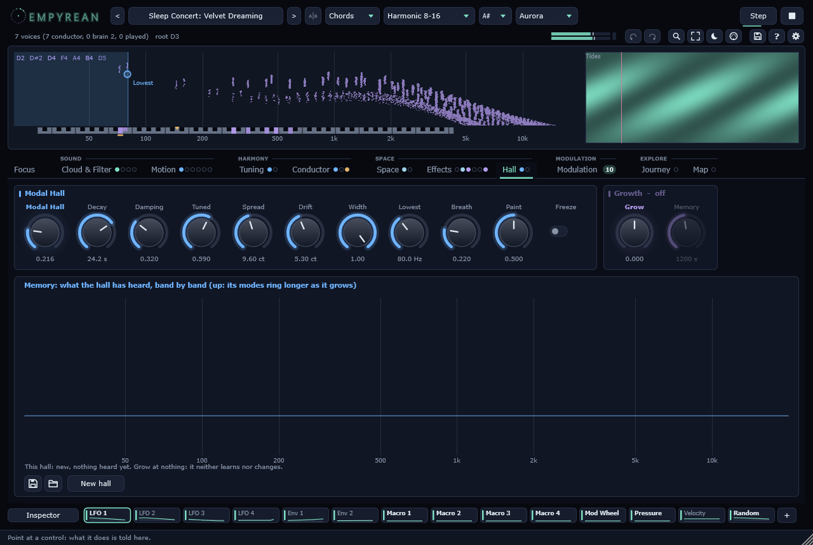
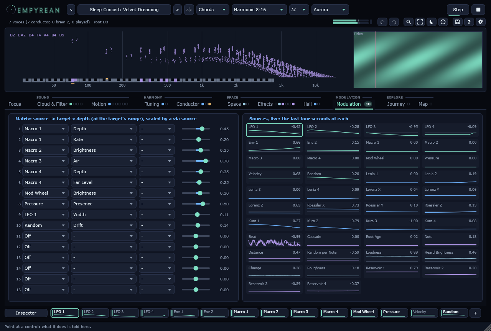
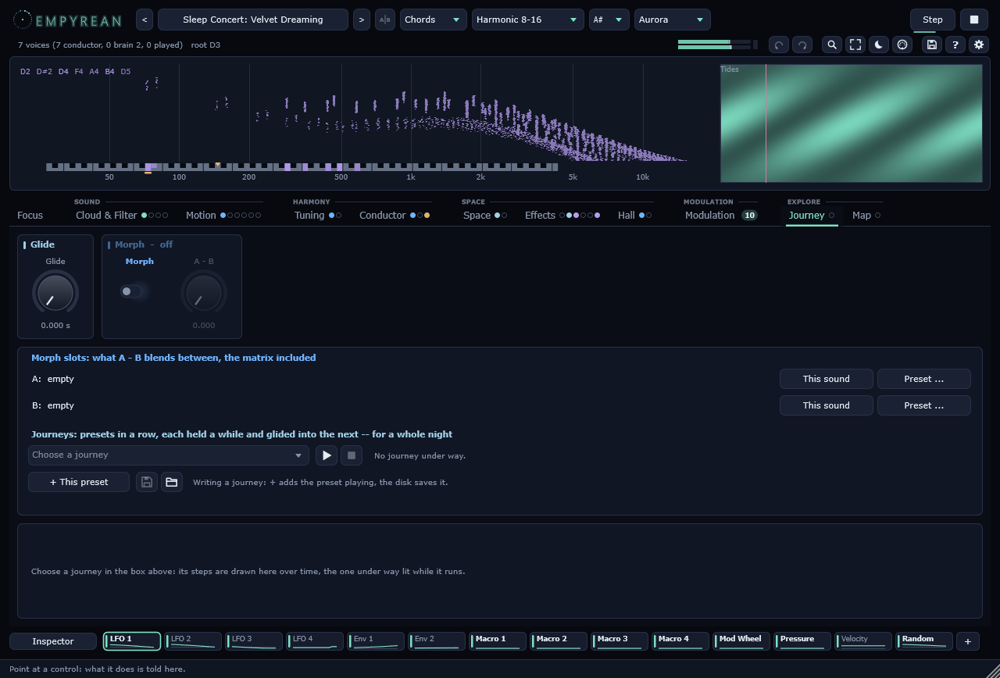
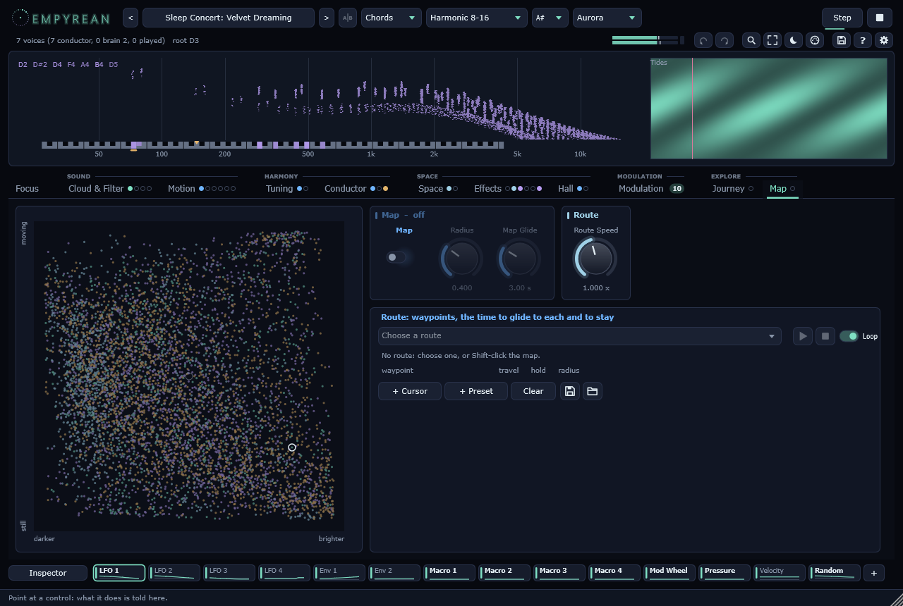

EMPYREAN
An additive ambient synthesizer: twenty thousand partials per voice, on the graphics card
Version 0.15.0 · 211 parameters · 6144 presets · manual built 15.10.2026

The instrument
An additive ambient synthesizer: every voice is twenty thousand sine waves, computed on the graphics card. Each harmonic of a note is not one sine but a cloud of slightly detuned ones, every partial with its own slow drift, its own shimmer and its own place in the stereo field.
It plays by itself or under your hands. The conductor (Autoplay) is Noctuary's: a chord in just intonation that changes one voice at a time, minutes apart, in the spirit of Robert Rich's sleep concerts. Press Play in the header (or Space in the standalone) to start or stop it; play the keyboard over it, or switch it off and play alone. The standalone's window can be maximised from its title bar or fill the screen with F11 (Esc leaves); the pages grow with it.
The picture under the header shows the partials themselves, as the graphics card has them this moment: every eighth partial of every voice a point, its frequency across, its loudness up, leaving a trail that fades -- so you see each harmonic's cloud, and every partial rising, falling and wandering as the motions, the field and the landscapes move it. Green for what you play, violet for the conductor, pale blue for the second conductor, pale grey for the ghosts of the memory. Under it the keys, from A0 to C8, each where its pitch lies on the same axis: the notes that sound light up in the same colours (dimmer the further away and the softer they are), a small amber mark stands over the conductor's root, and the sounding notes' names are written in the picture's corner, low to high. On the right, the landscape the Aurora motion reads, with a line where the voices are in its loop.
The picture shows what the page in front edits, where it acts, and it can be taken by the hand. On Cloud & Filter, the filter's curve over the partials and the comb's notches where they stand: drag the curve's point across for the cutoff and up or down for the resonance; and the air's band (drag its centre and its edge) and the place where the brightness lets the harmonics fade (drag it). On Conductor, the conductor's register as a bracket over the keys: drag its ends. On Motion, the ripple's string, as the partials ride it. On Hall, the hall's memory and its lowest mode (drag it).
Canvas (the button in the picture's corner, or a double-click on it) gives the window to the picture alone: the partials large, the living landscape or the landscape faintly behind them, the keys, and the four macros at the bottom -- for listening, for a sleep concert on a screen. A click in the spectrum plays the key under it, louder the higher you click; drag to move from key to key. A double-click or Esc brings the pages back.
The header: the preset (its name opens the browser, the arrows step through the bank, A | B held lets you hear the preset as it was while your sound has moved from it), Autoplay's mode and Step -- a thin line under Step runs down to the conductor's next exchange -- and the scale, root and motion; in the second row what sounds, the output's meter (red at its end once it reached full scale; a click puts it out), and the tools: undo and redo, the search, the canvas, the night, the MIDI marks (every knob's learned controller shown on it), save, help and the settings (with the window's size and the zoom, which makes the controls themselves larger).
Finding your way. Ctrl+K (or the search in the header) opens the command palette: type a few letters -- they may be scattered, "mhd" finds Modal Hall Decay -- and any knob, preset or action is there; a knob's page opens and the knob lights up, and "cutoff 800" sets it. Words for how a sound sounds find presets by their measured traits: "dark calm wide", "bright moving", "pure narrow" (and dunkel, hell, ruhig, bewegt, breit, schmal, rein, luftig). Along the bottom of the window the info line tells what the control under the mouse does, its value now and what in the matrix moves it. On the first start a short tour shows the way in; Settings brings it back.

Night is a dark room's mode (the crescent in the header, the settings, the palette): the window dims and turns warm, the picture moves half as often, and a canvas left alone for a minute and a half fades further, until the mouse moves.
The pages stand in a strip under the picture, in sections: Focus; Sound (Cloud & Filter, Motion); Harmony (Tuning, Conductor); Space (Space, Effects, Hall); Modulation (Modulation, Matrix); Explore (Journey, Map). Beside each page's name a dot for every group with main controls tells what is on there -- lit in the group's colour while it plays, a faint ring while it rests -- and a page whose groups all rest has its name dimmed; Matrix counts the rows in use. Point at a page to read which groups are on and which are off.
Along the bottom, the modulation dock: every source a chip with its last four seconds drawn small -- the LFOs, envelopes and macros, the mod wheel, pressure, velocity and the random curve, then every other source a row of the matrix reads, and one more chosen with "+". Drag a chip onto any knob of any page and the source modulates it: a new row of the matrix at a fifth of the knob's range, its arc round the knob at once. Click a chip and the inspector shows the source: its trace, its own knobs (an LFO's shape and rate, a macro, the attractors' period ...) and every knob it moves, each with its depth and a button that removes the row; click a target's name to see its knob. Hold Alt and drag any knob: the source the inspector shows modulates it by as much as you drag (up more, down less or the other way). Every change to the matrix -- a chip dropped, a depth, a row removed -- is a step Ctrl+Z takes back. In a tall window the inspector stays docked over the dock; in a smaller one it opens over the pages' bottom and shuts with its x, the Inspector button or Esc.

The window opens as large as the screen allows it -- three quarters of the screen's width, at least 1280 x 860 -- and comes back at the size it was left at, on the page it was left on. Every page fits it without scrolling at 1280 x 860 and more: the boxes fill the rows as tightly as they can, the Focus page stands in two columns, and the picture gives way where a page needs the room; in a larger window the picture grows. A smaller window scrolls.
The pages are groups of knobs. A group's main controls -- what wakes it: the echo's level, the hall's, the sync's depth -- have their name in the group's colour and a soft halo; while they all stand at nothing (and nothing in the matrix moves them), the group rests: its other knobs dim, and "off" stands by its title.
Focus: the simple ways in

The Focus page is the way in without knowing the knobs. Every knob that shapes the sound was measured: around 48 presets it was moved a little and the sound measured again -- how much brighter, livelier, wider and noisier it became, and how much louder. What follows from that is here.
Nudge: Darker or Brighter, Narrower or Wider, Purer or Airier move the few knobs (up to four) that do the most for that measure and little for the others, the shortest way there, the level held where they leave room: brighter does not also mean louder or wider. A knob at nothing stays there -- a nudge never switches a layer on (the air, the melt, the hall). Calmer or Livelier go by a rule instead: every rate that moves something 1.23 times slower or faster, drift and shimmer a little less or more -- motion measured over seconds swings too much with slow cycles to steer by. Undo takes a press back.
Focus: the few knobs that do the most for this sound (those that are heard; at most three from one group), all the rest left on the pages.
Variations: six sounds near this one, a few heard knobs moved at random (none that is at nothing), more on the knobs that do more, the level held by the master as measured. They are there whenever the page is: made anew each time the sound has moved (not while the map or the morph plays it), each tile telling what it changes. Hold a tile to listen to it (the sound glides there and back when you let go); once heard, it offers Keep, which makes it the sound, and the next six are made around it -- so the sound evolves by your ear alone, a step at a time. New six draws others, Back returns to the sound before; the slider sets how far they go.
Teach: a macro learns a gesture by example. Press Teach (the sound now is the macro's place at its value now; a ring pulses round it while it learns), change any knobs, move the macro to where the change should be (1, say), and press Set here: the knobs go back, and the macro carries the change -- at 0 the sound as it was, at 1 the sound you made, between them half way. Cancel ends it with nothing learned. Up to four places; the small x beside a taught macro forgets. A lesson is a change, not a sound: it carries over to the next preset ("this much brighter and slower"), adds to the matrix's rows on the same macro, and is kept with the session.
Snapshots keep the sound as it is now -- every knob and the matrix, with a small picture of its partials: the first free tile is a "+" that takes one. Click one to come back to it (the sound glides there); right-click to put it into the morph's slot A or B, or to forget it. Up to eight; they are kept with the session.
The macros are large knobs here, named by what they move most: a lesson's furthest knob, or the target of their strongest matrix row.
Find: open or drop a recording (WAV or FLAC). Its brightness, motion, width and noisiness are measured as the presets' were, and the presets nearest it are listed -- click one to play it -- and ringed on the map.
The cloud

Spectrum shapes the harmonics: Tilt makes the upper ones fall away, Brightness closes a window over them, Odd / Even thins one kind, Inharmonic stretches them as a stiff string does. Stretch spreads every octave of the harmonics to that many cents (1200: harmonic): a stretched spectrum with the Timbre scale, which is made from the spectrum, gives a stretched tuning in which it sounds consonant again -- a harmony from another world. Shift moves every partial by the same number of hertz, as a frequency shifter does: the harmonics stop being multiples of the fundamental, and a chord turns metallic, bell-like, beating. The voice keeps its level whatever the shape: these colour the sound, they do not make it louder.
Cloud sets how wide each harmonic's cloud is (in cents, and how it widens towards the top), how far every partial drifts in pitch and how far its level shimmers, and how far the partials scatter across the stereo field. Purity (Tuning) narrows the clouds too, so that just intervals can lock.
Air adds a band of noise made of partials around a multiple of the fundamental: Centre, Width and Flicker (how fast its partials quiver -- which is what makes them heard as noise).
Turbulence is the bloom of a struck gong or tam-tam. In a real plate the modes are not alone: struck hard, they hand their energy on to the modes above them, the more the louder they are. Here every harmonic of a note does that -- seven tenths of what it passes on to the next harmonic, three tenths to its octave -- by the cube of how hard the note was played and how loud the instrument sounds, and Settle is how long the spectrum takes to come back to its own shape when it grows soft. The power moves, it is not made: a soft chord stays pure, a loud dense swell breaks slowly into a shimmering glow above itself without growing louder.
Cloud
| Control | Key | Range | Default |
|---|
| Partials | partials | 200 .. 20000 | 20000 |
| Spectral Tilt | tilt | 0.3 .. 3 | 1.2 |
| Brightness | brightness | 0 .. 1 | 1 |
| Odd / Even | odd_even | -1 .. 1 | 0 |
| Inharmonic | inharmonic | 0 .. 1 | 0 |
| Width | cloud_width | 0 .. 100 ct | 25 ct |
| Width Slope | width_slope | 0 .. 1 | 0.3 |
| Drift | drift | 0 .. 30 ct | 3 ct |
| Drift Rate | drift_rate | 0.01 .. 2 Hz | 0.1 Hz |
| Shimmer | shimmer | 0 .. 1 | 0.4 |
| Shimmer Rate | shimmer_rate | 0.01 .. 2 Hz | 0.15 Hz |
| Stereo | stereo | 0 .. 1 | 1 |
| Stretch | stretch | 1080 .. 1320 ct/oct | 1200 ct/oct |
| Shift | shift | -200 .. 200 Hz | 0 Hz |
Air
| Control | Key | Range | Default |
|---|
| Air | air | 0 .. 1 | 0 |
| Centre | air_center | 1 .. 12 x | 3 x |
| Width | air_width | 50 .. 2400 ct | 600 ct |
| Flicker | air_jitter | 0.5 .. 40 Hz | 8 Hz |
Turbulence
| Control | Key | Range | Default |
|---|
| Turbulence | turbulence | 0 .. 1 | 0 |
| Settle | turbulence_time | 0.5 .. 60 s | 6 s |
Motion and landscapes

Every partial has envelopes of its own, on three lanes: loudness, pitch and place. A motion sets them all at once: Random (every partial for itself, a fine glitter), Wave (a wave climbing through the spectrum), Pendulum (each harmonic pulses a little faster than the one below, over a bass that stays), Breathe (loudness, place and pitch travel through each cloud), Glissando (every partial glides into its note from up to fifteen semitones away), Aurora (the partials read a landscape).
Your own landscape: click the landscape beside the picture and open a picture (PNG, JPEG, BMP, TIFF, GIF) or a recording (WAV, FLAC). A picture is read with time from left to right (a minute at Rate 1) and the frequencies from the bottom (20 Hz) to the top (20 kHz), its brightness as loudness; a recording brings its own motion, the colour taken out of it. It becomes the landscape Your Own, and if nothing reads a landscape yet the motion becomes Aurora. The file is remembered with the project.
A landscape is time against frequency: every partial reads the column at its own frequency. Aurora, Shepard (bands climbing for ever), Tides, Rain (short glints) and Choir (the formants of u-o-a-e-i, the vowel turning slowly). Rate and Depth scale whatever the motion does; Depth 0 leaves the bare cloud.
The field moves the partials as a whole, on top of any motion. Scale pulls every partial towards the nearest pitch of the scale: a wide or stretched cloud gathers into the key and keeps only a narrow shimmer. Swarm lets a few attractors (Attractors) wander through the spectrum on chaotic paths (Wander is how fast) and gathers the partials within their reach (Radius); Scatter pushes the partials away from them instead, gaps moving through the sound like dust parted by a wind. Flock makes every cloud a flock of starlings: each partial keeps to its neighbours' place and pace without coming closer to them than half the distance they keep at rest, and a wind of its own blows each cloud about, so the partials swirl, bunch and spread around their harmonic. Pull is how fast the partials may move, Spring how strongly they are drawn back to their own places. The partials keep their own phases while they gather, so the level stays.
Orbit makes every partial a charged particle in pitch and side. The scale's pitches are wells it is drawn into, and a magnetic field bends every move it makes, so instead of settling it circles: fast small circles riding a slow circling of the well, in pitch and across the field at once -- a chorus that turns. Pull is how deep the wells are, Wander how strong the field (how fast they circle), Spring the damping (light, the circles keep their course; heavy, they wander), Radius the cents to a full side, and the orbits about half of it. Orbits wider than the scale's steps hop from pitch to pitch.
The living landscape is a field that lives on the graphics card while you listen, and every partial reads it at its frequency (across) and its place in its cloud (along), so each harmonic is a slice through the living pattern. Lenia is Conway's Life made continuous: creatures that drift, pulse, split and die. Turing is Gray-Scott reaction-diffusion, the chemistry behind a leopard's spots: Character leads it from spots through dividing cells, coral and worms to mazes (for Lenia it sets the growth). Life Rate is how fast it lives, Life Depth how far the partials follow it, Zoom how much of its width the spectrum spans. A field that dies or fills up is seeded again; the level is kept from the field's own measure. While it lives, the panel beside the picture shows it.
The living landscape can also be an animated picture, made with the continuous transforms of the Kaleidoscope visualizer: Kaleidoscope folds the landscape (yours too) into turning mirror wedges round a slowly wandering centre; Tunnel flies down a tunnel lined with it, rings born in the middle and running out to the low and the high; Spiral winds it into a spiral that zooms for ever -- its patterns travel through the spectrum without end; Flow carries it on a current of noise like ink in water; Feedback feeds the field back into itself, turned and zoomed, so it spirals outward and never repeats; Rain lets drops fall on a pond, their rings spreading and crossing; Starfield streams stars out of the middle; Moire lays two turning gratings over each other, their broad bands wandering slowly. Life Rate is how fast it flows, Turn how fast it turns (turns a minute), Sides the mirror wedges, spiral arms or lines, Character how strongly it distorts. What moves across the picture is heard as the colour wandering; what moves along it, within each harmonic's cloud, as its shimmer and width.
Two more fields answer to what is played. Fluid is a real fluid (a lattice Boltzmann simulation) in which every note blows ink and momentum at its own frequency and at its octave: the plumes rise, roll up into eddies, shed vortices and drift into the frequencies around them over minutes, and where the ink is, the partials sound. Character goes from syrup to turbulence, Life Rate is how fast it flows; the ink fades over about twenty-five seconds. Islands is the separation of oil and water (Cahn-Hilliard): a fine-grained field gathers on its own into ever fewer, larger regions that drift slowly across the spectrum -- an unsettled sound calming over ten minutes into a few broad islands of colour. Character goes from a fine labyrinth to a few large islands, Life Rate is how fast it gathers.
Partial Sync gives every partial a slow oscillator of its own, which moves its loudness (Sync), at a rate scattered around Sync Rate by Spread. Coupling pulls the members of each harmonic towards their common phase -- the mathematics of fireflies falling into step. Loosely coupled, each partial flickers for itself and the flickering averages away; past a critical strength they lock, and the whole cloud of a harmonic pulses as one. Turn Coupling slowly and you hear a crowd find its rhythm.
Sync Mode chooses how they couple. Global is the above. Chimera couples each partial only to its neighbours round its cloud, with a little lag (Lag): then an ordered part and a disordered part live side by side -- a clear pulsing core in a flickering mist -- and the border between them wanders. Swarm makes every partial a swarmalator: it also has a place on a small circle in pitch and in the field (Reach is the circle's size in cents, and with it how far it moves from side to side), and place and phase pull each other (Swarm: positive, like phases gather; negative, they part). Their states are heard clearly: with Coupling at nothing and Swarm up, or Coupling up and Swarm below nothing, a phase wave -- every place its own phase, so the loudest part of the cloud circles through pitch and field at Sync Rate, a slow vortex; with both up, two groups opposite each other on the circle, low on one side and high on the other, pulsing in turn; between these, the wave broken into pieces that pulse against each other; with Swarm well below nothing, each partial for itself.
Ripple stretches a string along the spectrum. Every new note strikes it at its harmonics, and the ripples run up and down the spectrum (Ripple Speed, in octaves a second), reflect at its ends, cross each other and die away (Ripple Decay); every partial's loudness rides the wave where it stands (Ripple). A chord change sends a shiver through everything that sounds. Bend slows the wave where the notes sound, down to a fifth or less of its speed: the waves linger at the notes, pile up there and are partly thrown back, as light near a heavy mass.
Dispersion makes each partial's clock late by its pitch. Positive, the low ones run up to that many seconds late: an attack or a glint falls from the top as a cascade, like a drop on ice. Negative, the high ones are late and it rises. On a held sound it is heard where the sound changes: attacks, releases, the glints of the landscapes.
Time Bend gives every partial a clock of its own that runs slower where the spectrum is dense -- as time does near a heavy mass: its drift, its shimmer and its sync's pulse slow down where much sounds, and run on at their pace where little does. Below nothing it is the other way round: the crowded bands quicken and flicker, the sparse ones stay calm. Turning it never jumps.
Motion
| Control | Key | Range | Default |
|---|
| Motion | motion | None, Random, Wave, Pendulum, Breathe, Glissando, Aurora | Breathe |
| Rate | motion_rate | 0.1 .. 4 | 1 |
| Depth | motion_depth | 0 .. 1 | 1 |
| Landscape | landscape | Aurora, Shepard, Tides, Rain, Choir, Your Own | Aurora |
| Dispersion | dispersion | -1.5 .. 1.5 s | 0 s |
Time
| Control | Key | Range | Default |
|---|
| Time Bend | time_bend | -1 .. 1 | 0 |
Field
| Control | Key | Range | Default |
|---|
| Field | field_mode | Off, Scale, Swarm, Scatter, Flock, Orbit | Off |
| Pull | field_strength | 0 .. 1 | 0.5 |
| Radius | field_radius | 5 .. 600 ct | 60 ct |
| Spring | field_spring | 0 .. 1 | 0.2 |
| Wander | field_rate | 0.005 .. 1 | 0.05 |
| Attractors | field_count | 1 .. 8 | 4 |
Life
| Control | Key | Range | Default |
|---|
| Life | life_mode | Off, Lenia, Turing, Kaleidoscope, Tunnel, Spiral, Flow, Feedback, Rain, Starfield, Moire, Fluid, Islands | Off |
| Life Depth | life_depth | 0 .. 1 | 0.6 |
| Life Rate | life_rate | 0 .. 1 | 0.3 |
| Character | life_character | 0 .. 1 | 0.3 |
| Zoom | life_zoom | 0.25 .. 1 | 1 |
| Sides | life_sides | 2 .. 12 | 6 |
| Turn | life_turn | -4 .. 4 /min | 0.5 /min |
Sync
| Control | Key | Range | Default |
|---|
| Sync | sync_depth | 0 .. 1 | 0 |
| Coupling | sync_coupling | 0 .. 1 | 0.5 |
| Sync Rate | sync_rate | 0.05 .. 6 Hz | 0.5 Hz |
| Spread | sync_spread | 0 .. 1 | 0.3 |
| Sync Mode | sync_mode | Global, Chimera, Swarm | Global |
| Swarm | sync_swarm | -1 .. 1 | 0.5 |
| Reach | sync_reach | 0 .. 100 ct | 20 ct |
| Lag | sync_lag | 0 .. 1 | 0.5 |
Ripple
| Control | Key | Range | Default |
|---|
| Ripple | ripple_depth | 0 .. 1 | 0 |
| Ripple Speed | ripple_speed | 0.1 .. 4 oct/s | 0.8 oct/s |
| Ripple Decay | ripple_decay | 0.5 .. 30 s | 6 s |
| Bend | ripple_bend | 0 .. 1 | 0 |
Filter and envelope
The filter is read as a frequency response at every partial: LP 6, LP 12, LP 24, HP 12, BP 12, Notch, Peak and Formant (whose cutoff picks the vowel). Env Amount moves the cutoff with the voice's envelope, in octaves; Key Track follows the note; Drift lets the cutoff wander on its own. MIDI controller 74 moves the cutoff.
The spectral comb cuts notches into the spectrum, evenly spaced per octave (Density), as deep as Comb says -- read at every partial, so it needs no delay line and can be anything from one notch an octave to twelve. Sweep moves the notches through the spectrum, in notches a second: since the comb repeats every notch, it travels on without end, a phaser that rises (or, negative, falls) forever. Stereo combs the left and the right of the field apart, so the notches travel crosswise through the space. The level is kept whatever the depth.
The envelope is every voice's: Attack, Decay, Sustain, Release, in seconds to minutes.
Filter
| Control | Key | Range | Default |
|---|
| Model | filter_model | Off, LP 6, LP 12, LP 24, HP 12, BP 12, Notch, Peak, Formant | Off |
| Cutoff | cutoff | 40 .. 18000 Hz | 2500 Hz |
| Resonance | resonance | 0 .. 1 | 0.15 |
| Env Amount | filter_env | -4 .. 4 oct | 0 oct |
| Key Track | keytrack | 0 .. 1 | 0.5 |
| Drift | filter_drift | 0 .. 1 | 0.3 |
Comb
| Control | Key | Range | Default |
|---|
| Comb | comb_depth | 0 .. 1 | 0 |
| Density | comb_density | 0.25 .. 12 /oct | 2 /oct |
| Sweep | comb_sweep | -2 .. 2 /s | 0.1 /s |
| Stereo | comb_stereo | 0 .. 1 | 0.5 |
Envelope
| Control | Key | Range | Default |
|---|
| Attack | attack | 0.01 .. 60 s | 6 s |
| Decay | decay | 0.01 .. 60 s | 4 s |
| Sustain | sustain | 0 .. 1 | 1 |
| Release | release | 0.05 .. 120 s | 12 s |
Tuning

Scale chooses the tuning: equal temperament, the just scales, the harmonic series, slendro, Bohlen-Pierce, or Timbre -- the scale the cloud's own spectrum asks for (Sethares). Root is its tonic; Keys maps the keyboard (snapped to twelve keys, or one key per degree). Purity blends equal temperament (0) with the scale (1). Tide leans the whole instrument by a few cents on a curve of minutes.
Self-Tune lets a chord tune itself. Where a harmonic of one voice nearly meets a harmonic of another (within Reach), the two voices pull together until they no longer beat: an equal-tempered major third settles to a pure one within seconds, and gives way again when the chord changes. Anchor draws every voice back towards its pitch in the scale.
Under the knobs, the octave over the root as a ruler: equal temperament's twelve steps as faint lines with their names, the scale's pitches as lines with how far each stands from its step in cents (+4, -14, -49 ... for the harmonics 8 to 16), and every voice as a light where it sounds -- higher up for a higher octave, green for yours, violet for the conductor's -- with a tail as long as Self-Tune pulls it towards a pure interval. Purity is said under it: how far the voices stand from equal temperament towards the scale.
Tuning
| Control | Key | Range | Default |
|---|
| Scale | scale | 12-TET, JI Major (Ptolemy), JI Minor, JI 7-limit, Pythagorean, JI Pentatonic, Harmonic 8-16, Subharmonic 16-8, Slendro (JI), Bohlen-Pierce (JI), Otonality 1-11, User (Scala), Timbre (Sethares) | JI 7-limit |
| Root | root | C, C#, D, D#, E, F, F#, G, G#, A, A#, B | D |
| Keys | keymap | Snap to 12 keys, Consecutive degrees | Snap to 12 keys |
| A4 | ref_pitch | 415 .. 466 Hz | 440 Hz |
| Purity | purity | 0 .. 1 | 1 |
| Tide | tide | 0 .. 30 ct | 0 ct |
| Tide Period | tide_period | 1 .. 60 min | 12 min |
| Self-Tune | tune_gravity | 0 .. 1 | 0 |
| Reach | tune_reach | 5 .. 60 ct | 30 ct |
| Anchor | tune_anchor | 0 .. 1 | 0.2 |
The conductor

Free lets notes come and go on their own timers. Chords (Autoplay) keeps the chord full and exchanges one voice at a time, every so many seconds (Every) or now (Step): the new note is the one that sits best against the voices that stay, within Voice Lead semitones. Tension allows notes that lean; Root Move lets the harmony travel. Timbre judges consonance from the cloud's own spectrum.
Lowest - Highest is one bar with two ends, the register the conductor chooses from (the bracket over the keys in the picture is the same); Hold Min - Hold Max likewise, the span a Free note is held. The thin line under Step in the header runs down to the next exchange.
Foundation gives the music a floor: one voice holds the conductor's root in the octave from C2 up (from Lowest, when the register begins lower), as long as the root stands, and moves with it when the root moves; the chord is drawn from a fifth above it, so nothing crowds or muddies the bass. It stands close and follows the chord's loudness -- half a voice under a lone note, a little more than one voice under a full chord, so it neither drowns a chord still arriving nor vanishes under a full one; the knob sets its share. At 0 there is none and the conductor chooses over the whole register as before. Most presets have one; a few float.
Follow Light lets the conductors choose where the landscape is bright. Every candidate note is weighed by how much of its harmonics fall into the light -- the living landscape's columns while it lives, otherwise the landscape the Aurora motion reads, as a new note would read it over its first seconds -- against the register's mean; at 1, a note in twice the light is eight times as likely. The harmony then comes where the light is, and the two halves of the instrument speak to each other.
Brain 2 is a second conductor in the background: its root follows the first one's plus Interval, it plays slowly (Rate 2), few notes (Density 2), deep in the space (Depth 2).
Conductor
| Control | Key | Range | Default |
|---|
| Active | brain_on | off / on | on |
| Autoplay | auto_mode | Free, Chords | Chords |
| Event Rate | brain_rate | 2 .. 300 s | 25 s |
| Every | auto_rate | 2 .. 900 s | 45 s |
| Density | brain_density | 1 .. 10 | 5 |
| Hold Min | brain_hold_min | 5 .. 600 s | 30 s |
| Hold Max | brain_hold_max | 5 .. 600 s | 120 s |
| Lowest | brain_low | 24 .. 96 | 36 |
| Highest | brain_high | 24 .. 108 | 79 |
| Consonance | brain_consonance | 0 .. 1 | 0.7 |
| Wander | brain_wander | 0 .. 1 | 0.3 |
| Voice Lead | auto_lead | 1 .. 24 st | 7 st |
| Tension | auto_tension | 0 .. 1 | 0 |
| Root Move | auto_root_move | 0 .. 1 | 0.2 |
| Timbre | brain_timbre | 0 .. 1 | 0 |
| Step | auto_step | off / on | off |
| Brain 2 | brain2_on | off / on | off |
| Interval | brain2_interval | -24 .. 24 st | -12 st |
| Density 2 | brain2_density | 1 .. 6 | 2 |
| Rate 2 | brain2_rate | 2 .. 300 s | 60 s |
| Depth 2 | brain2_depth | 0 .. 1 | 0.9 |
| Cascade | brain_cascade | 0 .. 1 | 0 |
| Follow Light | brain_light | 0 .. 1 | 0 |
| Foundation | brain_foundation | 0 .. 1 | 0 |
MPE
| Control | Key | Range | Default |
|---|
| MPE | mpe | off / on | on |
| Bend Range | mpe_bend | 1 .. 96 st | 48 st |
| Press | mpe_press | Off, Level, Filter, Brightness, Width, Nearer, Shimmer, Motion | Level |
| Press Depth | mpe_press_depth | 0 .. 1 | 0.5 |
| Slide | mpe_slide | Off, Level, Filter, Brightness, Width, Nearer, Shimmer, Motion | Brightness |
| Slide Depth | mpe_slide_depth | 0 .. 1 | 0.5 |
Space

Every note stands on a plane between the ear (0) and the far background (1): the conductor puts some notes near and most deep (Depth), played notes stand at Keys Depth. A far note is quieter, darker and heard only through the far reverb. Breath lets every voice's plane wander; Doppler raises a voice that comes closer. Presence lifts the 2-5 kHz band on the near plane; Pad Low Cut leaves the bottom free.
The far reverb (Level, Size, Decay, Damping) is Noctuary's, with its Diffusion (the swell before the hall), Pre-Delay, Unmask (the hall steps aside, band by band, wherever the near plane sounds), its four networks (Far Mode: Colourless rings least, Rotating lets the tail drift) and Freeze.
Below the knobs the space is seen from above: you at the bottom, the near plane close to you, the far plane at the rim (glowing as loud as the far reverb). Every voice is a light at its plane, across from its pitch (low notes left, high right), as large as it is loud, in the colour of whose note it is; Breath lets it wander, and its trail shows where it was. Drag the dashed rings to set Depth (where the conductor puts its notes) and Keys Depth (where yours stand).
Binaural (for headphones) places every partial of the near plane at a point of its own round the head: the head's shadow, the folds of the ear and the time the sound takes round the head, worked out for each partial at its own frequency. Surround spreads the places from the front half to all round, Height lifts and lowers them, Orbit turns the whole cloud round the listener. The far plane stays as it was, heard through the far reverb; the master's width and mono bass step aside while Binaural is on. Master: the level, the bass made mono below Bass Mono, and the width.
Space
| Control | Key | Range | Default |
|---|
| Depth | depth | 0 .. 1 | 0.6 |
| Keys Depth | keys_depth | 0 .. 1 | 0.2 |
| Far Level | far_level | 0 .. 1 | 0.8 |
| Far Size | far_size | 0.5 .. 3 | 2 |
| Far Decay | far_decay | 1 .. 90 s | 25 s |
| Far Damping | far_damp | 0 .. 1 | 0.5 |
| Presence | presence | 0 .. 6 dB | 0 dB |
| Pad Low Cut | pad_low_cut | 0 .. 300 Hz | 0 Hz |
| Breath | breath | 0 .. 1 | 0 |
| Breath Rate | breath_rate | 0.005 .. 0.2 Hz | 0.03 Hz |
| Doppler | doppler | 0 .. 1 | 0 |
| Diffusion | far_diffuse | 0 .. 1 | 0.5 |
| Pre-Delay | far_predelay | 0 .. 500 ms | 20 ms |
| Unmask | far_unmask | 0 .. 1 | 0.3 |
| Far Mode | far_mode | Classic, Scattering, Colourless, Rotating | Colourless |
| Far Freeze | far_freeze | off / on | off |
Master
| Control | Key | Range | Default |
|---|
| Master | master_gain | -40 .. 12 dB | 0 dB |
| Bass Mono | bass_mono | 40 .. 300 Hz | 150 Hz |
| Width | stereo_width | 0 .. 2 | 1.2 |
Binaural
| Control | Key | Range | Default |
|---|
| Binaural | binaural | off / on | off |
| Surround | binaural_span | 0 .. 1 | 0.5 |
| Height | binaural_height | 0 .. 1 | 0.3 |
| Orbit | binaural_orbit | -0.5 .. 0.5 Hz | 0 Hz |
Echoes and rooms

Echo is Noctuary's: two delays whose times glide and wander, a little different in each ear. Cross takes each side's feedback partly from the other, Damping darkens the loop, Absorb narrows it to a band as the feedback rises (so long echoes drown in fog instead of merely getting quieter), and Duck darkens it while the voices are loud, so a new note does not have to fight the last one's tail. To Far sends the echoes into the far plane, where they recede into the far reverb. Echo 2 runs after the first and hears its echoes: longer chains. The small chain between Time L and Time R links them: turning one turns the other in proportion.
Room gives the near plane a place to stand: the early reflections of a room (Room Size, Absorb), arriving from where the voices stand, and a small reverb (Near Reverb, Near Decay, Near Damping).
The spectral echo takes the sound apart into five hundred bands and gives each a delay line of its own. Tilt brings the high bands back later than the low ones (or earlier), Scatter gives every band a time of its own, Feedback and Damping set how long and how dark the repeats are, To Far how much of them recedes. An attack comes back as a cascade, a chord as a spreading shimmer.
The melt holds the sound's spectrum and lets it melt: two thousand bands, each keeping what it heard and fading over Melt Time, while the held spectrum slowly flows into its neighbours (Spread: how many octaves it has spread after a second). What has been held longest is spread widest, so a chord leaves a glow that widens into the space between its notes. A phase vocoder sings it again, each band at the frequency it heard, drawn towards its own pitch as it melts, a little apart in each ear. To Far sends it into the far plane.
Memory keeps a ghost of every note let go. It rises over Bloom once the note has gone, fades over Memory Time, and while it fades it widens, drifts and darkens (Blur) and recedes into the far plane (Sink): the harmony of the last minutes stands faintly behind the present one.
Echo
| Control | Key | Range | Default |
|---|
| Echo | delay_mix | 0 .. 1 | 0 |
| Time L | delay_time_l | 0.02 .. 4 s | 0.75 s |
| Time R | delay_time_r | 0.02 .. 4 s | 1.13 s |
| Feedback | delay_feedback | 0 .. 0.95 | 0.45 |
| Cross | delay_cross | 0 .. 1 | 0.35 |
| Damping | delay_damp | 0 .. 1 | 0.45 |
| Absorb | delay_absorb | 0 .. 1 | 0.3 |
| Duck | delay_duck | 0 .. 1 | 0.3 |
| To Far | delay_to_far | 0 .. 1 | 0.4 |
| Echo 2 | delay2_mix | 0 .. 1 | 0 |
| Time L 2 | delay2_time_l | 0.05 .. 4 s | 2.4 s |
| Time R 2 | delay2_time_r | 0.05 .. 4 s | 3.1 s |
| Feedback 2 | delay2_feedback | 0 .. 0.95 | 0.55 |
| Damping 2 | delay2_damp | 0 .. 1 | 0.6 |
| To Far 2 | delay2_to_far | 0 .. 1 | 0.6 |
Room
| Control | Key | Range | Default |
|---|
| Early | early_level | 0 .. 1 | 0.2 |
| Room Size | early_size | 2 .. 40 m | 14 m |
| Absorb | early_absorb | 0 .. 1 | 0.4 |
| Near Reverb | near_mix | 0 .. 1 | 0.1 |
| Near Decay | near_decay | 0.2 .. 8 s | 1.8 s |
| Near Damping | near_damp | 0 .. 1 | 0.5 |
Spectral Echo
| Control | Key | Range | Default |
|---|
| Spectral Echo | spec_mix | 0 .. 1 | 0 |
| Time | spec_time | 0.05 .. 4 s | 0.8 s |
| Tilt | spec_tilt | -1 .. 1 | 0.5 |
| Scatter | spec_scatter | 0 .. 1 | 0.3 |
| Feedback | spec_feedback | 0 .. 0.95 | 0.5 |
| Damping | spec_damp | 0 .. 1 | 0.4 |
| To Far | spec_to_far | 0 .. 1 | 0.4 |
Melt
| Control | Key | Range | Default |
|---|
| Melt | melt_mix | 0 .. 1 | 0 |
| Melt Time | melt_time | 0.5 .. 60 s | 8 s |
| Spread | melt_spread | 0 .. 2 oct | 0.5 oct |
| To Far | melt_to_far | 0 .. 1 | 0.4 |
Memory
| Control | Key | Range | Default |
|---|
| Memory | memory_level | 0 .. 1 | 0 |
| Memory Time | memory_time | 10 .. 300 s | 60 s |
| Bloom | memory_bloom | 0.2 .. 20 s | 4 s |
| Blur | memory_blur | 0 .. 1 | 0.5 |
| Sink | memory_sink | 0 .. 1 | 0.6 |
The modal hall and its growth

The modal hall is a reverb made the way the instrument is made: sixty-five thousand resonances on the graphics card, each a sine that dies away, woken by everything the voices play. Decay is the time it takes to fall silent (60 dB) in the low range; Damping lets the upper octaves die sooner. Tuned puts that share of the resonances on the pitches of the scale, and Spread scatters them a few cents around their notes: with Tuned up, the hall rings in key, like the sympathetic strings of a viola d'amore, and retunes without a click when the scale or its root changes. Drift lets every resonance wander by a few cents, Width gives each its own place in each ear, Lowest keeps the bottom free. Breath lets every resonance's decay wander slowly, so the hall's colour moves while it rings. Paint lets the hall be heard through the landscape: its resonances light up where the landscape is bright, so the tail draws the aurora, the rain, the tides. Freeze holds the hall as it is, its input shut: a chord left hanging in the air.
Grow gives the hall a memory. It listens to everything that sounds, band by band over the octaves, and remembers how much it heard where, against the average -- a step of Memory towards what it hears while anything sounds (Memory: a minute to four hours). Growth (Grow above nothing) lets the bands it heard much ring longer, up to almost three times, and the bands it never heard a little shorter: the hall grows into the music played in it, and after an evening of one key it rings in that key of its own accord. Erosion (Grow below nothing) wears it away where it was used: those bands die sooner, and what was rarely played rings on. At nothing it neither learns nor changes.
The memory is the instrument's, not a preset's: it stays through every preset change, is kept with the session, and the curve below the knobs shows it, band by band. Save writes it into Documents/Empyrean/Halls, Load brings back a hall that grew elsewhere, New hall forgets everything.
Modal
| Control | Key | Range | Default |
|---|
| Modal Hall | modal_level | 0 .. 1 | 0 |
| Decay | modal_decay | 0.5 .. 60 s | 8 s |
| Damping | modal_damp | 0 .. 1 | 0.35 |
| Tuned | modal_tune | 0 .. 1 | 0.5 |
| Spread | modal_spread | 0 .. 50 ct | 6 ct |
| Drift | modal_drift | 0 .. 30 ct | 4 ct |
| Width | modal_width | 0 .. 1 | 1 |
| Lowest | modal_low | 30 .. 400 Hz | 80 Hz |
| Freeze | modal_freeze | off / on | off |
| Breath | modal_breath | 0 .. 1 | 0 |
| Paint | modal_paint | 0 .. 1 | 0 |
Hall
| Control | Key | Range | Default |
|---|
| Grow | hall_grow | -1 .. 1 | 0 |
| Memory | hall_memory | 60 .. 14400 s | 1200 s |
Modulation

Four LFOs, two envelopes and four macros move the instrument's knobs through a matrix of sixteen rows: a source, a target, a depth. The LFOs are slow by default (their rates step by the golden ratio, so they never line up) and have no hard edges: Square and Ramp glide through their jumps in a few percent of a cycle, Random is a drifting curve, Steps glides from one value to the next. The envelopes are shapes from the motions' bank, played from the start whenever a note arrives into silence; Rate sets how fast they run.
The macros are knobs without a place of their own: they mean what the matrix says. Every factory preset gives them the same meaning, so that a controller mapped to them plays every preset: Macro 1 the motion (Depth and Rate), Macro 2 the brightness or the filter, Macro 3 the air, Macro 4 the depth in the space. The mod wheel, channel pressure, the velocity of the last note and a slow random curve are sources too.
Depth is measured in the knob's own travel: 0.5 moves a knob by half its range up and down, whatever its unit. A knob that is modulated shows a ring around it where its value is now, and every row on it as an arc outside, in its source's colour (the colours of the sources' traces on this page): the span the row can move the knob over, and a dot where it moves it now.
The rows can be made where the knob is, on any page: right-click a knob. Its menu lists the rows on it, each with its depth to drag and an x to remove it, and Modulate with offers every source, sorted by kind -- a new row in the first free one, at a fifth of the knob's range. This page shows them as they are made.
Fields and chaos are Noctuary's. Lenia is a living field -- Conway's Life made continuous -- whose blobs drift, pulse, split and die, read at four places (Lenia Rate, Lenia Growth). Lorenz and Roessler are two strange attractors, never the same path twice (Chaos Period). Kura 1-4 are four slow oscillators coupled by Coherence: free at 0, falling into step towards 1, never quite as one. Three come from the piece itself: the Beat runs at the rate the lowest interval beats -- still when it is pure, quicker the further out of tune it drifts -- Cascade swells with the conductor's excitement (Cascade on the Conductor page lets its events breed events), Root Age climbs over ten minutes since the root last moved. Note, Distance and Random per Note follow the loudest voice and the last note.
Four sources are what the instrument hears of itself: Loudness, Heard Brightness (where its energy stands), Change (how fast its spectrum moves) and Roughness (how much its chord grinds, by Sethares' measure of how its voices' harmonics rub). Route them back into the sound and it regulates itself: roughness into Self-Tune, and the rougher it gets the harder it tunes; loudness against the far level, and it recedes when it swells.
The reservoir is a small network of 2048 neurons on the graphics card, coupled at random, listening to what the instrument hears and plays (its loudness, brightness, change and roughness, the Beat, the note, the conductor's excitement, Lenia) -- each measured against its last half minute, so it hears what changes. Its four readouts, Reservoir 1-4, are smooth curves that never repeat and remember what was played. Chaos is how strongly its neurons drive each other: below 1 it forgets and follows the music, about 1 it rings on at the edge of chaos, above it runs on by itself. Memory is how slowly it moves, Input how closely it listens. It is only computed while a row of the matrix reads it.
The Modulation page has the sixteen rows, and beside them every source live, coloured by its kind: the LFOs, envelopes, macros and the keyboard's; fields and chaos; the piece; what the instrument hears; the reservoir. So you can see which one breathes slowly, which one jumps and which one listens before you route it. Click a source and the inspector shows it with its own knobs -- an LFO's shape and rate, an envelope's, a macro, Lenia's rate and growth, the attractors' period, the Kuramoto bank's coherence, the reservoir's chaos, memory and input: the modulators' knobs live there. While the window is open the reservoir runs even when no row reads it.
Every row of the matrix can have a via source: the depth is scaled by its amount, 0 to 1 -- an LFO that only moves the filter as far as the mod wheel allows, a Lorenz wander that opens with Root Age.
Modulation
| Control | Key | Range | Default |
|---|
| LFO 1 | lfo1_shape | Sine, Triangle, Ramp Up, Ramp Down, Square, Random, Steps | Sine |
| LFO 1 Rate | lfo1_rate | 0.001 .. 20 Hz | 0.05 Hz |
| LFO 2 | lfo2_shape | Sine, Triangle, Ramp Up, Ramp Down, Square, Random, Steps | Triangle |
| LFO 2 Rate | lfo2_rate | 0.001 .. 20 Hz | 0.0809 Hz |
| LFO 3 | lfo3_shape | Sine, Triangle, Ramp Up, Ramp Down, Square, Random, Steps | Random |
| LFO 3 Rate | lfo3_rate | 0.001 .. 20 Hz | 0.1309 Hz |
| LFO 4 | lfo4_shape | Sine, Triangle, Ramp Up, Ramp Down, Square, Random, Steps | Steps |
| LFO 4 Rate | lfo4_rate | 0.001 .. 20 Hz | 0.2118 Hz |
| Env 1 | env1_shape | Swell, Pulse, Bloom, Flicker, Wobble, Rise In, Fall In, Saw Up | Bloom |
| Env 1 Rate | env1_rate | 0.02 .. 8 x | 0.25 x |
| Env 2 | env2_shape | Swell, Pulse, Bloom, Flicker, Wobble, Rise In, Fall In, Saw Up | Swell |
| Env 2 Rate | env2_rate | 0.02 .. 8 x | 0.1 x |
| Macro 1 | macro1 | 0 .. 1 | 0 |
| Macro 2 | macro2 | 0 .. 1 | 0 |
| Macro 3 | macro3 | 0 .. 1 | 0 |
| Macro 4 | macro4 | 0 .. 1 | 0 |
| Coherence | coherence | 0 .. 1 | 0.3 |
| Coherence Rate | coherence_rate | 0.2 .. 5 x | 1 x |
| Lenia Rate | lenia_rate | 0.5 .. 20 Hz | 4 Hz |
| Lenia Growth | lenia_growth | 0.08 .. 0.3 | 0.15 |
| Chaos Period | chaos_period | 10 .. 1800 s | 120 s |
| Chaos | reservoir_chaos | 0.5 .. 1.5 | 0.95 |
| Memory | reservoir_memory | 0.3 .. 30 s | 4 s |
| Input | reservoir_input | 0 .. 2 | 0.7 |
Glide, morph and journeys

Every voice here is a spectrum written afresh every block, so one sound can become another rather than fade into it. Glide makes every preset you choose -- with the arrows, from the list, by program change or from the headset -- travel from the sound before it over that many seconds: every number on its way, the partials sliding into the new scale, the filters moving into each other -- by transport: the pass band of one travels to where the other's is, a formant wanders to its new place, rather than one fading out while the other fades in -- a motion or a living landscape fading out where it changes and in again -- with whatever the matrix adds to its depth. Each sound brings its own LFOs and envelopes: on the way, the rows of the sound being left keep running on its modulators while they fade, the new sound's rows come in on its own, so a slow breath on the brightness does not quicken because the next sound uses LFO 1 for quick steps on the width. A preset you choose is the one you hear: whatever was choosing the sound lets go -- Morph switches off, a journey or a route stops, the map lets go and its cursor goes to the preset's point. The knobs show where the sound is going; a knob turned on the way changes where it goes.
Morph holds the sound between two slots. A and B take the sound as it plays (This sound) or a preset from the bank; with Morph on, A - B moves between them, the matrix included -- a knob for a controller, the mod wheel's neighbour, a hand in the headset. Switching Morph on or off glides too.
A journey is presets in a row, each held for a while and glided into the next, round and round: a sleep concert for a whole night. The instrument comes with a hundred and sixty-eight: for every group a Journey (twelve of its different faces, six to twelve minutes each, glides of one to two and a half) and a Night (its twelve stillest, ten to eighteen minutes, glides of two to four), and eight Whole Nights across groups (twenty-four presets, twelve to twenty minutes each, about six and a half hours before the first comes round again) -- two of them, Lullabies and Deep Sleep, from the sleep concerts, one from the visions, one from the swarms and currents. The times are drawn anew every time, so no night runs the same. A journey keeps the conductor playing, through presets made for the hands too. Choose one and press play; the status line shows where it is. To write your own, + adds the preset playing, the disk saves it into Documents/Empyrean/Journeys; the files are plain text, one preset a line with its time and its glide, and can be edited by hand.

Under the journeys, the timeline: the journey chosen (or under way) as a band over time, each step as wide as it lasts on average, its glide a ramp into it, the preset's name on it, the hours under it; while it runs, the step under way is lit and fills as its time goes.
Morph
| Control | Key | Range | Default |
|---|
| Morph | morph_active | off / on | off |
| A - B | morph_pos | 0 .. 1 | 0 |
| Glide | preset_glide | 0 .. 600 s | 0 s |
The map and its routes

The map lays every preset of the bank on a square by what it sounds like, measured: across from darker to brighter (where its energy stands), up from still to moving (how much its spectrum changes over a quarter of a second, a second and three seconds). Where many presets sound alike they crowd -- the darker, gently moving middle of the bank, where most of the sleep concerts are -- and where none sounds like that the map is thin or empty. With Map on, the sound is the blend of the presets round the cursor, and it follows the cursor over Map Glide. Radius is how far the blend reaches, counted in the spacing of the presets there: under a half, a preset's own point plays that preset and one turns into the next only near the middle between them; at 1 two neighbours share most of the way; at 4 six blend wherever the cursor stands; in an empty stretch the blend widens with the distances. The blend is made as the glides are: every number on its way, a motion or a living landscape fading out where the neighbours disagree, the filters by their share, the matrices weighted, each row with its own preset's modulators. Click a preset to go there, drag to wander between them; the presets that blend are ringed, the name of the one under the mouse is shown. Choosing a preset with the arrows or the list plays that preset: the map lets go and its cursor goes to the preset's point -- click the map to take it up again. Switching the map off leaves the knobs on the preset nearest the cursor. On the map the conductor plays or rests as you set it; a route starts it.
A route walks the cursor over the map: waypoints, each a preset or a place, with the time to travel there -- how long the sound takes to turn into the next -- the time to stay, and a radius. Thirteen come with the instrument (Dawn, Dusk, Round the Map, the shores, Stillness, Weather, Spiral In, and tours of the five parts of the bank); Shift-click on the map, + Cursor or + Preset add waypoints, the times are typed in as minutes and seconds, the disk saves it into Documents/Empyrean/Routes (plain text, a waypoint a line). Route Speed walks it faster or slower, Loop round and round.
Map
| Control | Key | Range | Default |
|---|
| Map | map_active | off / on | off |
| Map X | map_x | 0 .. 1 | 0.5 |
| Map Y | map_y | 0 .. 1 | 0.5 |
| Radius | map_radius | 0.1 .. 4 | 0.4 |
| Map Glide | map_glide | 0.1 .. 60 s | 3 s |
| Route Speed | route_speed | 0.25 .. 4 x | 1 x |
Presets
The bank holds 6144 presets in 96 groups of 64. Sixteen groups of sounds: Sleep Concert, Choirs, Glass, Bells, Strings, Organs, Air & Noise, Deep Space, Glissandi, Pendulums, Waves, Shepard & Tides, Shimmer, Dark Drones, Microtonal and Keys. Sixteen of living systems, each starting from one of those sounds and putting one system in front: Living Fields and Turing Gardens (the living landscape), Synchrony, Flocks, Ripples, Melting Spectra, Spectral Cascades, Resonant Halls (the modal hall), Ghosts & Memory, Strange Attractors, Reservoir Minds, Self-Listening (what it hears), Gravity Wells (the field), Smear & Dispersion, Lattices & Beats and Night Gardens. And sixteen of sleep concerts: Lullabies, Slow Breath, Deep Sleep, Dream Drift, Moonlight, Night Rain, Ocean Sleep, Cradle, Starfield, Hypnagogia, Twilight Choirs, Warm Drones, Snowfall, Forest Night, Slow Tides and Afterglow -- slow to come and to go, darker, with a slow conductor low down and nothing sudden, and moved by modulations made for the night: a breath of five to seven a minute (in Slow Breath the room, the harmonics' pulse and the colour all breathe together), tides of minutes, a smooth wander, chaos over half an hour, the Kuramoto oscillators in step, slow Lenia, the night deepening while the harmony stands (Root Age makes it darker and farther), calming answers to what it hears (louder becomes darker, change stills the shimmer, roughness tunes it purer) and a reservoir with a long memory. And sixteen of visions, each with one of the newest means in front: the animated pictures (Kaleidoscopes, Tunnels, Spirals, Ink & Flow, Feedback Loops, Raindrops, Star Streams, Moire Veils), Stretched Worlds (a stretched spectrum in the tuning made from it), Shifted Metals, Comb Phasers, Barber Poles (a comb and a spiral rising without end), Painted Light, Prisms, Alien Harmony and Dream Machines. And sixteen of swarms and currents: Swarms (phase waves circling), Splinters (the waves broken), Chimeras, Twin Swarms (two groups pulsing in turn), Currents, Vortex Streets and Ink Plumes (the Fluid, from syrup to turbulence, blown by the notes), Islands, Labyrinths and Archipelagos (the separation, the last for the night), Gong Blooms, Bronze Swells and Shimmer Cascades (turbulence), Pressure Pads and Expressive Voices (made for MPE controllers: pressure and slide move each note) and Living Storms (all of them together). And sixteen of halls and orbits: Growing Halls, Eroded Halls, Cathedral Years (a hall that grows over hours, for the night) and Worn Stone (one that wears away), Slow Clocks and Quickened Air (the partials' own time), Gravity Lenses (time bent and the ripple lingering), Lingering Waves, Orbits, Cyclotrons (fast tight circles), Planetaria (slow wide ones, for the night), Magnetic Choirs, Event Horizons, Memory Palaces (the hall and the ghosts), Celestial Mechanics and Living Architecture (all of them together). Where they fit, the presets before took the newest means too -- turbulence in bells and glass, the Fluid in airs and waves, the Islands in some of the sleep concerts, swarms and chimeras in Synchrony, MPE in keys and strings; a growing hall in the resonant halls, organs and some of the sleep concerts, the partials' own time in Smear & Dispersion and Synchrony, the lingering ripple in keys and bells, orbits in Gravity Wells and the starfields -- and kept everything they had. The arrows in the header step through them; a click on the name opens the list by group. Every preset was measured by its loudest second and brought to the same level, so stepping through them does not jump.
Click the preset's name to browse: the bank and your own by name or group, by section, by your stars and the ones played lately, and by how they were measured to sound -- drag the ends of the four bars (darker ... brighter, stiller ... more moving, narrower ... wider, purer ... airier) -- and by who plays (the conductor, or your hands). Each row shows its traits as four small bars; hold its play mark to listen (the sound glides there and back when you let go), double-click or Enter to take it.

Your own presets: the disk in the header saves the sound (Ctrl+S) under its name or a new one, into Documents/Empyrean/Presets; they are listed first, journeys find them by name. A star by the preset's name says that the sound has moved from its preset; a notch on a knob shows where the preset had it, and its right-click menu takes it back -- Back to the preset (the disk's menu) takes everything back.
MIDI program change chooses a preset within the group that bank select (controller 0) names. A preset sets every knob and the matrix; your MIDI-learn bindings stay.
Family jam and headset
The instruments of the family (Noctuary, Ephemeris, Phosphene, Totality, Parhelion and this one) can play together on one computer or a local network: Settings > Family jam. A follower keeps its conductor's root on the leader's (the nearest note of that pitch class, in its own tuning) and opens or closes with the energy of the leader's section; a leader tells the others its root and scale.
The Meta Quest app has no graphics card to compute twenty thousand partials per voice, so the instrument stays on this computer and the headset sends only its hands (bridge mode): Settings > Headset. The left hand's height is the brightness (Macro 2), the right hand's the motion (Macro 1); the pinches play and stop the conductor, step it, bring Brain 2 in and out, and both hands pinched choose the next preset.
Playing
The keyboard plays over the conductor. The hold pedal (controller 64) keeps notes sounding until it comes up. Right-click any control for MIDI learn (move a controller to bind it), to forget a binding or to return to the default.
With an MPE controller (Ableton Push 3, Expressive E Osmose, a Linnstrument, a Seaboard ...) every note has its own bend, pressure and slide (Conductor page, MPE). MPE is on by default in the lower zone: a note on channels 2 to 16 bends by its own channel's pitch bend (Bend Range, 48 semitones by the standard; a controller that sends its range sets it), and channel 1 is the master, whose bend (2 semitones) moves every note you play. The keys under the picture show each played note's pressure as a bar, its slide as a dot and its bend as a line to where it sounds. Press is what a note's pressure moves, from nothing up; Slide is what its slide (controller 74 on its channel) moves, either way from the middle: Level (up to 6 dB louder), Filter (up to three octaves of cutoff), Brightness (the tilt and the window), Width (its cloud), Nearer (towards you), Shimmer, Motion (its motion's depth). A note let go keeps what it had, so a channel used again moves only its new note. Hosts that switch MPE on for a track (Live, Bitwig) say so to the instrument, and it follows. Pressure Pads and Expressive Voices are made for it; every other preset answers too, with pressure on the level and slide on the brightness unless it says otherwise.
Everything you hear is delayed by the same few milliseconds (the engine renders ahead of the audio so the graphics card can never make it stutter); a host compensates for it.
MIDI
| Message | What it does |
|---|
| Notes | play over the conductor (velocity: the note's level, and a source of the matrix) |
| Controller 0, then program change | a preset: the bank names the group (0 .. 95, as the appendix numbers them), the program the preset in it (0 .. 63) |
| Controller 1 (mod wheel) | a source of the matrix; the factory presets open the filter or the brightness with it |
| Controller 64 (hold pedal) | keeps notes sounding until it comes up |
| Controller 74 | the filter's cutoff |
| Channel or key pressure | a source of the matrix; the factory presets lift the presence with it |
| All notes off, all sound off | every voice is released |
| Any other controller | MIDI learn: right-click a control, move the controller |
The presets
0 · Sleep Concert
0 Lunar Hall
1 Drowsy Hours
2 Velvet Harbour
3 Drowsy Cradle
4 Velvet Tide
5 Somnolent Hall
6 Drowsy Lantern
7 Slow Hours
8 Lunar Vigil
9 Slow Harbour
10 Drowsy Tide
11 Lunar Harbour
12 Deep Harbour
13 Nocturnal Tide
14 Drowsy Vigil
15 Deep Hall
16 Velvet Hall
17 Somnolent Vigil
18 Lunar Dreaming
19 Lunar Hours
20 Lunar Tide
21 Velvet Hours
22 Somnolent Cradle
23 Hushed Hours
24 Hushed Dreaming
25 Somnolent Tide
26 Drowsy Harbour
27 Deep Hours
28 Hushed Vigil
29 Deep Cradle
30 Deep Lantern
31 Lunar Cradle
32 Somnolent Harbour
33 Slow Tide
34 Hushed Lantern
35 Slow Vigil
36 Nocturnal Harbour
37 Slow Dreaming
38 Somnolent Lantern
39 Nocturnal Cradle
40 Deep Vigil
41 Velvet Cradle
42 Deep Tide
43 Velvet Lantern
44 Slow Hall
45 Nocturnal Hours
46 Hushed Hall
47 Slow Cradle
48 Drowsy Hall
49 Nocturnal Hall
50 Deep Dreaming
51 Nocturnal Dreaming
52 Nocturnal Vigil
53 Hushed Cradle
54 Lunar Lantern
55 Nocturnal Lantern
56 Hushed Tide
57 Somnolent Hours
58 Drowsy Dreaming
59 Hushed Harbour
60 Somnolent Dreaming
61 Velvet Vigil
62 Slow Lantern
63 Velvet Dreaming
1 · Choirs
0 Turning Chant
1 Vowel Choir
2 Cathedral Chant
3 Vowel Litany
4 Hollow Chant
5 Breathing Hymn
6 Cathedral Litany
7 Silent Aria
8 Breathing Voices
9 Turning Choir
10 Pale Hymn
11 Vowel Psalm
12 Vowel Chant
13 Hollow Aria
14 Distant Chorus
15 Pale Litany
16 Pale Psalm
17 Distant Psalm
18 Pale Aria
19 Silent Chorus
20 Silent Hymn
21 Hollow Choir
22 Breathing Litany
23 Cathedral Psalm
24 Pale Chorus
25 Silent Litany
26 Cathedral Choir
27 Vowel Voices
28 Distant Hymn
29 Vowel Hymn
30 Hollow Litany
31 Vowel Chorus
32 Silent Voices
33 Hollow Chorus
34 Turning Litany
35 Distant Chant
36 Pale Choir
37 Hollow Voices
38 Breathing Chorus
39 Turning Psalm
40 Breathing Aria
41 Turning Voices
42 Cathedral Aria
43 Distant Voices
44 Distant Choir
45 Breathing Chant
46 Silent Psalm
47 Silent Choir
48 Cathedral Voices
49 Pale Voices
50 Breathing Psalm
51 Vowel Aria
52 Pale Chant
53 Cathedral Hymn
54 Hollow Hymn
55 Turning Hymn
56 Cathedral Chorus
57 Breathing Choir
58 Distant Litany
59 Turning Aria
60 Hollow Psalm
61 Silent Chant
62 Turning Chorus
63 Distant Aria
2 · Glass
0 Thin Spire
1 Frosted Spire
2 Cut Spire
3 Crystal Facet
4 Lucid Harmonica
5 Cold Facet
6 Frosted Vial
7 Clear Pane
8 Brittle Vial
9 Frosted Glass
10 Thin Glass
11 Brittle Prism
12 Thin Lens
13 Cold Spire
14 Brittle Pane
15 Brittle Spire
16 Brittle Facet
17 Brittle Harmonica
18 Frosted Harmonica
19 Lucid Spire
20 Crystal Vial
21 Clear Harmonica
22 Cut Glass
23 Thin Harmonica
24 Cold Prism
25 Lucid Vial
26 Clear Lens
27 Cold Glass
28 Cold Pane
29 Cut Prism
30 Thin Vial
31 Thin Facet
32 Cut Harmonica
33 Crystal Prism
34 Cold Harmonica
35 Lucid Facet
36 Cut Lens
37 Thin Pane
38 Clear Facet
39 Cold Vial
40 Lucid Glass
41 Crystal Pane
42 Crystal Harmonica
43 Frosted Prism
44 Cut Facet
45 Frosted Facet
46 Lucid Lens
47 Clear Spire
48 Frosted Pane
49 Crystal Glass
50 Cut Pane
51 Brittle Lens
52 Frosted Lens
53 Crystal Spire
54 Crystal Lens
55 Brittle Glass
56 Lucid Pane
57 Cut Vial
58 Thin Prism
59 Clear Glass
60 Clear Prism
61 Clear Vial
62 Lucid Prism
63 Cold Lens
3 · Bells
0 Iron Tower
1 Iron Bowl
2 Far Carillon
3 Temple Toll
4 Temple Carillon
5 Sunken Gong
6 Tolling Tower
7 Iron Toll
8 Temple Gong
9 Iron Bell
10 Tibetan Gong
11 Sunken Chime
12 Struck Carillon
13 Tolling Peal
14 Tibetan Chime
15 Far Bell
16 Bronze Peal
17 Temple Tower
18 Iron Carillon
19 Struck Bowl
20 Tibetan Bowl
21 Struck Toll
22 Iron Gong
23 Tibetan Toll
24 Temple Chime
25 Struck Bell
26 Far Peal
27 Bronze Toll
28 Far Gong
29 Tibetan Tower
30 Temple Bowl
31 Tibetan Peal
32 Temple Bell
33 Bronze Bell
34 Sunken Toll
35 Far Chime
36 Bronze Carillon
37 Sunken Peal
38 Tolling Bell
39 Tolling Chime
40 Bronze Bowl
41 Tolling Carillon
42 Sunken Tower
43 Tibetan Carillon
44 Far Bowl
45 Bronze Tower
46 Tibetan Bell
47 Tolling Gong
48 Sunken Bell
49 Struck Peal
50 Bronze Chime
51 Far Tower
52 Iron Chime
53 Bronze Gong
54 Struck Gong
55 Tolling Bowl
56 Sunken Bowl
57 Struck Chime
58 Struck Tower
59 Iron Peal
60 Temple Peal
61 Far Toll
62 Sunken Carillon
63 Tolling Toll
4 · Strings
0 Sustained Strings
1 Sustained Fibres
2 Sustained Viols
3 Amber Viols
4 Sustained Cellos
5 Amber Ensemble
6 Muted Section
7 Warm Strings
8 Amber Bows
9 Warm Ensemble
10 Silken Cellos
11 Bowed Cellos
12 Long Cellos
13 Silken Ensemble
14 Warm Cellos
15 Silken Bows
16 Warm Bows
17 Long Bows
18 Muted Viols
19 Bowed Fibres
20 Sustained Quartet
21 Warm Viols
22 Sustained Bows
23 Muted Quartet
24 Gliding Ensemble
25 Long Fibres
26 Sustained Section
27 Long Ensemble
28 Long Strings
29 Gliding Fibres
30 Muted Ensemble
31 Sustained Ensemble
32 Warm Section
33 Long Section
34 Bowed Quartet
35 Muted Bows
36 Silken Strings
37 Bowed Viols
38 Amber Quartet
39 Bowed Strings
40 Silken Fibres
41 Amber Strings
42 Bowed Section
43 Warm Fibres
44 Amber Section
45 Silken Viols
46 Gliding Quartet
47 Amber Cellos
48 Bowed Ensemble
49 Gliding Viols
50 Warm Quartet
51 Silken Quartet
52 Amber Fibres
53 Long Viols
54 Silken Section
55 Gliding Strings
56 Muted Strings
57 Gliding Cellos
58 Gliding Section
59 Muted Cellos
60 Muted Fibres
61 Gliding Bows
62 Bowed Bows
63 Long Quartet
5 · Organs
0 Mixture Flute
1 Pedal Principal
2 Ancient Principal
3 Mixture Diapason
4 Open Principal
5 Reed Diapason
6 Pedal Nave
7 Stopped Organ
8 Open Celeste
9 Ancient Nave
10 Stopped Bourdon
11 Ancient Pipes
12 Chapel Organ
13 Chapel Pipes
14 Pedal Organ
15 Open Flute
16 Ancient Bourdon
17 Mixture Bourdon
18 Reed Pipes
19 Reed Organ
20 Stopped Pipes
21 Flue Pipes
22 Mixture Celeste
23 Reed Bourdon
24 Chapel Nave
25 Open Organ
26 Pedal Bourdon
27 Reed Nave
28 Open Bourdon
29 Chapel Celeste
30 Ancient Celeste
31 Flue Diapason
32 Stopped Principal
33 Reed Celeste
34 Flue Organ
35 Stopped Celeste
36 Pedal Pipes
37 Flue Principal
38 Stopped Flute
39 Pedal Celeste
40 Ancient Flute
41 Chapel Principal
42 Pedal Flute
43 Stopped Diapason
44 Reed Principal
45 Flue Nave
46 Flue Bourdon
47 Mixture Nave
48 Stopped Nave
49 Open Nave
50 Reed Flute
51 Ancient Diapason
52 Chapel Flute
53 Flue Celeste
54 Flue Flute
55 Ancient Organ
56 Chapel Bourdon
57 Mixture Organ
58 Open Diapason
59 Chapel Diapason
60 Open Pipes
61 Mixture Pipes
62 Pedal Diapason
63 Mixture Principal
6 · Air & Noise
0 Grain Spray
1 Salt Hiss
2 Rustling Spray
3 Ash Breath
4 Rain Drift
5 Wind Weather
6 Dusty Hiss
7 Rustling Weather
8 Dusty Weather
9 Dusty Spray
10 Grain Veil
11 Wind Hiss
12 Ash Field
13 Grain Weather
14 Rustling Hiss
15 Static Field
16 Rustling Veil
17 Salt Field
18 Salt Drift
19 Rain Mist
20 Salt Veil
21 Salt Weather
22 Rustling Drift
23 Static Drift
24 Static Veil
25 Static Weather
26 Static Mist
27 Ash Spray
28 Ash Weather
29 Grain Hiss
30 Ash Mist
31 Rustling Field
32 Rain Veil
33 Wind Spray
34 Dusty Drift
35 Dusty Field
36 Wind Drift
37 Grain Breath
38 Rain Weather
39 Ash Hiss
40 Dusty Breath
41 Rain Hiss
42 Rain Spray
43 Wind Breath
44 Rustling Breath
45 Wind Mist
46 Salt Spray
47 Static Breath
48 Grain Field
49 Dusty Veil
50 Rain Field
51 Salt Breath
52 Ash Drift
53 Rain Breath
54 Ash Veil
55 Grain Drift
56 Dusty Mist
57 Salt Mist
58 Static Spray
59 Wind Field
60 Rustling Mist
61 Static Hiss
62 Wind Veil
63 Grain Mist
7 · Deep Space
0 Cosmic Drift
1 Dark Nebula
2 Orbital Corona
3 Stellar Abyss
4 Silent Nebula
5 Cosmic Abyss
6 Stellar Drift
7 Silent Abyss
8 Void Corona
9 Dark Corona
10 Cosmic Corona
11 Cosmic Nebula
12 Orbital Abyss
13 Event Expanse
14 Remote Expanse
15 Void Expanse
16 Void Horizon
17 Remote Station
18 Stellar Expanse
19 Silent Horizon
20 Orbital Horizon
21 Remote Nebula
22 Silent Corona
23 Stellar Horizon
24 Silent Station
25 Silent Drift
26 Dark Station
27 Orbital Nebula
28 Cosmic Expanse
29 Void Station
30 Dark Horizon
31 Event Signal
32 Event Station
33 Cosmic Horizon
34 Event Abyss
35 Orbital Drift
36 Void Drift
37 Dark Drift
38 Stellar Nebula
39 Silent Signal
40 Event Horizon
41 Orbital Station
42 Remote Drift
43 Cosmic Station
44 Remote Corona
45 Silent Expanse
46 Stellar Station
47 Remote Signal
48 Dark Expanse
49 Event Nebula
50 Orbital Signal
51 Remote Horizon
52 Dark Abyss
53 Void Signal
54 Void Abyss
55 Event Corona
56 Event Drift
57 Cosmic Signal
58 Void Nebula
59 Dark Signal
60 Remote Abyss
61 Stellar Corona
62 Stellar Signal
63 Orbital Expanse
8 · Glissandi
0 Arriving Birds
1 Gathering Choir
2 Swarming Chord
3 Falling Choir
4 Sliding Birds
5 Bending Birds
6 Bending Glissando
7 Rising Glissando
8 Rising Cloud
9 Sliding Choir
10 Gathering Swarm
11 Swarming Voices
12 Gathering Chord
13 Rising Lights
14 Gathering Cloud
15 Converging Birds
16 Sliding Lights
17 Converging Lights
18 Rising Swarm
19 Bending Lights
20 Swarming Birds
21 Bending Cloud
22 Converging Voices
23 Bending Choir
24 Converging Swarm
25 Rising Chord
26 Arriving Swarm
27 Converging Choir
28 Falling Lights
29 Swarming Choir
30 Converging Chord
31 Bending Chord
32 Arriving Glissando
33 Converging Glissando
34 Sliding Cloud
35 Swarming Swarm
36 Sliding Glissando
37 Rising Voices
38 Falling Swarm
39 Arriving Cloud
40 Arriving Voices
41 Converging Cloud
42 Rising Birds
43 Gathering Glissando
44 Gathering Lights
45 Bending Swarm
46 Falling Glissando
47 Swarming Cloud
48 Gathering Birds
49 Arriving Chord
50 Falling Cloud
51 Bending Voices
52 Sliding Chord
53 Rising Choir
54 Arriving Lights
55 Swarming Lights
56 Sliding Swarm
57 Falling Chord
58 Falling Birds
59 Arriving Choir
60 Sliding Voices
61 Falling Voices
62 Gathering Voices
63 Swarming Glissando
9 · Pendulums
0 Patient Pendulum
1 Patient Weights
2 Pacing Escapement
3 Clock Weights
4 Measured Pendulum
5 Swinging Clocks
6 Measured Gears
7 Pacing Metronome
8 Swinging Cycles
9 Measured Escapement
10 Slow Escapement
11 Measured Metronome
12 Pacing Weights
13 Steady Cycles
14 Swinging Escapement
15 Steady Weights
16 Clock Pendulum
17 Slow Clocks
18 Patient Escapement
19 Pacing Clocks
20 Steady Escapement
21 Turning Weights
22 Measured Orbits
23 Turning Gears
24 Pacing Pendulum
25 Slow Gears
26 Steady Clocks
27 Measured Clocks
28 Turning Escapement
29 Measured Weights
30 Patient Metronome
31 Patient Gears
32 Slow Pendulum
33 Turning Cycles
34 Steady Gears
35 Pacing Orbits
36 Patient Orbits
37 Turning Metronome
38 Swinging Gears
39 Clock Gears
40 Steady Pendulum
41 Steady Orbits
42 Steady Metronome
43 Turning Orbits
44 Slow Metronome
45 Clock Escapement
46 Swinging Weights
47 Swinging Orbits
48 Patient Clocks
49 Slow Orbits
50 Slow Cycles
51 Clock Orbits
52 Clock Metronome
53 Clock Clocks
54 Turning Pendulum
55 Slow Weights
56 Clock Cycles
57 Pacing Gears
58 Turning Clocks
59 Measured Cycles
60 Swinging Metronome
61 Pacing Cycles
62 Swinging Pendulum
63 Patient Cycles
10 · Waves
0 Endless Shore
1 Swelling Current
2 Long Breakers
3 Endless Wake
4 Rising Shore
5 Rolling Shore
6 Endless Swell
7 Climbing Waves
8 Climbing Wake
9 Climbing Breakers
10 Climbing Shore
11 Climbing Current
12 Long Ocean
13 Calm Shore
14 Broken Ocean
15 Rising Swell
16 Rolling Swell
17 Rising Breakers
18 Rolling Surf
19 Long Current
20 Swelling Waves
21 Rolling Breakers
22 Rising Ocean
23 Rising Current
24 Calm Ocean
25 Broken Shore
26 Endless Surf
27 Calm Surf
28 Endless Ocean
29 Swelling Ocean
30 Long Waves
31 Rising Waves
32 Calm Breakers
33 Long Surf
34 Broken Breakers
35 Calm Waves
36 Rolling Waves
37 Rolling Current
38 Broken Swell
39 Long Shore
40 Broken Wake
41 Swelling Wake
42 Swelling Swell
43 Endless Waves
44 Calm Current
45 Broken Current
46 Long Swell
47 Long Wake
48 Rising Surf
49 Calm Swell
50 Broken Waves
51 Rising Wake
52 Rolling Wake
53 Climbing Ocean
54 Calm Wake
55 Endless Breakers
56 Climbing Swell
57 Climbing Surf
58 Endless Current
59 Swelling Breakers
60 Swelling Surf
61 Rolling Ocean
62 Broken Surf
63 Swelling Shore
11 · Shepard & Tides
0 Climbing Ladder
1 Infinite Ladder
2 Climbing Tide
3 Ascending Flood
4 Ascending Moon
5 Circling Tide
6 Ascending Ladder
7 Endless Ebb
8 Tidal Ladder
9 Eternal Moon
10 Circling Ascent
11 Ascending Staircase
12 Infinite Flood
13 Circling Spiral
14 Infinite Staircase
15 Tidal Tide
16 Eternal Ascent
17 Endless Spiral
18 Eternal Ladder
19 Endless Ladder
20 Climbing Flood
21 Tidal Moon
22 Ascending Ebb
23 Climbing Ebb
24 Climbing Staircase
25 Endless Ascent
26 Eternal Flood
27 Circling Moon
28 Tidal Staircase
29 Spiral Flood
30 Ascending Ascent
31 Eternal Tide
32 Endless Staircase
33 Climbing Spiral
34 Circling Ebb
35 Infinite Moon
36 Spiral Ebb
37 Tidal Flood
38 Circling Ladder
39 Spiral Ascent
40 Endless Moon
41 Climbing Moon
42 Eternal Ebb
43 Ascending Tide
44 Circling Flood
45 Spiral Staircase
46 Eternal Spiral
47 Infinite Spiral
48 Spiral Moon
49 Endless Flood
50 Infinite Ascent
51 Infinite Ebb
52 Circling Staircase
53 Infinite Tide
54 Tidal Ascent
55 Ascending Spiral
56 Spiral Tide
57 Spiral Ladder
58 Tidal Spiral
59 Climbing Ascent
60 Spiral Spiral
61 Endless Tide
62 Eternal Staircase
63 Tidal Ebb
12 · Shimmer
0 Trembling Dust
1 Sparkling Haze
2 Dappled Sheen
3 Glowing Aurora
4 Dappled Shimmer
5 Dappled Haze
6 Glinting Halo
7 Bright Dust
8 Sparkling Aurora
9 Silver Sheen
10 Flickering Shimmer
11 Glowing Halo
12 Dappled Halo
13 Glowing Haze
14 Bright Sheen
15 Trembling Light
16 Sparkling Dust
17 Flickering Sheen
18 Flickering Light
19 Glowing Sheen
20 Glinting Haze
21 Trembling Shimmer
22 Dappled Aurora
23 Glinting Aurora
24 Trembling Halo
25 Glinting Dust
26 Glinting Sheen
27 Glowing Shimmer
28 Sparkling Light
29 Dappled Veil
30 Sparkling Halo
31 Glowing Dust
32 Bright Shimmer
33 Flickering Haze
34 Flickering Dust
35 Flickering Veil
36 Sparkling Sheen
37 Glowing Light
38 Silver Shimmer
39 Bright Veil
40 Trembling Sheen
41 Silver Veil
42 Glinting Veil
43 Silver Aurora
44 Flickering Halo
45 Glinting Shimmer
46 Silver Haze
47 Silver Halo
48 Flickering Aurora
49 Glowing Veil
50 Bright Halo
51 Trembling Aurora
52 Trembling Haze
53 Silver Dust
54 Dappled Light
55 Sparkling Shimmer
56 Sparkling Veil
57 Glinting Light
58 Trembling Veil
59 Bright Aurora
60 Silver Light
61 Bright Light
62 Bright Haze
63 Dappled Dust
13 · Dark Drones
0 Sombre Cavern
1 Heavy Drone
2 Black Cavern
3 Low Cavern
4 Slow Monolith
5 Heavy Monolith
6 Low Crypt
7 Heavy Engine
8 Black Basalt
9 Sombre Crypt
10 Buried Engine
11 Sombre Monolith
12 Brooding Drone
13 Buried Basalt
14 Slow Cavern
15 Low Furnace
16 Brooding Cavern
17 Sombre Basalt
18 Sombre Furnace
19 Slow Basalt
20 Subterranean Crypt
21 Heavy Undertow
22 Black Furnace
23 Black Crypt
24 Brooding Engine
25 Low Monolith
26 Black Drone
27 Buried Crypt
28 Subterranean Basalt
29 Buried Undertow
30 Black Engine
31 Buried Monolith
32 Sombre Engine
33 Heavy Cavern
34 Buried Cavern
35 Subterranean Furnace
36 Heavy Furnace
37 Subterranean Engine
38 Subterranean Cavern
39 Sombre Undertow
40 Black Monolith
41 Low Undertow
42 Buried Furnace
43 Subterranean Drone
44 Low Drone
45 Brooding Furnace
46 Heavy Crypt
47 Slow Engine
48 Low Basalt
49 Sombre Drone
50 Low Engine
51 Brooding Basalt
52 Black Undertow
53 Heavy Basalt
54 Brooding Undertow
55 Slow Crypt
56 Slow Furnace
57 Brooding Crypt
58 Subterranean Monolith
59 Slow Undertow
60 Subterranean Undertow
61 Buried Drone
62 Slow Drone
63 Brooding Monolith
14 · Microtonal
0 Eleventh Tuning
1 Eleventh Ratio
2 Tilted Tuning
3 Stretched Comma
4 Seventh Series
5 Tritave Gamelan
6 Eleventh Mode
7 Tilted Series
8 Crooked Gamelan
9 Tilted Lattice
10 Crooked Comma
11 Stretched Lattice
12 Foreign Comma
13 Tritave Scale
14 Tritave Mode
15 Bent Tuning
16 Stretched Ratio
17 Stretched Mode
18 Tilted Gamelan
19 Foreign Tuning
20 Eleventh Series
21 Bent Comma
22 Bent Gamelan
23 Tritave Tuning
24 Tritave Comma
25 Tritave Lattice
26 Tilted Comma
27 Foreign Series
28 Foreign Scale
29 Crooked Scale
30 Stretched Gamelan
31 Seventh Tuning
32 Tritave Series
33 Eleventh Scale
34 Tritave Ratio
35 Tilted Mode
36 Seventh Lattice
37 Tilted Ratio
38 Eleventh Gamelan
39 Seventh Gamelan
40 Bent Series
41 Foreign Gamelan
42 Seventh Comma
43 Foreign Mode
44 Bent Ratio
45 Stretched Series
46 Crooked Series
47 Seventh Mode
48 Crooked Tuning
49 Eleventh Comma
50 Bent Mode
51 Crooked Ratio
52 Seventh Scale
53 Crooked Mode
54 Foreign Lattice
55 Bent Scale
56 Seventh Ratio
57 Eleventh Lattice
58 Bent Lattice
59 Crooked Lattice
60 Stretched Tuning
61 Tilted Scale
62 Foreign Ratio
63 Stretched Scale
15 · Keys
0 Close Notes
1 Felt Chords
2 Soft Notes
3 Felt Fingers
4 Played Fingers
5 Night Touch
6 Night Chords
7 Gentle Piano
8 Played Touch
9 Played Keys
10 Felt Hands
11 Played Chords
12 Close Chords
13 Touched Chords
14 Soft Pad
15 Soft Chords
16 Quiet Chords
17 Soft Touch
18 Night Notes
19 Felt Piano
20 Night Piano
21 Touched Keys
22 Night Fingers
23 Gentle Touch
24 Touched Touch
25 Felt Pad
26 Quiet Fingers
27 Felt Keys
28 Quiet Pad
29 Soft Hands
30 Played Piano
31 Close Keys
32 Gentle Hands
33 Soft Piano
34 Touched Fingers
35 Gentle Chords
36 Felt Touch
37 Played Notes
38 Gentle Keys
39 Touched Pad
40 Quiet Piano
41 Close Piano
42 Soft Fingers
43 Night Pad
44 Soft Keys
45 Gentle Fingers
46 Close Touch
47 Quiet Notes
48 Touched Piano
49 Gentle Notes
50 Close Hands
51 Played Pad
52 Close Pad
53 Touched Hands
54 Quiet Touch
55 Night Hands
56 Touched Notes
57 Gentle Pad
58 Close Fingers
59 Quiet Hands
60 Quiet Keys
61 Played Hands
62 Night Keys
63 Felt Notes
16 · Living Fields
0 Teeming Garden
1 Mossy Lichen
2 Teeming Fern
3 Growing Bloom
4 Mossy Meadow
5 Growing Colony
6 Seeded Garden
7 Budding Bloom
8 Spreading Meadow
9 Spreading Reef
10 Spreading Culture
11 Spreading Colony
12 Verdant Meadow
13 Teeming Culture
14 Spreading Bloom
15 Budding Lichen
16 Spreading Garden
17 Verdant Bloom
18 Budding Culture
19 Verdant Garden
20 Growing Garden
21 Teeming Reef
22 Seeded Colony
23 Growing Meadow
24 Verdant Culture
25 Teeming Meadow
26 Seeded Lichen
27 Mossy Bloom
28 Growing Fern
29 Teeming Colony
30 Creeping Reef
31 Seeded Culture
32 Verdant Fern
33 Mossy Fern
34 Mossy Garden
35 Mossy Culture
36 Mossy Colony
37 Growing Reef
38 Teeming Bloom
39 Spreading Lichen
40 Creeping Culture
41 Seeded Meadow
42 Creeping Fern
43 Budding Colony
44 Creeping Meadow
45 Creeping Garden
46 Budding Reef
47 Creeping Colony
48 Budding Garden
49 Growing Lichen
50 Budding Fern
51 Seeded Bloom
52 Growing Culture
53 Spreading Fern
54 Verdant Lichen
55 Verdant Colony
56 Teeming Lichen
57 Creeping Bloom
58 Seeded Reef
59 Mossy Reef
60 Creeping Lichen
61 Budding Meadow
62 Seeded Fern
63 Verdant Reef
17 · Turing Gardens
0 Patterned Leopard
1 Spotted Leopard
2 Spotted Mitosis
3 Striped Leopard
4 Dappling Pigment
5 Striped Pigment
6 Striped Pattern
7 Coral Morphogen
8 Labyrinth Pattern
9 Patterned Morphogen
10 Spotted Pigment
11 Striped Zebra
12 Striped Mitosis
13 Spotted Pattern
14 Dappling Maze
15 Branching Zebra
16 Labyrinth Maze
17 Coral Zebra
18 Labyrinth Pigment
19 Coral Shell
20 Branching Pigment
21 Patterned Pattern
22 Branching Pattern
23 Labyrinth Shell
24 Branching Mitosis
25 Patterned Maze
26 Spotted Zebra
27 Mottled Shell
28 Mottled Morphogen
29 Striped Shell
30 Striped Morphogen
31 Mottled Maze
32 Mottled Leopard
33 Patterned Pigment
34 Spotted Maze
35 Patterned Mitosis
36 Branching Maze
37 Mottled Zebra
38 Dappling Morphogen
39 Dappling Mitosis
40 Mottled Mitosis
41 Branching Shell
42 Mottled Pigment
43 Coral Maze
44 Coral Pigment
45 Mottled Pattern
46 Patterned Shell
47 Labyrinth Mitosis
48 Branching Leopard
49 Spotted Morphogen
50 Labyrinth Leopard
51 Labyrinth Morphogen
52 Dappling Pattern
53 Dappling Leopard
54 Coral Pattern
55 Dappling Zebra
56 Dappling Shell
57 Spotted Shell
58 Labyrinth Zebra
59 Striped Maze
60 Patterned Zebra
61 Branching Morphogen
62 Coral Leopard
63 Coral Mitosis
18 · Synchrony
0 Pulsing Crickets
1 Pulsing Fireflies
2 Aligned Lanterns
3 Kindred Rowers
4 Gathered Rowers
5 Coupled Tremolo
6 Pulsing Pulses
7 Aligned Fireflies
8 Entrained Hearts
9 Phased Rowers
10 Gathered Hearts
11 Kindred Metronomes
12 Phased Metronomes
13 Pulsing Hearts
14 Coupled Rowers
15 Phased Lanterns
16 Entrained Metronomes
17 Pulsing Metronomes
18 Aligned Tremolo
19 Aligned Rowers
20 Coupled Pulses
21 Entrained Rowers
22 Phased Pulses
23 Entrained Fireflies
24 Locked Fireflies
25 Kindred Fireflies
26 Locked Tremolo
27 Coupled Metronomes
28 Pulsing Lanterns
29 Locked Hearts
30 Entrained Crickets
31 Locked Rowers
32 Phased Hearts
33 Pulsing Tremolo
34 Aligned Pulses
35 Gathered Fireflies
36 Coupled Lanterns
37 Entrained Lanterns
38 Phased Crickets
39 Kindred Pulses
40 Locked Crickets
41 Kindred Tremolo
42 Aligned Hearts
43 Coupled Fireflies
44 Entrained Tremolo
45 Locked Metronomes
46 Coupled Hearts
47 Kindred Lanterns
48 Gathered Pulses
49 Aligned Crickets
50 Locked Lanterns
51 Gathered Tremolo
52 Phased Fireflies
53 Pulsing Rowers
54 Aligned Metronomes
55 Phased Tremolo
56 Locked Pulses
57 Gathered Lanterns
58 Entrained Pulses
59 Gathered Metronomes
60 Coupled Crickets
61 Kindred Crickets
62 Gathered Crickets
63 Kindred Hearts
19 · Flocks
0 Murmuring Starlings
1 Homing Starlings
2 Flocking Shoal
3 Soaring Swifts
4 Scattering Murmuration
5 Banking Swifts
6 Scattering Swallows
7 Darting Herons
8 Homing Herons
9 Banking Geese
10 Soaring Starlings
11 Wheeling Starlings
12 Banking Herons
13 Darting Sparrows
14 Soaring Swallows
15 Soaring Sparrows
16 Flocking Sparrows
17 Soaring Murmuration
18 Wheeling Swifts
19 Flocking Starlings
20 Murmuring Swifts
21 Homing Murmuration
22 Murmuring Swallows
23 Homing Shoal
24 Homing Swallows
25 Wheeling Geese
26 Homing Sparrows
27 Flocking Swallows
28 Scattering Swifts
29 Flocking Geese
30 Banking Murmuration
31 Wheeling Shoal
32 Scattering Herons
33 Murmuring Herons
34 Murmuring Shoal
35 Soaring Geese
36 Scattering Sparrows
37 Darting Starlings
38 Homing Swifts
39 Wheeling Murmuration
40 Murmuring Murmuration
41 Scattering Shoal
42 Banking Sparrows
43 Flocking Swifts
44 Homing Geese
45 Flocking Herons
46 Darting Swallows
47 Banking Starlings
48 Darting Murmuration
49 Darting Geese
50 Scattering Starlings
51 Banking Shoal
52 Darting Shoal
53 Wheeling Sparrows
54 Flocking Murmuration
55 Soaring Shoal
56 Soaring Herons
57 Scattering Geese
58 Wheeling Herons
59 Darting Swifts
60 Murmuring Sparrows
61 Wheeling Swallows
62 Banking Swallows
63 Murmuring Geese
20 · Ripples
0 Concentric Lake
1 Lapping Stones
2 Quivering Puddle
3 Lapping Pond
4 Dropped Puddle
5 Dropped Fountain
6 Concentric Pond
7 Rippling Fountain
8 Dropped Rings
9 Lapping Water
10 Pebbled Lake
11 Lapping Lake
12 Concentric Fountain
13 Plucked Fountain
14 Dropped Water
15 Lapping Fountain
16 Dropped Pond
17 Dropped Stones
18 Skimmed Pond
19 Pebbled Stones
20 Quivering Pond
21 Rippling Basin
22 Dropped Basin
23 Skimmed Stones
24 Skimmed Water
25 Skimmed Basin
26 Plucked Puddle
27 Pebbled Basin
28 Rippling Pond
29 Pebbled Water
30 Concentric Basin
31 Skimmed Puddle
32 Lapping Puddle
33 Plucked Pond
34 Pebbled Rings
35 Rippling Lake
36 Rippling Water
37 Dropped Lake
38 Quivering Fountain
39 Plucked Water
40 Quivering Lake
41 Rippling Stones
42 Pebbled Pond
43 Plucked Basin
44 Rippling Puddle
45 Quivering Stones
46 Concentric Puddle
47 Quivering Basin
48 Quivering Water
49 Skimmed Rings
50 Plucked Stones
51 Concentric Water
52 Concentric Rings
53 Skimmed Fountain
54 Lapping Rings
55 Lapping Basin
56 Concentric Stones
57 Pebbled Puddle
58 Skimmed Lake
59 Plucked Rings
60 Quivering Rings
61 Plucked Lake
62 Rippling Rings
63 Pebbled Fountain
21 · Melting Spectra
0 Fading Frost
1 Molten Snow
2 Thawing Snow
3 Softened Wax
4 Softened Glacier
5 Weeping Candle
6 Liquid Icicles
7 Dissolving Icefield
8 Fading Candle
9 Melting Icicles
10 Melting Snow
11 Liquid Wax
12 Melting Frost
13 Softened Icefield
14 Thawing Frost
15 Thawing Icefield
16 Thawing Wax
17 Fading Icefield
18 Liquid Candle
19 Melting Glacier
20 Molten Glacier
21 Molten Wax
22 Liquid Sugar
23 Melting Candle
24 Dissolving Wax
25 Liquid Icefield
26 Fading Sugar
27 Fading Wax
28 Dissolving Candle
29 Softened Icicles
30 Thawing Candle
31 Molten Icicles
32 Weeping Sugar
33 Weeping Frost
34 Fading Snow
35 Dissolving Icicles
36 Weeping Icicles
37 Dissolving Sugar
38 Weeping Icefield
39 Thawing Sugar
40 Melting Icefield
41 Molten Candle
42 Melting Wax
43 Softened Frost
44 Liquid Snow
45 Liquid Frost
46 Fading Icicles
47 Thawing Glacier
48 Weeping Glacier
49 Dissolving Frost
50 Fading Glacier
51 Melting Sugar
52 Molten Frost
53 Weeping Wax
54 Liquid Glacier
55 Dissolving Glacier
56 Softened Sugar
57 Dissolving Snow
58 Softened Snow
59 Molten Icefield
60 Weeping Snow
61 Thawing Icicles
62 Softened Candle
63 Molten Sugar
22 · Spectral Cascades
0 Echoing Falls
1 Cascading Prisms
2 Repeating Rainbows
3 Tumbling Mirrors
4 Repeating Spectra
5 Refracted Mirrors
6 Tumbling Prisms
7 Tumbling Fountains
8 Splintered Rainbows
9 Repeating Falls
10 Tumbling Spectra
11 Splintered Spectra
12 Cascading Stairs
13 Cascading Steps
14 Mirrored Rainbows
15 Repeating Stairs
16 Mirrored Fountains
17 Repeating Mirrors
18 Mirrored Stairs
19 Echoing Rainbows
20 Fractured Mirrors
21 Tumbling Rainbows
22 Echoing Fountains
23 Splintered Steps
24 Mirrored Spectra
25 Fractured Prisms
26 Splintered Fountains
27 Refracted Spectra
28 Fractured Stairs
29 Repeating Steps
30 Fractured Falls
31 Splintered Prisms
32 Tumbling Stairs
33 Fractured Rainbows
34 Cascading Falls
35 Splintered Falls
36 Mirrored Prisms
37 Mirrored Mirrors
38 Refracted Rainbows
39 Repeating Prisms
40 Splintered Stairs
41 Cascading Mirrors
42 Echoing Spectra
43 Refracted Prisms
44 Fractured Fountains
45 Refracted Steps
46 Echoing Stairs
47 Cascading Fountains
48 Refracted Fountains
49 Splintered Mirrors
50 Echoing Steps
51 Mirrored Steps
52 Cascading Spectra
53 Fractured Steps
54 Mirrored Falls
55 Tumbling Falls
56 Refracted Stairs
57 Fractured Spectra
58 Cascading Rainbows
59 Echoing Mirrors
60 Tumbling Steps
61 Repeating Fountains
62 Refracted Falls
63 Echoing Prisms
23 · Resonant Halls
0 Echoed Cloister
1 Resonant Basilica
2 Echoed Apse
3 Echoed Atrium
4 Resonant Cistern
5 Echoed Rotunda
6 Echoed Vault
7 Vaulted Atrium
8 Ringing Basilica
9 Marble Apse
10 Columned Cistern
11 Hollowed Cloister
12 Resonant Apse
13 Resonant Vault
14 Columned Atrium
15 Painted Rotunda
16 Vaulted Cistern
17 Marble Atrium
18 Painted Apse
19 Resonant Atrium
20 Marble Basilica
21 Marble Cloister
22 Columned Cloister
23 Echoed Cistern
24 Vaulted Apse
25 Columned Chamber
26 Hollowed Cistern
27 Columned Vault
28 Hollowed Rotunda
29 Vaulted Chamber
30 Echoed Basilica
31 Ringing Cloister
32 Ringing Rotunda
33 Ringing Vault
34 Hollowed Apse
35 Vaulted Vault
36 Columned Apse
37 Vaulted Cloister
38 Vaulted Basilica
39 Columned Rotunda
40 Marble Rotunda
41 Resonant Chamber
42 Painted Vault
43 Marble Chamber
44 Columned Basilica
45 Resonant Cloister
46 Ringing Cistern
47 Hollowed Chamber
48 Painted Cistern
49 Hollowed Atrium
50 Ringing Apse
51 Hollowed Basilica
52 Ringing Chamber
53 Painted Basilica
54 Hollowed Vault
55 Marble Cistern
56 Resonant Rotunda
57 Ringing Atrium
58 Painted Atrium
59 Vaulted Rotunda
60 Painted Chamber
61 Painted Cloister
62 Marble Vault
63 Echoed Chamber
24 · Ghosts & Memory
0 Haunted Footsteps
1 Vanished Summers
2 Faded Portraits
3 Spectral Waltz
4 Faded Letters
5 Remembered Letters
6 Haunted Waltz
7 Haunted Afternoons
8 Faded Summers
9 Lingering Letters
10 Recalled Portraits
11 Recalled Letters
12 Recalled Gardens
13 Spectral Afternoons
14 Faded Rooms
15 Spectral Footsteps
16 Remembered Afternoons
17 Spectral Gardens
18 Faded Waltz
19 Recalled Summers
20 Haunted Gardens
21 Former Rooms
22 Remembered Gardens
23 Lingering Afternoons
24 Recalled Rooms
25 Lingering Waltz
26 Remembered Rooms
27 Haunted Portraits
28 Spectral Summers
29 Haunted Summers
30 Remembered Summers
31 Former Gardens
32 Spectral Portraits
33 Vanished Afternoons
34 Remembered Waltz
35 Faded Footsteps
36 Vanished Rooms
37 Vanished Portraits
38 Vanished Footsteps
39 Lingering Summers
40 Haunted Letters
41 Lingering Portraits
42 Vanished Letters
43 Recalled Afternoons
44 Haunted Rooms
45 Former Letters
46 Vanished Waltz
47 Vanished Gardens
48 Former Summers
49 Recalled Waltz
50 Recalled Footsteps
51 Faded Afternoons
52 Spectral Rooms
53 Lingering Gardens
54 Remembered Footsteps
55 Spectral Letters
56 Former Afternoons
57 Former Portraits
58 Former Waltz
59 Faded Gardens
60 Lingering Rooms
61 Former Footsteps
62 Lingering Footsteps
63 Remembered Portraits
25 · Strange Attractors
0 Butterfly Orbit
1 Chaotic Orbit
2 Wandering Manifold
3 Turbulent Trajectory
4 Looping Lorenz
5 Unstable Manifold
6 Wandering Attractor
7 Turbulent Orbit
8 Folded Attractor
9 Butterfly Trajectory
10 Chaotic Roessler
11 Wandering Lorenz
12 Unstable Orbit
13 Butterfly Roessler
14 Unstable Saddle
15 Turbulent Attractor
16 Chaotic Saddle
17 Butterfly Torus
18 Strange Orbit
19 Folded Trajectory
20 Turbulent Saddle
21 Wandering Trajectory
22 Turbulent Lorenz
23 Looping Trajectory
24 Looping Orbit
25 Butterfly Saddle
26 Turbulent Roessler
27 Turbulent Manifold
28 Unstable Lorenz
29 Strange Torus
30 Chaotic Lorenz
31 Looping Manifold
32 Looping Torus
33 Folded Orbit
34 Strange Attractor
35 Wandering Orbit
36 Wandering Torus
37 Strange Trajectory
38 Folded Roessler
39 Wandering Saddle
40 Looping Saddle
41 Wandering Roessler
42 Folded Torus
43 Strange Manifold
44 Looping Attractor
45 Strange Saddle
46 Unstable Torus
47 Folded Lorenz
48 Turbulent Torus
49 Chaotic Attractor
50 Looping Roessler
51 Butterfly Manifold
52 Folded Saddle
53 Unstable Trajectory
54 Butterfly Attractor
55 Chaotic Trajectory
56 Unstable Roessler
57 Unstable Attractor
58 Chaotic Manifold
59 Folded Manifold
60 Chaotic Torus
61 Strange Lorenz
62 Strange Roessler
63 Butterfly Lorenz
26 · Reservoir Minds
0 Musing Mind
1 Dreaming Mind
2 Musing Neurons
3 Neural Thought
4 Pondering Mind
5 Pondering Network
6 Musing Cortex
7 Pondering Cortex
8 Recurrent Neurons
9 Neural Reverie
10 Pondering Neurons
11 Listening Neurons
12 Thinking Mind
13 Thinking Synapse
14 Recurrent Thought
15 Echo-State Neurons
16 Musing Reverie
17 Listening Cortex
18 Dreaming Network
19 Neural Network
20 Dreaming Thought
21 Dreaming Synapse
22 Echo-State Mind
23 Pondering Thought
24 Echo-State Cortex
25 Dreaming Memory
26 Musing Synapse
27 Thinking Thought
28 Thinking Memory
29 Musing Network
30 Recurrent Mind
31 Dreaming Neurons
32 Listening Thought
33 Echo-State Thought
34 Neural Neurons
35 Thinking Network
36 Recurrent Synapse
37 Musing Memory
38 Dreaming Cortex
39 Neural Cortex
40 Listening Synapse
41 Listening Reverie
42 Recurrent Network
43 Pondering Reverie
44 Thinking Reverie
45 Thinking Cortex
46 Neural Mind
47 Recurrent Cortex
48 Pondering Synapse
49 Listening Memory
50 Neural Synapse
51 Recurrent Reverie
52 Echo-State Memory
53 Echo-State Synapse
54 Pondering Memory
55 Neural Memory
56 Dreaming Reverie
57 Listening Network
58 Recurrent Memory
59 Echo-State Network
60 Listening Mind
61 Echo-State Reverie
62 Musing Thought
63 Thinking Neurons
27 · Self-Listening
0 Self-Aware Echo
1 Heeding Reply
2 Self-Aware Witness
3 Reacting Feedback
4 Alert Ear
5 Reacting Mirror
6 Responsive Feedback
7 Answering Reply
8 Heeding Mirror
9 Alert Witness
10 Hearing Reply
11 Hearing Listener
12 Reacting Response
13 Responsive Ear
14 Self-Aware Response
15 Responsive Mirror
16 Hearing Response
17 Reacting Ear
18 Heeding Echo
19 Hearing Feedback
20 Attentive Mirror
21 Self-Aware Feedback
22 Heeding Response
23 Responsive Response
24 Alert Reply
25 Responsive Listener
26 Responsive Echo
27 Responsive Reply
28 Hearing Mirror
29 Reacting Listener
30 Reacting Witness
31 Self-Aware Reply
32 Answering Listener
33 Attentive Echo
34 Attentive Witness
35 Alert Echo
36 Heeding Ear
37 Alert Response
38 Heeding Witness
39 Self-Aware Mirror
40 Self-Aware Listener
41 Self-Aware Ear
42 Answering Response
43 Answering Echo
44 Attentive Reply
45 Hearing Witness
46 Answering Ear
47 Alert Listener
48 Answering Mirror
49 Hearing Ear
50 Heeding Feedback
51 Hearing Echo
52 Reacting Reply
53 Answering Witness
54 Attentive Ear
55 Responsive Witness
56 Heeding Listener
57 Reacting Echo
58 Alert Mirror
59 Answering Feedback
60 Attentive Response
61 Alert Feedback
62 Attentive Listener
63 Attentive Feedback
28 · Gravity Wells
0 Drawn Mass
1 Falling Anchor
2 Falling Pole
3 Drawn Anchor
4 Tethered Centre
5 Tethered Anchor
6 Tethered Core
7 Gravitating Well
8 Sinking Pole
9 Magnetic Magnet
10 Magnetic Lodestone
11 Falling Magnet
12 Falling Mass
13 Pulled Magnet
14 Sinking Core
15 Gravitating Lodestone
16 Pulled Well
17 Tethered Well
18 Falling Well
19 Magnetic Core
20 Drawn Lodestone
21 Orbiting Centre
22 Orbiting Core
23 Sinking Mass
24 Tethered Lodestone
25 Pulled Lodestone
26 Magnetic Pole
27 Orbiting Magnet
28 Orbiting Lodestone
29 Drawn Pole
30 Drawn Magnet
31 Pulled Mass
32 Pulled Core
33 Orbiting Anchor
34 Tethered Pole
35 Pulled Anchor
36 Gravitating Anchor
37 Drawn Centre
38 Gravitating Core
39 Magnetic Centre
40 Gravitating Centre
41 Falling Centre
42 Pulled Pole
43 Gravitating Pole
44 Sinking Magnet
45 Magnetic Mass
46 Magnetic Anchor
47 Gravitating Magnet
48 Sinking Well
49 Gravitating Mass
50 Sinking Centre
51 Orbiting Well
52 Falling Lodestone
53 Drawn Core
54 Orbiting Pole
55 Pulled Centre
56 Tethered Mass
57 Drawn Well
58 Sinking Lodestone
59 Magnetic Well
60 Tethered Magnet
61 Orbiting Mass
62 Falling Core
63 Sinking Anchor
29 · Smear & Dispersion
0 Washed Graphite
1 Smeared Pastel
2 Smudged Graphite
3 Smeared Chalk
4 Dispersed Gouache
5 Blurred Chalk
6 Streaked Charcoal
7 Smudged Watercolour
8 Dispersed Ink
9 Diffuse Watercolour
10 Smeared Graphite
11 Dispersed Graphite
12 Washed Ink
13 Dispersed Sepia
14 Dispersed Watercolour
15 Diffuse Graphite
16 Washed Chalk
17 Bleeding Watercolour
18 Bleeding Charcoal
19 Streaked Gouache
20 Dispersed Pastel
21 Washed Gouache
22 Blurred Pastel
23 Blurred Graphite
24 Diffuse Pastel
25 Diffuse Ink
26 Smeared Charcoal
27 Washed Pastel
28 Washed Charcoal
29 Bleeding Graphite
30 Streaked Graphite
31 Smeared Watercolour
32 Bleeding Pastel
33 Smeared Ink
34 Dispersed Charcoal
35 Smudged Sepia
36 Smeared Sepia
37 Smudged Charcoal
38 Bleeding Sepia
39 Blurred Charcoal
40 Smudged Gouache
41 Washed Watercolour
42 Diffuse Chalk
43 Smudged Chalk
44 Diffuse Gouache
45 Blurred Sepia
46 Blurred Watercolour
47 Smeared Gouache
48 Blurred Gouache
49 Smudged Ink
50 Bleeding Ink
51 Blurred Ink
52 Smudged Pastel
53 Bleeding Chalk
54 Streaked Ink
55 Bleeding Gouache
56 Streaked Pastel
57 Streaked Chalk
58 Diffuse Sepia
59 Dispersed Chalk
60 Streaked Watercolour
61 Washed Sepia
62 Diffuse Charcoal
63 Streaked Sepia
30 · Lattices & Beats
0 Latticed Fabric
1 Latticed Grid
2 Woven Loom
3 Knotted Mesh
4 Gridded Loom
5 Beating Mesh
6 Woven Lattice
7 Interlocking Grid
8 Braided Tapestry
9 Meshed Tapestry
10 Meshed Mesh
11 Gridded Weave
12 Woven Weave
13 Latticed Tapestry
14 Knotted Loom
15 Braided Grid
16 Latticed Lattice
17 Meshed Fabric
18 Gridded Trellis
19 Woven Grid
20 Interlocking Weave
21 Woven Mesh
22 Interlocking Mesh
23 Gridded Tapestry
24 Beating Trellis
25 Latticed Mesh
26 Beating Grid
27 Meshed Loom
28 Knotted Trellis
29 Knotted Fabric
30 Braided Trellis
31 Beating Lattice
32 Interlocking Tapestry
33 Beating Fabric
34 Meshed Weave
35 Knotted Lattice
36 Interlocking Trellis
37 Gridded Fabric
38 Woven Tapestry
39 Meshed Grid
40 Woven Fabric
41 Woven Trellis
42 Knotted Grid
43 Meshed Trellis
44 Braided Loom
45 Gridded Mesh
46 Interlocking Lattice
47 Meshed Lattice
48 Beating Weave
49 Knotted Tapestry
50 Braided Fabric
51 Interlocking Loom
52 Braided Lattice
53 Latticed Weave
54 Gridded Lattice
55 Latticed Loom
56 Beating Loom
57 Braided Mesh
58 Knotted Weave
59 Beating Tapestry
60 Gridded Grid
61 Braided Weave
62 Latticed Trellis
63 Interlocking Fabric
31 · Night Gardens
0 Nightblooming Hedge
1 Owl Grove
2 Nightblooming Grove
3 Starlit Glade
4 Dewy Bower
5 Nightblooming Orchard
6 Midnight Grove
7 Midnight Orchard
8 Moonlit Pergola
9 Owl Orchard
10 Moonlit Grove
11 Moonlit Bower
12 Midnight Glade
13 Dusky Grove
14 Firefly Pergola
15 Firefly Orchard
16 Dewy Arbour
17 Dewy Pergola
18 Dewy Orchard
19 Moonlit Hedge
20 Midnight Arbour
21 Dusky Arbour
22 Firefly Bower
23 Midnight Bower
24 Dewy Glade
25 Starlit Hedge
26 Nightblooming Bower
27 Starlit Arbour
28 Dusky Bower
29 Dusky Hedge
30 Starlit Orchard
31 Nightblooming Arbour
32 Dusky Lawn
33 Midnight Hedge
34 Starlit Lawn
35 Dusky Glade
36 Nightblooming Lawn
37 Owl Lawn
38 Firefly Grove
39 Midnight Lawn
40 Midnight Pergola
41 Nightblooming Pergola
42 Dusky Pergola
43 Moonlit Orchard
44 Nightblooming Glade
45 Dewy Hedge
46 Moonlit Glade
47 Firefly Arbour
48 Owl Arbour
49 Dewy Grove
50 Dewy Lawn
51 Starlit Grove
52 Owl Pergola
53 Dusky Orchard
54 Starlit Bower
55 Owl Glade
56 Owl Bower
57 Firefly Lawn
58 Firefly Glade
59 Starlit Pergola
60 Owl Hedge
61 Moonlit Arbour
62 Firefly Hedge
63 Moonlit Lawn
32 · Lullabies
0 Rocking Blanket
1 Mild Pillow
2 Hushing Hush
3 Tender Lullaby
4 Lilting Rhyme
5 Hushing Pillow
6 Humming Hush
7 Mild Berceuse
8 Humming Rhyme
9 Humming Blanket
10 Hushing Lullaby
11 Cooing Rhyme
12 Lilting Song
13 Cooing Blanket
14 Swaying Rhyme
15 Swaying Song
16 Lilting Berceuse
17 Cooing Hush
18 Lilting Hush
19 Swaying Hush
20 Mild Nursery
21 Mild Blanket
22 Cooing Nursery
23 Cooing Lullaby
24 Rocking Berceuse
25 Swaying Lullaby
26 Hushing Rhyme
27 Tender Rhyme
28 Humming Berceuse
29 Swaying Pillow
30 Swaying Blanket
31 Tender Hush
32 Rocking Hush
33 Hushing Blanket
34 Cooing Song
35 Tender Pillow
36 Mild Hush
37 Tender Blanket
38 Hushing Nursery
39 Mild Rhyme
40 Tender Berceuse
41 Rocking Lullaby
42 Mild Song
43 Tender Song
44 Lilting Lullaby
45 Humming Nursery
46 Humming Lullaby
47 Rocking Song
48 Lilting Blanket
49 Hushing Berceuse
50 Rocking Rhyme
51 Hushing Song
52 Mild Lullaby
53 Cooing Pillow
54 Rocking Nursery
55 Humming Pillow
56 Lilting Pillow
57 Rocking Pillow
58 Lilting Nursery
59 Swaying Nursery
60 Humming Song
61 Tender Nursery
62 Cooing Berceuse
63 Swaying Berceuse
33 · Slow Breath
0 Inhaling Ease
1 Sighing Breath
2 Calming Pause
3 Breathing Exhale
4 Exhaling Exhale
5 Calming Breath
6 Breathing Rhythm
7 Sighing Ease
8 Breathing Breath
9 Easing Exhale
10 Breathing Pulse
11 Exhaling Swell
12 Calming Pulse
13 Sighing Rhythm
14 Exhaling Ease
15 Exhaling Pause
16 Calming Ease
17 Sighing Exhale
18 Resting Exhale
19 Inhaling Lungs
20 Sighing Pause
21 Settling Pause
22 Settling Breath
23 Sighing Lungs
24 Settling Exhale
25 Sighing Swell
26 Calming Swell
27 Exhaling Breath
28 Resting Pause
29 Breathing Swell
30 Easing Lungs
31 Sighing Pulse
32 Breathing Pause
33 Breathing Ease
34 Easing Pause
35 Inhaling Rhythm
36 Calming Exhale
37 Resting Ease
38 Inhaling Swell
39 Settling Lungs
40 Resting Pulse
41 Settling Pulse
42 Inhaling Pause
43 Resting Lungs
44 Settling Swell
45 Easing Ease
46 Inhaling Pulse
47 Exhaling Rhythm
48 Exhaling Lungs
49 Settling Rhythm
50 Resting Breath
51 Inhaling Breath
52 Exhaling Pulse
53 Settling Ease
54 Easing Swell
55 Easing Rhythm
56 Calming Rhythm
57 Easing Breath
58 Inhaling Exhale
59 Calming Lungs
60 Resting Swell
61 Breathing Lungs
62 Easing Pulse
63 Resting Rhythm
34 · Deep Sleep
0 Dormant Hibernation
1 Sunken Slumber
2 Dormant Torpor
3 Sunken Sleep
4 Heavy Sleep
5 Still Stillness
6 Delta Stillness
7 Still Depths
8 Heavy Repose
9 Dormant Depths
10 Dormant Repose
11 Dormant Sleep
12 Delta Repose
13 Weighted Sleep
14 Still Hibernation
15 Unconscious Stillness
16 Unconscious Depths
17 Delta Rest
18 Unconscious Sleep
19 Weighted Repose
20 Sunken Hibernation
21 Unconscious Hibernation
22 Heavy Stillness
23 Delta Sleep
24 Unconscious Slumber
25 Delta Torpor
26 Unconscious Rest
27 Unconscious Torpor
28 Sunken Stillness
29 Still Sleep
30 Dreamless Slumber
31 Dreamless Depths
32 Sunken Rest
33 Weighted Rest
34 Still Rest
35 Weighted Hibernation
36 Heavy Torpor
37 Delta Depths
38 Dreamless Torpor
39 Heavy Slumber
40 Delta Hibernation
41 Dormant Rest
42 Still Repose
43 Dormant Stillness
44 Unconscious Repose
45 Sunken Depths
46 Dreamless Hibernation
47 Heavy Depths
48 Dreamless Sleep
49 Sunken Repose
50 Sunken Torpor
51 Heavy Hibernation
52 Weighted Slumber
53 Still Torpor
54 Weighted Depths
55 Still Slumber
56 Heavy Rest
57 Weighted Torpor
58 Dormant Slumber
59 Dreamless Rest
60 Weighted Stillness
61 Dreamless Stillness
62 Delta Slumber
63 Dreamless Repose
35 · Dream Drift
0 Unmoored Current
1 Weightless Float
2 Floating Feather
3 Hazy Feather
4 Weightless Haze
5 Unmoored Float
6 Hazy Haze
7 Wandering Haze
8 Hazy Reverie
9 Meandering Raft
10 Weightless Reverie
11 Hazy Balloon
12 Drifting Feather
13 Drifting Haze
14 Dozing Float
15 Wandering Raft
16 Dozing Haze
17 Unmoored Balloon
18 Unmoored Dreamscape
19 Floating Current
20 Floating Dreamscape
21 Dozing Balloon
22 Hazy Float
23 Weightless Raft
24 Floating Float
25 Drifting Float
26 Floating Balloon
27 Drifting Current
28 Unmoored Feather
29 Dozing Current
30 Drifting Raft
31 Meandering Float
32 Hazy Current
33 Wandering Feather
34 Meandering Balloon
35 Weightless Balloon
36 Unmoored Raft
37 Wandering Dreamscape
38 Meandering Current
39 Drifting Balloon
40 Weightless Dreamscape
41 Meandering Dreamscape
42 Meandering Feather
43 Weightless Current
44 Hazy Raft
45 Hazy Dreamscape
46 Unmoored Haze
47 Floating Raft
48 Drifting Dreamscape
49 Floating Haze
50 Dozing Reverie
51 Wandering Balloon
52 Meandering Haze
53 Wandering Float
54 Weightless Feather
55 Unmoored Reverie
56 Dozing Dreamscape
57 Drifting Reverie
58 Dozing Raft
59 Dozing Feather
60 Wandering Current
61 Floating Reverie
62 Wandering Reverie
63 Meandering Reverie
36 · Moonlight
0 Waxing Silver
1 Silvered Halo
2 Waxing Beam
3 Gibbous Beam
4 Gibbous Light
5 Pale Silver
6 Moonbeam Silver
7 Lunar Beam
8 Lunar Halo
9 Lunar Glow
10 Waxing Glow
11 Moonbeam Path
12 Gibbous Night
13 Waning Halo
14 Pale Halo
15 Pale Light
16 Lunar Path
17 Crescent Beam
18 Crescent Path
19 Moonbeam Beam
20 Lunar Silver
21 Crescent Night
22 Waxing Night
23 Gibbous Path
24 Waning Reflection
25 Silvered Night
26 Lunar Night
27 Waxing Path
28 Gibbous Silver
29 Crescent Silver
30 Pale Path
31 Waning Beam
32 Pale Reflection
33 Gibbous Halo
34 Moonbeam Night
35 Pale Night
36 Waxing Light
37 Silvered Beam
38 Waning Glow
39 Crescent Reflection
40 Pale Glow
41 Waning Night
42 Lunar Light
43 Moonbeam Glow
44 Crescent Glow
45 Crescent Light
46 Silvered Light
47 Crescent Halo
48 Moonbeam Reflection
49 Moonbeam Light
50 Silvered Glow
51 Pale Beam
52 Lunar Reflection
53 Moonbeam Halo
54 Gibbous Glow
55 Silvered Path
56 Silvered Silver
57 Gibbous Reflection
58 Silvered Reflection
59 Waxing Halo
60 Waning Path
61 Waning Light
62 Waning Silver
63 Waxing Reflection
37 · Night Rain
0 Pattering Window
1 Quiet Drizzle
2 Distant Gutter
3 Quiet Puddles
4 Steady Drizzle
5 Steady Downpour
6 Distant Drizzle
7 Steady Gutter
8 Warm Roof
9 Dripping Window
10 Distant Downpour
11 Misting Downpour
12 Warm Showers
13 Warm Puddles
14 Warm Rain
15 Distant Roof
16 Dripping Drizzle
17 Drizzling Showers
18 Warm Gutter
19 Misting Gutter
20 Drizzling Puddles
21 Steady Window
22 Pattering Downpour
23 Dripping Puddles
24 Warm Downpour
25 Misting Drizzle
26 Dripping Showers
27 Drizzling Window
28 Drizzling Gutter
29 Quiet Showers
30 Pattering Puddles
31 Distant Window
32 Dripping Roof
33 Distant Rain
34 Quiet Downpour
35 Misting Window
36 Misting Rain
37 Quiet Gutter
38 Dripping Rain
39 Misting Puddles
40 Pattering Gutter
41 Steady Roof
42 Warm Drizzle
43 Distant Puddles
44 Distant Showers
45 Drizzling Drizzle
46 Steady Rain
47 Pattering Rain
48 Steady Showers
49 Drizzling Rain
50 Quiet Rain
51 Drizzling Downpour
52 Steady Puddles
53 Misting Roof
54 Warm Window
55 Misting Showers
56 Pattering Drizzle
57 Pattering Roof
58 Pattering Showers
59 Quiet Roof
60 Dripping Downpour
61 Quiet Window
62 Dripping Gutter
63 Drizzling Roof
38 · Ocean Sleep
0 Undulating Swells
1 Seaward Shoreline
2 Seaward Kelp
3 Lulling Shoreline
4 Briny Sea
5 Pelagic Fathoms
6 Rolling Seabed
7 Undulating Fathoms
8 Lulling Kelp
9 Swaying Lagoon
10 Pelagic Shoreline
11 Abyssal Shoreline
12 Seaward Bay
13 Lulling Lagoon
14 Pelagic Swells
15 Abyssal Bay
16 Pelagic Lagoon
17 Lulling Seabed
18 Lulling Sea
19 Swaying Shoreline
20 Abyssal Sea
21 Undulating Sea
22 Seaward Swells
23 Pelagic Kelp
24 Seaward Seabed
25 Rolling Swells
26 Rolling Bay
27 Briny Lagoon
28 Abyssal Lagoon
29 Rolling Kelp
30 Rolling Shoreline
31 Abyssal Seabed
32 Briny Kelp
33 Lulling Bay
34 Rolling Lagoon
35 Swaying Kelp
36 Briny Fathoms
37 Briny Swells
38 Swaying Fathoms
39 Abyssal Swells
40 Seaward Sea
41 Rolling Sea
42 Briny Bay
43 Abyssal Fathoms
44 Seaward Lagoon
45 Undulating Shoreline
46 Swaying Swells
47 Swaying Bay
48 Seaward Fathoms
49 Pelagic Bay
50 Undulating Bay
51 Abyssal Kelp
52 Pelagic Sea
53 Pelagic Seabed
54 Rolling Fathoms
55 Briny Shoreline
56 Undulating Lagoon
57 Briny Seabed
58 Swaying Seabed
59 Undulating Seabed
60 Lulling Swells
61 Swaying Sea
62 Undulating Kelp
63 Lulling Fathoms
39 · Cradle
0 Wrapped Hammock
1 Nested Crib
2 Cradled Nest
3 Nested Arms
4 Snug Crib
5 Soothing Rocker
6 Lulled Hammock
7 Rocked Arms
8 Cradled Shelter
9 Soothing Hammock
10 Cradled Arms
11 Cosy Crib
12 Rocked Hammock
13 Rocked Swing
14 Snug Rocker
15 Wrapped Arms
16 Lulled Crib
17 Nested Hammock
18 Wrapped Nest
19 Soothing Swing
20 Rocked Crib
21 Cradled Hammock
22 Wrapped Shelter
23 Lulled Shelter
24 Lulled Bassinet
25 Lulled Swing
26 Nested Rocker
27 Lulled Arms
28 Cosy Hammock
29 Soothing Nest
30 Wrapped Rocker
31 Soothing Arms
32 Cosy Rocker
33 Wrapped Swing
34 Nested Swing
35 Lulled Rocker
36 Wrapped Crib
37 Cosy Arms
38 Nested Bassinet
39 Soothing Crib
40 Nested Nest
41 Soothing Bassinet
42 Soothing Shelter
43 Cosy Shelter
44 Snug Arms
45 Snug Shelter
46 Rocked Shelter
47 Snug Nest
48 Cradled Bassinet
49 Rocked Bassinet
50 Cosy Swing
51 Cosy Bassinet
52 Cradled Crib
53 Snug Swing
54 Wrapped Bassinet
55 Cosy Nest
56 Snug Hammock
57 Snug Bassinet
58 Cradled Rocker
59 Rocked Nest
60 Rocked Rocker
61 Lulled Nest
62 Cradled Swing
63 Nested Shelter
40 · Starfield
0 Starry Milky Way
1 Galactic Constellation
2 Galactic Firmament
3 Polar Sky
4 Faint Zenith
5 Celestial Milky Way
6 Starry Sky
7 Celestial Sky
8 Galactic Meridian
9 Twinkling Constellation
10 Faraway Constellation
11 Faraway Vault
12 Starry Meridian
13 Starry Firmament
14 Polar Stars
15 Starry Zenith
16 Polar Vault
17 Galactic Milky Way
18 Faraway Meridian
19 Faint Milky Way
20 Celestial Stars
21 Twinkling Meridian
22 Twinkling Sky
23 Faint Constellation
24 Sidereal Meridian
25 Faint Stars
26 Polar Firmament
27 Twinkling Stars
28 Polar Zenith
29 Celestial Firmament
30 Twinkling Firmament
31 Galactic Zenith
32 Galactic Vault
33 Faraway Stars
34 Galactic Sky
35 Starry Vault
36 Sidereal Firmament
37 Sidereal Sky
38 Celestial Constellation
39 Starry Constellation
40 Polar Constellation
41 Polar Milky Way
42 Twinkling Vault
43 Galactic Stars
44 Faraway Sky
45 Faraway Zenith
46 Polar Meridian
47 Faint Vault
48 Sidereal Milky Way
49 Sidereal Vault
50 Celestial Meridian
51 Sidereal Stars
52 Faint Sky
53 Starry Stars
54 Sidereal Constellation
55 Faint Firmament
56 Faint Meridian
57 Sidereal Zenith
58 Faraway Milky Way
59 Twinkling Zenith
60 Faraway Firmament
61 Celestial Vault
62 Twinkling Milky Way
63 Celestial Zenith
41 · Hypnagogia
0 Nodding Edge
1 Drowsing Glimpses
2 Drowsing Doorway
3 Liminal Shapes
4 Vanishing Edge
5 Unfocused Doorway
6 Nodding Shapes
7 Unfocused Murmurs
8 Hypnagogic Images
9 Vanishing Glimpses
10 Twilit Edge
11 Vanishing Doorway
12 Vanishing Images
13 Liminal Visions
14 Vanishing Shapes
15 Liminal Doorway
16 Drowsing Edge
17 Unfocused Shapes
18 Hypnagogic Visions
19 Liminal Edge
20 Twilit Images
21 Liminal Glimpses
22 Drowsing Images
23 Unfocused Images
24 Vanishing Murmurs
25 Half-Asleep Edge
26 Drowsing Murmurs
27 Twilit Visions
28 Half-Asleep Glimpses
29 Vanishing Threshold
30 Hypnagogic Shapes
31 Unfocused Edge
32 Vanishing Visions
33 Hypnagogic Edge
34 Half-Asleep Doorway
35 Half-Asleep Threshold
36 Drowsing Threshold
37 Liminal Images
38 Hypnagogic Glimpses
39 Nodding Visions
40 Drowsing Shapes
41 Twilit Doorway
42 Nodding Glimpses
43 Half-Asleep Shapes
44 Twilit Murmurs
45 Nodding Murmurs
46 Half-Asleep Visions
47 Unfocused Glimpses
48 Drowsing Visions
49 Unfocused Threshold
50 Twilit Threshold
51 Nodding Doorway
52 Twilit Glimpses
53 Hypnagogic Doorway
54 Twilit Shapes
55 Nodding Images
56 Hypnagogic Murmurs
57 Unfocused Visions
58 Half-Asleep Murmurs
59 Hypnagogic Threshold
60 Liminal Threshold
61 Liminal Murmurs
62 Half-Asleep Images
63 Nodding Threshold
42 · Twilight Choirs
0 Vesper Carol
1 Softened Hymn
2 Evening Carol
3 Vesper Hymn
4 Evening Canticle
5 Dimmed Anthem
6 Dimmed Hymn
7 Murmured Canticle
8 Vesper Canticle
9 Compline Canticle
10 Dimmed Choir
11 Faraway Carol
12 Faraway Canticle
13 Softened Carol
14 Evening Choir
15 Evening Chant
16 Murmured Voices
17 Murmured Chant
18 Murmured Psalm
19 Hushed Anthem
20 Faraway Anthem
21 Vesper Anthem
22 Faraway Psalm
23 Hushed Carol
24 Evening Psalm
25 Murmured Hymn
26 Softened Voices
27 Murmured Anthem
28 Vesper Choir
29 Murmured Carol
30 Softened Psalm
31 Dimmed Psalm
32 Faraway Chant
33 Faraway Hymn
34 Evening Anthem
35 Faraway Voices
36 Hushed Voices
37 Dimmed Chant
38 Compline Choir
39 Softened Anthem
40 Vesper Psalm
41 Vesper Voices
42 Compline Voices
43 Hushed Canticle
44 Faraway Choir
45 Hushed Psalm
46 Murmured Choir
47 Compline Psalm
48 Hushed Chant
49 Hushed Hymn
50 Dimmed Carol
51 Evening Hymn
52 Hushed Choir
53 Compline Hymn
54 Dimmed Voices
55 Softened Canticle
56 Compline Chant
57 Softened Choir
58 Compline Anthem
59 Softened Chant
60 Vesper Chant
61 Compline Carol
62 Evening Voices
63 Dimmed Canticle
43 · Warm Drones
0 Embered Bass
1 Mellow Hum
2 Warm Drone
3 Warm Bed
4 Amber Ground
5 Glowing Bass
6 Glowing Pedal
7 Mellow Pedal
8 Velvety Ground
9 Glowing Ground
10 Amber Organ
11 Hearth Ground
12 Velvety Pedal
13 Hearth Drone
14 Amber Drone
15 Mellow Bass
16 Woollen Hum
17 Velvety Bed
18 Mellow Bed
19 Glowing Drone
20 Amber Pedal
21 Warm Bass
22 Woollen Organ
23 Embered Murmur
24 Woollen Bed
25 Warm Murmur
26 Amber Hum
27 Woollen Ground
28 Velvety Bass
29 Embered Ground
30 Warm Hum
31 Hearth Hum
32 Warm Ground
33 Amber Bass
34 Mellow Murmur
35 Velvety Drone
36 Glowing Hum
37 Amber Murmur
38 Embered Hum
39 Amber Bed
40 Embered Organ
41 Embered Bed
42 Woollen Bass
43 Woollen Drone
44 Warm Pedal
45 Mellow Organ
46 Embered Pedal
47 Woollen Pedal
48 Velvety Organ
49 Hearth Pedal
50 Embered Drone
51 Glowing Organ
52 Hearth Bed
53 Mellow Drone
54 Hearth Organ
55 Velvety Murmur
56 Warm Organ
57 Velvety Hum
58 Glowing Murmur
59 Hearth Bass
60 Glowing Bed
61 Woollen Murmur
62 Mellow Ground
63 Hearth Murmur
44 · Snowfall
0 Powdered Snow
1 Snowy Hoarfrost
2 Hushed Flurry
3 Silent Flurry
4 Crystalline Snow
5 Hushed Flakes
6 Falling Blanket
7 Snowy Snow
8 Falling Field
9 Crystalline Flakes
10 Settling Snowfall
11 Hushed Blanket
12 Silent Snow
13 Falling Snowfall
14 Silent Blanket
15 Powdered Flakes
16 Settling Field
17 Powdered Field
18 Silent Crystals
19 Crystalline Blanket
20 White Blanket
21 Settling Crystals
22 Crystalline Hoarfrost
23 Hushed Crystals
24 Powdered Flurry
25 Hushed Snowfall
26 Powdered Hoarfrost
27 Silent Flakes
28 Snowy Field
29 Snowy Blanket
30 Snowy Crystals
31 Falling Hoarfrost
32 Crystalline Snowfall
33 Settling Hoarfrost
34 Hushed Snow
35 White Flakes
36 White Field
37 Silent Snowfall
38 Powdered Snowfall
39 Falling Flurry
40 Settling Flakes
41 Snowy Flurry
42 Powdered Crystals
43 White Crystals
44 Snowy Flakes
45 Settling Snow
46 Silent Field
47 White Hoarfrost
48 Settling Flurry
49 Falling Snow
50 Falling Flakes
51 Hushed Hoarfrost
52 Falling Crystals
53 Snowy Snowfall
54 White Flurry
55 Settling Blanket
56 Crystalline Flurry
57 White Snowfall
58 Crystalline Crystals
59 Hushed Field
60 White Snow
61 Crystalline Field
62 Powdered Blanket
63 Silent Hoarfrost
45 · Forest Night
0 Shadowed Woods
1 Wooded Woods
2 Hollow Thicket
3 Midnight Woods
4 Hollow Woods
5 Silent Undergrowth
6 Ferny Canopy
7 Pine Woods
8 Ferny Forest
9 Silent Thicket
10 Hollow Undergrowth
11 Rustling Woods
12 Ferny Pines
13 Shadowed Clearing
14 Ferny Copse
15 Pine Clearing
16 Midnight Undergrowth
17 Hollow Copse
18 Hollow Canopy
19 Silent Canopy
20 Rustling Clearing
21 Midnight Copse
22 Ferny Woods
23 Silent Copse
24 Wooded Thicket
25 Rustling Forest
26 Ferny Thicket
27 Pine Thicket
28 Rustling Canopy
29 Midnight Forest
30 Wooded Canopy
31 Shadowed Pines
32 Shadowed Copse
33 Ferny Undergrowth
34 Wooded Undergrowth
35 Pine Canopy
36 Silent Clearing
37 Wooded Forest
38 Shadowed Undergrowth
39 Wooded Pines
40 Silent Forest
41 Shadowed Thicket
42 Silent Pines
43 Hollow Clearing
44 Silent Woods
45 Shadowed Canopy
46 Midnight Thicket
47 Rustling Copse
48 Pine Copse
49 Midnight Pines
50 Ferny Clearing
51 Shadowed Forest
52 Hollow Forest
53 Wooded Copse
54 Pine Forest
55 Rustling Undergrowth
56 Rustling Pines
57 Rustling Thicket
58 Pine Undergrowth
59 Pine Pines
60 Hollow Pines
61 Midnight Canopy
62 Midnight Clearing
63 Wooded Clearing
46 · Slow Tides
0 Receding Inlet
1 Flowing Waterline
2 Spring Waterline
3 Spring Flow
4 Receding Mudflats
5 Ebbing Flow
6 Turning Shallows
7 Lunar Ebb
8 Ebbing Waterline
9 Neap Ebb
10 Turning Ebb
11 Neap Inlet
12 Lunar Mudflats
13 Receding Sandbar
14 Lunar Estuary
15 Neap Shallows
16 Receding Estuary
17 Retreating Flow
18 Spring Shallows
19 Retreating Shallows
20 Neap Sandbar
21 Receding Flow
22 Lunar Sandbar
23 Turning Inlet
24 Retreating Waterline
25 Turning Estuary
26 Lunar Waterline
27 Flowing Estuary
28 Spring Mudflats
29 Ebbing Mudflats
30 Ebbing Ebb
31 Retreating Inlet
32 Ebbing Inlet
33 Spring Ebb
34 Flowing Ebb
35 Flowing Inlet
36 Lunar Shallows
37 Neap Flow
38 Neap Estuary
39 Flowing Sandbar
40 Spring Sandbar
41 Receding Shallows
42 Spring Estuary
43 Neap Mudflats
44 Retreating Ebb
45 Lunar Inlet
46 Receding Ebb
47 Ebbing Shallows
48 Flowing Mudflats
49 Turning Flow
50 Lunar Flow
51 Retreating Sandbar
52 Ebbing Estuary
53 Turning Sandbar
54 Flowing Flow
55 Flowing Shallows
56 Turning Waterline
57 Retreating Estuary
58 Receding Waterline
59 Ebbing Sandbar
60 Neap Waterline
61 Turning Mudflats
62 Spring Inlet
63 Retreating Mudflats
47 · Afterglow
0 Lingering Light
1 Rosy Horizon
2 Golden Warmth
3 Embered Evening
4 Fading Dusk
5 Sunset Horizon
6 Rosy Light
7 Golden Glow
8 Dimming Evening
9 Embered Light
10 Dimming Dusk
11 Fading Warmth
12 Embered Embers
13 Rosy Dusk
14 Dimming Embers
15 Golden Dusk
16 Lingering Afterglow
17 Rosy Glow
18 Rosy Afterglow
19 Lingering Glow
20 Dimming Warmth
21 Fading Light
22 Lingering Horizon
23 Last Horizon
24 Sunset Afterglow
25 Fading Embers
26 Lingering Embers
27 Dimming Horizon
28 Sunset Evening
29 Golden Horizon
30 Last Dusk
31 Sunset Embers
32 Dimming Glow
33 Fading Afterglow
34 Last Glow
35 Sunset Light
36 Sunset Glow
37 Last Afterglow
38 Fading Horizon
39 Lingering Warmth
40 Sunset Dusk
41 Dimming Afterglow
42 Rosy Warmth
43 Embered Dusk
44 Last Evening
45 Rosy Evening
46 Dimming Light
47 Last Embers
48 Last Warmth
49 Last Light
50 Lingering Dusk
51 Lingering Evening
52 Golden Afterglow
53 Golden Evening
54 Rosy Embers
55 Fading Evening
56 Golden Light
57 Embered Warmth
58 Embered Afterglow
59 Embered Horizon
60 Sunset Warmth
61 Embered Glow
62 Fading Glow
63 Golden Embers
48 · Kaleidoscopes
0 Symmetric Medallion
1 Faceted Mosaic
2 Radiant Lantern
3 Radiant Facets
4 Hexagonal Medallion
5 Jewelled Kaleidoscope
6 Symmetric Snowflake
7 Symmetric Rosette
8 Hexagonal Mosaic
9 Jewelled Mosaic
10 Radiant Rosette
11 Symmetric Mandala
12 Faceted Medallion
13 Hexagonal Kaleidoscope
14 Jewelled Facets
15 Mirrored Medallion
16 Folded Mandala
17 Faceted Kaleidoscope
18 Folded Lantern
19 Turning Facets
20 Folded Rosette
21 Symmetric Lantern
22 Turning Medallion
23 Faceted Lantern
24 Jewelled Snowflake
25 Mirrored Rosette
26 Symmetric Kaleidoscope
27 Jewelled Rosette
28 Jewelled Lantern
29 Faceted Snowflake
30 Hexagonal Facets
31 Mirrored Lantern
32 Turning Lantern
33 Mirrored Facets
34 Turning Kaleidoscope
35 Jewelled Medallion
36 Radiant Mosaic
37 Symmetric Facets
38 Folded Medallion
39 Hexagonal Lantern
40 Faceted Mandala
41 Radiant Mandala
42 Turning Mosaic
43 Hexagonal Snowflake
44 Hexagonal Rosette
45 Mirrored Kaleidoscope
46 Radiant Kaleidoscope
47 Folded Kaleidoscope
48 Turning Mandala
49 Radiant Snowflake
50 Symmetric Mosaic
51 Radiant Medallion
52 Turning Snowflake
53 Folded Snowflake
54 Turning Rosette
55 Mirrored Mosaic
56 Faceted Facets
57 Folded Mosaic
58 Hexagonal Mandala
59 Folded Facets
60 Mirrored Snowflake
61 Mirrored Mandala
62 Faceted Rosette
63 Jewelled Mandala
49 · Tunnels
0 Boring Burrow
1 Hollow Corridor
2 Curving Conduit
3 Rushing Shaft
4 Rushing Tunnel
5 Curving Shaft
6 Hollow Passage
7 Rushing Corridor
8 Spinning Burrow
9 Boring Tunnel
10 Burrowing Conduit
11 Curving Burrow
12 Spinning Tube
13 Spinning Corridor
14 Boring Passage
15 Spinning Tunnel
16 Endless Shaft
17 Receding Conduit
18 Rushing Wormhole
19 Burrowing Tube
20 Curving Passage
21 Hollow Shaft
22 Curving Wormhole
23 Curving Tube
24 Rushing Tube
25 Boring Corridor
26 Burrowing Tunnel
27 Burrowing Wormhole
28 Hollow Conduit
29 Burrowing Shaft
30 Receding Tunnel
31 Rushing Conduit
32 Endless Burrow
33 Receding Passage
34 Receding Corridor
35 Spinning Wormhole
36 Endless Corridor
37 Receding Shaft
38 Receding Burrow
39 Burrowing Burrow
40 Curving Corridor
41 Rushing Passage
42 Curving Tunnel
43 Hollow Burrow
44 Endless Passage
45 Boring Wormhole
46 Boring Shaft
47 Burrowing Passage
48 Hollow Tube
49 Endless Conduit
50 Endless Wormhole
51 Endless Tunnel
52 Spinning Shaft
53 Boring Tube
54 Receding Wormhole
55 Hollow Tunnel
56 Receding Tube
57 Hollow Wormhole
58 Rushing Burrow
59 Boring Conduit
60 Endless Tube
61 Spinning Conduit
62 Burrowing Corridor
63 Spinning Passage
50 · Spirals
0 Logarithmic Shell
1 Nautilus Coil
2 Droste Shell
3 Coiling Helix
4 Golden Coil
5 Logarithmic Galaxy
6 Coiling Fern
7 Whorled Fern
8 Droste Fern
9 Unwinding Shell
10 Coiling Spiral
11 Winding Shell
12 Unwinding Spiral
13 Coiling Coil
14 Winding Helix
15 Unwinding Whorl
16 Whorled Shell
17 Logarithmic Vortex
18 Droste Helix
19 Unwinding Vortex
20 Winding Galaxy
21 Whorled Helix
22 Golden Vortex
23 Golden Shell
24 Winding Spiral
25 Golden Whorl
26 Nautilus Shell
27 Winding Whorl
28 Winding Fern
29 Nautilus Spiral
30 Unwinding Helix
31 Nautilus Helix
32 Winding Coil
33 Nautilus Vortex
34 Unwinding Coil
35 Golden Galaxy
36 Droste Galaxy
37 Droste Whorl
38 Logarithmic Spiral
39 Whorled Galaxy
40 Golden Fern
41 Coiling Galaxy
42 Golden Spiral
43 Logarithmic Fern
44 Whorled Spiral
45 Nautilus Galaxy
46 Unwinding Fern
47 Nautilus Whorl
48 Logarithmic Whorl
49 Whorled Whorl
50 Coiling Vortex
51 Logarithmic Helix
52 Droste Coil
53 Winding Vortex
54 Coiling Whorl
55 Coiling Shell
56 Logarithmic Coil
57 Unwinding Galaxy
58 Droste Vortex
59 Whorled Coil
60 Whorled Vortex
61 Nautilus Fern
62 Droste Spiral
63 Golden Helix
51 · Ink & Flow
0 Swirling Silk
1 Flowing Currents
2 Streaming Currents
3 Pooling Marble
4 Seeping Dye
5 Eddying Plumes
6 Streaming Smoke
7 Seeping Silk
8 Curling Currents
9 Pooling Plumes
10 Drifting Currents
11 Drifting Plumes
12 Streaming Eddies
13 Swirling Smoke
14 Curling Silk
15 Streaming Dye
16 Curling Ink
17 Seeping Eddies
18 Streaming Silk
19 Seeping Currents
20 Pooling Smoke
21 Drifting Marble
22 Swirling Dye
23 Seeping Marble
24 Drifting Ink
25 Eddying Dye
26 Swirling Marble
27 Streaming Plumes
28 Eddying Eddies
29 Flowing Plumes
30 Eddying Silk
31 Flowing Smoke
32 Pooling Eddies
33 Drifting Eddies
34 Eddying Smoke
35 Drifting Dye
36 Flowing Marble
37 Eddying Marble
38 Curling Smoke
39 Eddying Ink
40 Drifting Silk
41 Flowing Dye
42 Eddying Currents
43 Pooling Currents
44 Curling Marble
45 Curling Eddies
46 Flowing Silk
47 Seeping Smoke
48 Flowing Eddies
49 Seeping Plumes
50 Pooling Dye
51 Drifting Smoke
52 Swirling Eddies
53 Swirling Ink
54 Curling Dye
55 Streaming Ink
56 Flowing Ink
57 Pooling Ink
58 Seeping Ink
59 Curling Plumes
60 Streaming Marble
61 Swirling Currents
62 Pooling Silk
63 Swirling Plumes
52 · Feedback Loops
0 Recursive Regress
1 Recursive Iteration
2 Folding Repetition
3 Nested Abyss
4 Returning Loop
5 Fractal Repetition
6 Self-Similar Recursion
7 Folding Abyss
8 Iterated Echoes
9 Self-Similar Repetition
10 Nested Loop
11 Fractal Iteration
12 Regressing Abyss
13 Recursive Recursion
14 Regressing Echoes
15 Iterated Repetition
16 Returning Cascade
17 Returning Echoes
18 Nested Repetition
19 Regressing Recursion
20 Nested Regress
21 Regressing Regress
22 Folding Cascade
23 Recursive Cascade
24 Recursive Repetition
25 Nested Iteration
26 Iterated Regress
27 Fractal Regress
28 Self-Similar Abyss
29 Nested Cascade
30 Folding Regress
31 Returning Regress
32 Returning Abyss
33 Returning Recursion
34 Iterated Recursion
35 Regressing Iteration
36 Recursive Abyss
37 Iterated Iteration
38 Self-Similar Echoes
39 Folding Echoes
40 Folding Iteration
41 Fractal Recursion
42 Fractal Cascade
43 Regressing Repetition
44 Nested Recursion
45 Regressing Cascade
46 Self-Similar Iteration
47 Fractal Loop
48 Nested Echoes
49 Returning Repetition
50 Folding Loop
51 Iterated Cascade
52 Folding Recursion
53 Recursive Loop
54 Self-Similar Loop
55 Iterated Abyss
56 Fractal Abyss
57 Fractal Echoes
58 Iterated Loop
59 Self-Similar Regress
60 Recursive Echoes
61 Returning Iteration
62 Regressing Loop
63 Self-Similar Cascade
53 · Raindrops
0 Spattering Beads
1 Spattering Splash
2 Beading Droplets
3 Splashing Raindrops
4 Tapping Splash
5 Spattering Pond
6 Trickling Ripples
7 Rainy Raindrops
8 Spattering Ripples
9 Beading Beads
10 Tapping Ripples
11 Trickling Droplets
12 Tapping Beads
13 Beading Rings
14 Wet Raindrops
15 Rainy Ripples
16 Splashing Splash
17 Splashing Pond
18 Tapping Droplets
19 Glistening Splash
20 Glistening Ripples
21 Glistening Dew
22 Rainy Droplets
23 Tapping Raindrops
24 Glistening Beads
25 Splashing Beads
26 Glistening Pond
27 Tapping Pond
28 Trickling Pond
29 Rainy Splash
30 Wet Beads
31 Beading Ripples
32 Rainy Dew
33 Glistening Droplets
34 Trickling Raindrops
35 Trickling Rings
36 Rainy Rings
37 Beading Pond
38 Splashing Ripples
39 Tapping Dew
40 Tapping Rings
41 Spattering Droplets
42 Spattering Raindrops
43 Splashing Dew
44 Wet Rings
45 Beading Splash
46 Splashing Droplets
47 Rainy Beads
48 Beading Raindrops
49 Glistening Raindrops
50 Splashing Rings
51 Trickling Splash
52 Glistening Rings
53 Rainy Pond
54 Spattering Dew
55 Beading Dew
56 Wet Dew
57 Wet Droplets
58 Trickling Beads
59 Wet Ripples
60 Wet Pond
61 Spattering Rings
62 Trickling Dew
63 Wet Splash
54 · Star Streams
0 Stellar Trails
1 Shooting Stars
2 Hyperspace Starlight
3 Stellar Stardust
4 Streaming Trails
5 Hyperspace Comets
6 Interstellar Lightspeed
7 Hyperspace Lightspeed
8 Comet Comets
9 Rushing Starlight
10 Streaming Photons
11 Warping Stars
12 Stellar Stars
13 Interstellar Stardust
14 Interstellar Meteors
15 Rushing Lightspeed
16 Comet Starlight
17 Streaming Meteors
18 Comet Trails
19 Streaming Starlight
20 Warping Photons
21 Comet Meteors
22 Stellar Lightspeed
23 Rushing Meteors
24 Rushing Photons
25 Comet Stars
26 Warping Meteors
27 Shooting Photons
28 Stellar Starlight
29 Interstellar Starlight
30 Shooting Trails
31 Shooting Meteors
32 Hyperspace Stars
33 Warping Starlight
34 Rushing Trails
35 Streaming Comets
36 Streaming Stardust
37 Hyperspace Photons
38 Rushing Stars
39 Rushing Comets
40 Hyperspace Trails
41 Interstellar Photons
42 Warping Comets
43 Comet Stardust
44 Warping Stardust
45 Streaming Lightspeed
46 Shooting Stardust
47 Hyperspace Meteors
48 Comet Photons
49 Interstellar Comets
50 Stellar Comets
51 Rushing Stardust
52 Hyperspace Stardust
53 Warping Lightspeed
54 Interstellar Trails
55 Comet Lightspeed
56 Shooting Lightspeed
57 Shooting Starlight
58 Stellar Meteors
59 Streaming Stars
60 Interstellar Stars
61 Stellar Photons
62 Shooting Comets
63 Warping Trails
55 · Moire Veils
0 Silken Tulle
1 Interfering Screen
2 Gauzy Gauze
3 Sheer Tulle
4 Overlaid Organza
5 Interfering Veil
6 Overlaid Screen
7 Overlaid Tulle
8 Shimmering Tulle
9 Interfering Moire
10 Overlaid Veil
11 Layered Curtain
12 Layered Moire
13 Interfering Tulle
14 Rippled Moire
15 Rippled Gauze
16 Sheer Screen
17 Gauzy Curtain
18 Shimmering Mesh
19 Shimmering Curtain
20 Sheer Organza
21 Interfering Curtain
22 Interfering Gauze
23 Shimmering Gauze
24 Gauzy Organza
25 Sheer Moire
26 Silken Moire
27 Interfering Organza
28 Rippled Curtain
29 Gauzy Mesh
30 Rippled Mesh
31 Rippled Veil
32 Overlaid Curtain
33 Rippled Screen
34 Silken Screen
35 Shimmering Veil
36 Layered Tulle
37 Silken Curtain
38 Gauzy Veil
39 Shimmering Moire
40 Silken Gauze
41 Gauzy Moire
42 Overlaid Moire
43 Layered Screen
44 Overlaid Gauze
45 Gauzy Screen
46 Silken Mesh
47 Layered Gauze
48 Sheer Gauze
49 Sheer Mesh
50 Silken Veil
51 Layered Organza
52 Layered Mesh
53 Layered Veil
54 Sheer Curtain
55 Rippled Tulle
56 Rippled Organza
57 Shimmering Screen
58 Sheer Veil
59 Gauzy Tulle
60 Silken Organza
61 Overlaid Mesh
62 Interfering Mesh
63 Shimmering Organza
56 · Stretched Worlds
0 Distended Planet
1 Warped World
2 Elongated Continent
3 Warped Horizon
4 Otherworldly World
5 Alien Planet
6 Tensile Spectrum
7 Elastic Planet
8 Alien World
9 Warped Harmony
10 Strange World
11 Otherworldly Realm
12 Otherworldly Planet
13 Alien Horizon
14 Distended Octave
15 Elongated Harmony
16 Tensile Octave
17 Warped Octave
18 Tensile World
19 Otherworldly Spectrum
20 Alien Harmony
21 Elastic Realm
22 Strange Realm
23 Elongated Planet
24 Tensile Horizon
25 Strange Harmony
26 Strange Continent
27 Elongated Horizon
28 Elastic Harmony
29 Tensile Harmony
30 Tensile Planet
31 Warped Continent
32 Elongated World
33 Alien Octave
34 Distended Realm
35 Alien Realm
36 Strange Planet
37 Elongated Octave
38 Distended Harmony
39 Strange Horizon
40 Elastic Horizon
41 Elastic Octave
42 Tensile Realm
43 Distended Horizon
44 Elongated Spectrum
45 Elastic Spectrum
46 Strange Octave
47 Elongated Realm
48 Elastic World
49 Strange Spectrum
50 Distended World
51 Otherworldly Harmony
52 Distended Spectrum
53 Tensile Continent
54 Distended Continent
55 Elastic Continent
56 Alien Spectrum
57 Warped Realm
58 Alien Continent
59 Otherworldly Octave
60 Otherworldly Horizon
61 Otherworldly Continent
62 Warped Planet
63 Warped Spectrum
57 · Shifted Metals
0 Shifted Gong
1 Brazen Anvil
2 Metallic Wire
3 Ringing Girder
4 Clanging Gong
5 Steel Anvil
6 Shifted Wire
7 Tinny Wire
8 Clanging Girder
9 Metallic Anvil
10 Brazen Gong
11 Metallic Plate
12 Clanging Anvil
13 Steel Metal
14 Chrome Gong
15 Metallic Gong
16 Brazen Chime
17 Steel Wire
18 Steel Gong
19 Ringing Gong
20 Tinny Plate
21 Metallic Chime
22 Brazen Girder
23 Ringing Plate
24 Steel Plate
25 Tinny Girder
26 Brazen Metal
27 Tinny Chime
28 Tinny Metal
29 Ringing Chime
30 Clanging Metal
31 Metallic Metal
32 Chrome Metal
33 Ringing Wire
34 Chrome Plate
35 Shifted Plate
36 Shifted Girder
37 Shifted Anvil
38 Tinny Cymbal
39 Steel Girder
40 Steel Cymbal
41 Chrome Anvil
42 Tinny Anvil
43 Metallic Girder
44 Shifted Chime
45 Chrome Girder
46 Brazen Cymbal
47 Brazen Plate
48 Clanging Wire
49 Tinny Gong
50 Chrome Cymbal
51 Shifted Cymbal
52 Clanging Cymbal
53 Chrome Wire
54 Shifted Metal
55 Ringing Metal
56 Clanging Chime
57 Brazen Wire
58 Chrome Chime
59 Metallic Cymbal
60 Steel Chime
61 Ringing Cymbal
62 Clanging Plate
63 Ringing Anvil
58 · Comb Phasers
0 Sweeping Phaser
1 Combed Swirl
2 Whooshing Phaser
3 Notched Jet
4 Notched Wash
5 Phasing Notch
6 Sweeping Notch
7 Flanged Phaser
8 Flanged Comb
9 Swirled Jet
10 Whooshing Notch
11 Whooshing Comb
12 Flanged Sweep
13 Combed Flanger
14 Swirled Flanger
15 Filtered Notch
16 Notched Phaser
17 Combed Wash
18 Notched Flanger
19 Whooshing Sweep
20 Filtered Wash
21 Phasing Phaser
22 Sweeping Comb
23 Whooshing Swirl
24 Notched Swirl
25 Filtered Flanger
26 Filtered Swirl
27 Notched Notch
28 Flanged Swirl
29 Combed Notch
30 Swirled Wash
31 Sweeping Sweep
32 Notched Sweep
33 Swirled Phaser
34 Phasing Comb
35 Sweeping Jet
36 Notched Comb
37 Whooshing Jet
38 Filtered Jet
39 Filtered Comb
40 Combed Jet
41 Flanged Wash
42 Sweeping Wash
43 Whooshing Flanger
44 Filtered Phaser
45 Swirled Comb
46 Phasing Wash
47 Flanged Notch
48 Sweeping Swirl
49 Flanged Jet
50 Phasing Flanger
51 Phasing Sweep
52 Phasing Jet
53 Filtered Sweep
54 Combed Comb
55 Sweeping Flanger
56 Whooshing Wash
57 Swirled Notch
58 Phasing Swirl
59 Flanged Flanger
60 Combed Sweep
61 Combed Phaser
62 Swirled Sweep
63 Swirled Swirl
59 · Barber Poles
0 Circling Paradox
1 Ever-Rising Stair
2 Circling Descent
3 Ever-Rising Ascension
4 Perpetual Paradox
5 Unending Helix
6 Ever-Rising Helix
7 Escalating Pole
8 Unending Descent
9 Ever-Falling Climb
10 Barber Descent
11 Ever-Falling Stair
12 Revolving Climb
13 Unending Illusion
14 Perpetual Pole
15 Escalating Illusion
16 Circling Illusion
17 Barber Pole
18 Ever-Falling Illusion
19 Circling Ascension
20 Perpetual Illusion
21 Escalating Paradox
22 Ever-Rising Climb
23 Unending Ascension
24 Revolving Pole
25 Ever-Falling Pole
26 Ever-Falling Paradox
27 Ever-Falling Descent
28 Unending Paradox
29 Unending Stair
30 Unending Climb
31 Circling Helix
32 Revolving Ascension
33 Revolving Illusion
34 Barber Ascension
35 Perpetual Stair
36 Circling Stair
37 Circling Pole
38 Revolving Descent
39 Ever-Falling Helix
40 Barber Stair
41 Barber Helix
42 Revolving Stair
43 Barber Climb
44 Ever-Rising Descent
45 Escalating Climb
46 Perpetual Ascension
47 Escalating Ascension
48 Revolving Helix
49 Unending Pole
50 Perpetual Helix
51 Perpetual Climb
52 Perpetual Descent
53 Escalating Stair
54 Escalating Helix
55 Escalating Descent
56 Circling Climb
57 Ever-Rising Pole
58 Barber Illusion
59 Ever-Falling Ascension
60 Revolving Paradox
61 Barber Paradox
62 Ever-Rising Paradox
63 Ever-Rising Illusion
60 · Painted Light
0 Painted Glass
1 Gilded Lantern
2 Tinted Icon
3 Painted Light
4 Luminous Fresco
5 Luminous Canvas
6 Pastel Canvas
7 Pastel Panel
8 Painted Panel
9 Glazed Panel
10 Washed Fresco
11 Gilded Canvas
12 Washed Glass
13 Tinted Lantern
14 Luminous Glass
15 Brushed Lantern
16 Gilded Glass
17 Luminous Icon
18 Glazed Glass
19 Washed Panel
20 Washed Icon
21 Tinted Glass
22 Washed Window
23 Washed Canvas
24 Luminous Lantern
25 Painted Window
26 Pastel Window
27 Tinted Light
28 Tinted Window
29 Gilded Light
30 Brushed Window
31 Glazed Window
32 Gilded Window
33 Glazed Light
34 Glazed Fresco
35 Pastel Lantern
36 Pastel Glass
37 Brushed Panel
38 Luminous Light
39 Brushed Icon
40 Washed Light
41 Tinted Fresco
42 Pastel Light
43 Gilded Icon
44 Pastel Icon
45 Tinted Canvas
46 Glazed Icon
47 Gilded Panel
48 Painted Lantern
49 Gilded Fresco
50 Glazed Lantern
51 Brushed Fresco
52 Tinted Panel
53 Luminous Window
54 Painted Icon
55 Pastel Fresco
56 Brushed Canvas
57 Brushed Light
58 Luminous Panel
59 Glazed Canvas
60 Painted Fresco
61 Painted Canvas
62 Brushed Glass
63 Washed Lantern
61 · Prisms
0 Prismatic Rays
1 Rainbowed Shards
2 Chromatic Beams
3 Angled Shards
4 Beaming Bands
5 Chromatic Shards
6 Bent Lights
7 Angled Lights
8 Angled Rays
9 Splitting Rays
10 Refracting Colours
11 Prismatic Lights
12 Angled Prisms
13 Angled Colours
14 Beaming Prisms
15 Rainbowed Rays
16 Angled Spectrum
17 Rainbowed Lights
18 Beaming Shards
19 Bent Rays
20 Rainbowed Spectrum
21 Refracting Bands
22 Beaming Colours
23 Refracting Rays
24 Splitting Bands
25 Rainbowed Bands
26 Bent Prisms
27 Refracting Shards
28 Prismatic Spectrum
29 Refracting Beams
30 Angled Beams
31 Bent Colours
32 Bent Spectrum
33 Refracting Spectrum
34 Refracting Lights
35 Beaming Spectrum
36 Splitting Prisms
37 Prismatic Beams
38 Rainbowed Colours
39 Rainbowed Prisms
40 Chromatic Colours
41 Prismatic Bands
42 Prismatic Colours
43 Angled Bands
44 Beaming Lights
45 Chromatic Bands
46 Bent Shards
47 Splitting Spectrum
48 Beaming Rays
49 Splitting Beams
50 Chromatic Lights
51 Chromatic Rays
52 Bent Beams
53 Splitting Lights
54 Bent Bands
55 Chromatic Spectrum
56 Prismatic Prisms
57 Prismatic Shards
58 Beaming Beams
59 Splitting Shards
60 Chromatic Prisms
61 Refracting Prisms
62 Splitting Colours
63 Rainbowed Beams
62 · Alien Harmony
0 Uncanny Choir
1 Uncanny Song
2 Exotic Chord
3 Unearthly Concord
4 Extraterrestrial Choir
5 Extraterrestrial Anthem
6 Exotic Anthem
7 Extraterrestrial Hymn
8 Unearthly Song
9 Foreign Harmony
10 Extraterrestrial Chord
11 Extraterrestrial Consonance
12 Uncanny Harmony
13 Outlandish Harmony
14 Foreign Hymn
15 Xenial Chord
16 Extraterrestrial Song
17 Uncanny Consonance
18 Martian Anthem
19 Exotic Choir
20 Exotic Concord
21 Foreign Anthem
22 Martian Consonance
23 Martian Concord
24 Unearthly Anthem
25 Extraterrestrial Harmony
26 Outlandish Concord
27 Unearthly Harmony
28 Martian Choir
29 Xenial Consonance
30 Foreign Choir
31 Exotic Hymn
32 Foreign Chord
33 Exotic Song
34 Martian Song
35 Xenial Harmony
36 Xenial Concord
37 Unearthly Hymn
38 Outlandish Hymn
39 Foreign Consonance
40 Martian Chord
41 Uncanny Concord
42 Unearthly Choir
43 Foreign Song
44 Uncanny Chord
45 Outlandish Consonance
46 Unearthly Chord
47 Uncanny Hymn
48 Xenial Song
49 Outlandish Anthem
50 Xenial Hymn
51 Outlandish Choir
52 Outlandish Chord
53 Unearthly Consonance
54 Martian Hymn
55 Xenial Choir
56 Exotic Harmony
57 Uncanny Anthem
58 Xenial Anthem
59 Exotic Consonance
60 Martian Harmony
61 Foreign Concord
62 Outlandish Song
63 Extraterrestrial Concord
63 · Dream Machines
0 Somnambulant Loom
1 Whirring Apparatus
2 Humming Engine
3 Somnambulant Device
4 Dreaming Apparatus
5 Humming Machine
6 Mechanical Automaton
7 Humming Automaton
8 Electric Device
9 Clockwork Device
10 Lucid Machine
11 Dreaming Machine
12 Whirring Automaton
13 Electric Engine
14 Electric Loom
15 Whirring Contraption
16 Somnambulant Machine
17 Whirring Machine
18 Electric Automaton
19 Lucid Engine
20 Clockwork Loom
21 Clockwork Automaton
22 Mechanical Contraption
23 Clockwork Apparatus
24 Mechanical Device
25 Whirring Loom
26 Clockwork Machine
27 Dreaming Contraption
28 Dreaming Engine
29 Humming Apparatus
30 Dreaming Loom
31 Whirring Device
32 Mechanical Engine
33 Humming Device
34 Electric Apparatus
35 Whirring Orrery
36 Clockwork Contraption
37 Dreaming Device
38 Dreaming Automaton
39 Lucid Device
40 Dreaming Orrery
41 Humming Loom
42 Somnambulant Apparatus
43 Lucid Apparatus
44 Mechanical Machine
45 Humming Contraption
46 Somnambulant Engine
47 Humming Orrery
48 Lucid Loom
49 Clockwork Orrery
50 Mechanical Orrery
51 Mechanical Apparatus
52 Lucid Contraption
53 Lucid Orrery
54 Electric Contraption
55 Somnambulant Contraption
56 Electric Machine
57 Somnambulant Orrery
58 Electric Orrery
59 Somnambulant Automaton
60 Lucid Automaton
61 Mechanical Loom
62 Clockwork Engine
63 Whirring Engine
64 · Swarms
0 Pirouetting Roundel
1 Careering Swarm
2 Gyrating Gyre
3 Rotating Starling Ring
4 Pirouetting Swarm
5 Coursing Gyre
6 Looping Merry-Go-Round
7 Careering Gyre
8 Rotating Roundel
9 Careering Starling Ring
10 Gyrating Starling Ring
11 Wheeling Maelstrom
12 Careering Maelstrom
13 Wheeling Merry-Go-Round
14 Gyrating Swarm
15 Gyrating Merry-Go-Round
16 Coursing Maelstrom
17 Wheeling Gyre
18 Careering Whirligig
19 Coursing Merry-Go-Round
20 Pirouetting Gyre
21 Spiralling Carousel
22 Careering Merry-Go-Round
23 Spiralling Gyre
24 Rotating Merry-Go-Round
25 Looping Whirligig
26 Wheeling Swarm
27 Coursing Whirligig
28 Spiralling Roundel
29 Coursing Starling Ring
30 Pirouetting Whirligig
31 Coursing Swarm
32 Careering Carousel
33 Looping Gyre
34 Spiralling Maelstrom
35 Looping Roundel
36 Rotating Maelstrom
37 Looping Carousel
38 Pirouetting Merry-Go-Round
39 Wheeling Whirligig
40 Looping Maelstrom
41 Rotating Gyre
42 Pirouetting Carousel
43 Coursing Carousel
44 Gyrating Carousel
45 Spiralling Swarm
46 Rotating Carousel
47 Wheeling Roundel
48 Spiralling Whirligig
49 Coursing Roundel
50 Looping Swarm
51 Wheeling Carousel
52 Careering Roundel
53 Gyrating Roundel
54 Looping Starling Ring
55 Rotating Swarm
56 Gyrating Whirligig
57 Spiralling Merry-Go-Round
58 Rotating Whirligig
59 Pirouetting Maelstrom
60 Wheeling Starling Ring
61 Gyrating Maelstrom
62 Pirouetting Starling Ring
63 Spiralling Starling Ring
65 · Splinters
0 Parted Phases
1 Splintered Splinters
2 Sundered Facets
3 Fissured Circles
4 Parted Shoals
5 Cleft Facets
6 Splintered Shards of Light
7 Shattered Splinters
8 Sundered Splinters
9 Parted Circles
10 Cleft Arcs
11 Severed Circles
12 Sundered Arcs
13 Shattered Facets
14 Parted Splinters
15 Cleft Shoals
16 Splintered Shoals
17 Splintered Phases
18 Riven Shoals
19 Cleft Phases
20 Riven Fragments
21 Fissured Phases
22 Fissured Fragments
23 Parted Fragments
24 Splintered Circles
25 Fissured Facets
26 Riven Circles
27 Fissured Splinters
28 Cleft Circles
29 Severed Fragments
30 Severed Phases
31 Riven Phases
32 Riven Splinters
33 Riven Shards of Light
34 Sundered Shoals
35 Splintered Facets
36 Splintered Arcs
37 Riven Facets
38 Parted Arcs
39 Shattered Shoals
40 Sundered Circles
41 Shattered Circles
42 Fissured Shards of Light
43 Cleft Fragments
44 Severed Shoals
45 Sundered Phases
46 Riven Arcs
47 Sundered Fragments
48 Severed Arcs
49 Shattered Phases
50 Cleft Splinters
51 Severed Splinters
52 Parted Facets
53 Cleft Shards of Light
54 Shattered Arcs
55 Splintered Fragments
56 Parted Shards of Light
57 Shattered Fragments
58 Fissured Shoals
59 Sundered Shards of Light
60 Fissured Arcs
61 Severed Facets
62 Severed Shards of Light
63 Shattered Shards of Light
66 · Chimeras
0 Janus Mirage
1 Uneven Mosaic
2 Partial Centaur
3 Uneven Mirage
4 Partial Mosaic
5 Half-Lit Mosaic
6 Janus Sphinx
7 Ambivalent Hybrid
8 Janus Hybrid
9 Patchwork Mirage
10 Two-Faced Griffin
11 Patchwork Sphinx
12 Twofold Chimera
13 Patchwork Griffin
14 Janus Griffin
15 Two-Faced Hybrid
16 Two-Faced Kernel
17 Ambivalent Mosaic
18 Patchwork Centaur
19 Twofold Sphinx
20 Half-Lit Centaur
21 Twofold Kernel
22 Uneven Sphinx
23 Twofold Mosaic
24 Janus Chimera
25 Two-Faced Mosaic
26 Half-Lit Griffin
27 Uneven Chimera
28 Half-Lit Sphinx
29 Twofold Griffin
30 Half-Lit Hybrid
31 Ambivalent Chimera
32 Ambivalent Sphinx
33 Janus Mosaic
34 Half-Lit Kernel
35 Half-Lit Chimera
36 Twofold Centaur
37 Two-Faced Chimera
38 Twofold Mirage
39 Uneven Kernel
40 Janus Centaur
41 Patchwork Chimera
42 Two-Faced Centaur
43 Uneven Centaur
44 Two-Faced Sphinx
45 Ambivalent Griffin
46 Patchwork Mosaic
47 Patchwork Kernel
48 Half-Lit Mirage
49 Twofold Hybrid
50 Partial Griffin
51 Two-Faced Mirage
52 Partial Mirage
53 Ambivalent Mirage
54 Janus Kernel
55 Partial Kernel
56 Partial Chimera
57 Ambivalent Kernel
58 Uneven Hybrid
59 Partial Sphinx
60 Uneven Griffin
61 Ambivalent Centaur
62 Partial Hybrid
63 Patchwork Hybrid
67 · Twin Swarms
0 Antiphonal Signals
1 Opposed Semaphores
2 Opposed Beacons
3 Doubled Torches
4 Answering Semaphores
5 Alternating Lamps
6 Reciprocal Signals
7 Reciprocal Semaphores
8 Reciprocal Pendants
9 Answering Signals
10 Opposed Lamps
11 Paired Pendants
12 Doubled Semaphores
13 Antiphonal Beacons
14 Twin Beacons
15 Opposed Lanterns
16 Opposed Calls
17 Paired Signals
18 Doubled Calls
19 Paired Calls
20 Answering Calls
21 Alternating Signals
22 Answering Pendants
23 Antiphonal Torches
24 Paired Semaphores
25 Doubled Signals
26 Twin Torches
27 Twin Lamps
28 Twin Semaphores
29 Doubled Lamps
30 Antiphonal Lanterns
31 Reciprocal Beacons
32 Paired Torches
33 Alternating Pendants
34 Opposed Signals
35 Opposed Torches
36 Twin Calls
37 Reciprocal Lanterns
38 Reciprocal Calls
39 Twin Pendants
40 Answering Lanterns
41 Twin Lanterns
42 Doubled Beacons
43 Opposed Pendants
44 Doubled Lanterns
45 Answering Torches
46 Alternating Calls
47 Reciprocal Torches
48 Alternating Lanterns
49 Paired Lanterns
50 Antiphonal Semaphores
51 Paired Beacons
52 Answering Beacons
53 Alternating Torches
54 Alternating Semaphores
55 Antiphonal Calls
56 Answering Lamps
57 Doubled Pendants
58 Antiphonal Lamps
59 Paired Lamps
60 Alternating Beacons
61 Reciprocal Lamps
62 Antiphonal Pendants
63 Twin Signals
68 · Currents
0 Viscous Stream
1 Oozing Trickle
2 Treacly Rivulet
3 Unhurried Stream
4 Languid Rivulet
5 Honeyed Stream
6 Unhurried Ooze
7 Viscous Rivulet
8 Viscous Current
9 Unhurried Runnel
10 Oozing Seep
11 Slow-Moving Ooze
12 Slow-Moving Stream
13 Honeyed Seep
14 Syrupy Stream
15 Treacly Stream
16 Languid Current
17 Unhurried Eddy
18 Languid Seep
19 Viscous Runnel
20 Honeyed Trickle
21 Slow-Moving Runnel
22 Treacly Trickle
23 Syrupy Runnel
24 Languid Stream
25 Honeyed Current
26 Honeyed Ooze
27 Slow-Moving Trickle
28 Syrupy Ooze
29 Unhurried Seep
30 Oozing Eddy
31 Slow-Moving Rivulet
32 Languid Ooze
33 Unhurried Trickle
34 Oozing Current
35 Oozing Runnel
36 Honeyed Runnel
37 Treacly Eddy
38 Oozing Stream
39 Treacly Ooze
40 Viscous Trickle
41 Syrupy Seep
42 Honeyed Eddy
43 Slow-Moving Seep
44 Viscous Seep
45 Syrupy Rivulet
46 Viscous Ooze
47 Syrupy Eddy
48 Unhurried Current
49 Oozing Ooze
50 Treacly Current
51 Syrupy Current
52 Oozing Rivulet
53 Viscous Eddy
54 Slow-Moving Eddy
55 Treacly Runnel
56 Languid Runnel
57 Syrupy Trickle
58 Treacly Seep
59 Slow-Moving Current
60 Languid Eddy
61 Honeyed Rivulet
62 Languid Trickle
63 Unhurried Rivulet
69 · Vortex Streets
0 Seething Overfall
1 Seething Whirlpool
2 Churning Street
3 Tumbling Wash
4 Churning Race
5 Seething Vortices
6 Boiling Vortices
7 Roiling Wash
8 Seething Torrent
9 Racing Wash
10 Churning Vortices
11 Restless Torrent
12 Restless Street
13 Seething Rapids
14 Boiling Wash
15 Swirling Wash
16 Racing Rapids
17 Roiling Vortices
18 Seething Street
19 Tumbling Street
20 Swirling Rapids
21 Tumbling Overfall
22 Racing Whirlpool
23 Roiling Race
24 Churning Wash
25 Seething Race
26 Roiling Torrent
27 Boiling Race
28 Tumbling Torrent
29 Restless Whirlpool
30 Restless Rapids
31 Restless Vortices
32 Seething Wash
33 Swirling Overfall
34 Restless Overfall
35 Racing Overfall
36 Boiling Torrent
37 Tumbling Vortices
38 Tumbling Race
39 Tumbling Whirlpool
40 Churning Torrent
41 Boiling Street
42 Roiling Overfall
43 Racing Street
44 Churning Rapids
45 Boiling Whirlpool
46 Racing Torrent
47 Swirling Race
48 Boiling Rapids
49 Roiling Whirlpool
50 Tumbling Rapids
51 Swirling Whirlpool
52 Roiling Rapids
53 Swirling Street
54 Churning Overfall
55 Churning Whirlpool
56 Boiling Overfall
57 Racing Vortices
58 Racing Race
59 Swirling Torrent
60 Swirling Vortices
61 Roiling Street
62 Restless Wash
63 Restless Race
70 · Ink Plumes
0 Indigo Wisp
1 Wafting Sepia Cloud
2 Inked Pall
3 Wafting Tendril
4 Inky Plume
5 Indigo Tendril
6 Billowing Pall
7 Trailing Cloudlet
8 Indigo Cloudlet
9 Indigo Smoke Ring
10 Trailing Sepia Cloud
11 Smoky Sepia Cloud
12 Plumed Tendril
13 Billowing Tendril
14 Billowing Sepia Cloud
15 Indigo Pall
16 Inky Sepia Cloud
17 Inky Tendril
18 Trailing Wisp
19 Inked Tendril
20 Trailing Pall
21 Billowing Cloudlet
22 Wafting Plume
23 Indigo Inkdrop
24 Plumed Pall
25 Plumed Wisp
26 Smoky Cloudlet
27 Smoky Inkdrop
28 Wafting Wisp
29 Smoky Pall
30 Inked Cloudlet
31 Wafting Cloudlet
32 Billowing Smoke Ring
33 Trailing Tendril
34 Wafting Pall
35 Smoky Plume
36 Inked Wisp
37 Plumed Plume
38 Inky Inkdrop
39 Plumed Sepia Cloud
40 Trailing Plume
41 Billowing Wisp
42 Inky Wisp
43 Wafting Inkdrop
44 Inked Smoke Ring
45 Inky Pall
46 Inky Cloudlet
47 Billowing Inkdrop
48 Indigo Plume
49 Smoky Wisp
50 Billowing Plume
51 Plumed Smoke Ring
52 Inked Inkdrop
53 Smoky Tendril
54 Plumed Inkdrop
55 Plumed Cloudlet
56 Inky Smoke Ring
57 Indigo Sepia Cloud
58 Wafting Smoke Ring
59 Inked Plume
60 Smoky Smoke Ring
61 Inked Sepia Cloud
62 Trailing Smoke Ring
63 Trailing Inkdrop
71 · Islands
0 Settling Isles
1 Settling Skerries
2 Floating Isles
3 Floating Holms
4 Ripening Holms
5 Settling Islands
6 Pooling Sandbanks
7 Gathering Skerries
8 Pooling Continents
9 Merging Continents
10 Joining Atolls
11 Merging Isles
12 Merging Skerries
13 Merging Islands
14 Pooling Reefs
15 Coalescing Atolls
16 Coalescing Reefs
17 Floating Islands
18 Pooling Holms
19 Ripening Reefs
20 Merging Reefs
21 Floating Sandbanks
22 Joining Continents
23 Joining Sandbanks
24 Settling Atolls
25 Settling Reefs
26 Floating Continents
27 Gathering Continents
28 Gathering Holms
29 Settling Holms
30 Ripening Isles
31 Joining Reefs
32 Coalescing Isles
33 Merging Atolls
34 Coalescing Skerries
35 Joining Islands
36 Floating Skerries
37 Coalescing Sandbanks
38 Coalescing Continents
39 Gathering Islands
40 Gathering Isles
41 Pooling Islands
42 Joining Skerries
43 Merging Sandbanks
44 Pooling Skerries
45 Coalescing Islands
46 Ripening Islands
47 Pooling Atolls
48 Ripening Atolls
49 Coalescing Holms
50 Ripening Sandbanks
51 Gathering Sandbanks
52 Ripening Continents
53 Gathering Reefs
54 Ripening Skerries
55 Pooling Isles
56 Joining Holms
57 Gathering Atolls
58 Joining Isles
59 Floating Atolls
60 Settling Continents
61 Floating Reefs
62 Settling Sandbanks
63 Merging Holms
72 · Labyrinths
0 Intricate Warren
1 Serpentine Warren
2 Serpentine Channels
3 Meandering Corridors
4 Mazy Labyrinth
5 Winding Labyrinth
6 Veined Fretwork
7 Veined Maze
8 Meandering Pathways
9 Intricate Pathways
10 Coiled Channels
11 Veined Channels
12 Veined Pathways
13 Winding Pathways
14 Mazy Pathways
15 Meandering Fretwork
16 Winding Tracery
17 Intricate Tracery
18 Coiled Labyrinth
19 Meandering Labyrinth
20 Mazy Warren
21 Tangled Tracery
22 Veined Labyrinth
23 Intricate Channels
24 Serpentine Pathways
25 Serpentine Fretwork
26 Winding Channels
27 Tangled Channels
28 Meandering Maze
29 Intricate Corridors
30 Winding Warren
31 Mazy Corridors
32 Meandering Channels
33 Coiled Corridors
34 Coiled Fretwork
35 Serpentine Tracery
36 Veined Tracery
37 Tangled Fretwork
38 Mazy Tracery
39 Intricate Maze
40 Serpentine Labyrinth
41 Serpentine Corridors
42 Mazy Maze
43 Intricate Fretwork
44 Coiled Warren
45 Tangled Warren
46 Meandering Warren
47 Coiled Tracery
48 Veined Corridors
49 Coiled Pathways
50 Tangled Pathways
51 Winding Corridors
52 Mazy Channels
53 Tangled Corridors
54 Winding Fretwork
55 Intricate Labyrinth
56 Mazy Fretwork
57 Serpentine Maze
58 Tangled Maze
59 Coiled Maze
60 Meandering Tracery
61 Winding Maze
62 Tangled Labyrinth
63 Veined Warren
73 · Archipelagos
0 Hazy Inlet
1 Lulled Lagoon
2 Hazy Lagoon
3 Tranquil Estuary
4 Tranquil Shallows
5 Shrouded Cove
6 Dim Archipelago
7 Tranquil Archipelago
8 Slumbering Mooring
9 Dim Inlet
10 Hazy Cove
11 Misted Archipelago
12 Hazy Archipelago
13 Hazy Mooring
14 Misted Haven
15 Shrouded Haven
16 Lulled Haven
17 Slumbering Archipelago
18 Slumbering Lagoon
19 Lulled Cove
20 Dim Cove
21 Shrouded Mooring
22 Tranquil Haven
23 Dim Estuary
24 Misted Estuary
25 Shrouded Shallows
26 Dim Haven
27 Misted Inlet
28 Slumbering Estuary
29 Becalmed Shallows
30 Hazy Shallows
31 Slumbering Cove
32 Tranquil Lagoon
33 Misted Mooring
34 Becalmed Estuary
35 Lulled Inlet
36 Lulled Mooring
37 Lulled Estuary
38 Lulled Shallows
39 Becalmed Cove
40 Dim Lagoon
41 Misted Lagoon
42 Tranquil Inlet
43 Lulled Archipelago
44 Tranquil Cove
45 Becalmed Mooring
46 Becalmed Lagoon
47 Shrouded Estuary
48 Misted Cove
49 Misted Shallows
50 Hazy Haven
51 Hazy Estuary
52 Becalmed Haven
53 Dim Shallows
54 Slumbering Inlet
55 Slumbering Haven
56 Becalmed Inlet
57 Shrouded Archipelago
58 Slumbering Shallows
59 Dim Mooring
60 Tranquil Mooring
61 Becalmed Archipelago
62 Shrouded Inlet
63 Shrouded Lagoon
74 · Gong Blooms
0 Thundering Disc
1 Shivering Tympan
2 Resounding Cymbal
3 Swelling Plate
4 Swelling Tam-Tam
5 Blooming Gong
6 Swelling Cymbal
7 Thundering Cymbal
8 Bursting Gong
9 Thundering Tam-Tam
10 Flaring Cymbal
11 Blooming Tam-Tam
12 Thundering Plate
13 Bursting Disc
14 Flaring Tam-Tam
15 Thundering Gong
16 Swelling Tympan
17 Shivering Plate
18 Flaring Tympan
19 Thundering Shield
20 Shivering Shield
21 Resounding Shield
22 Swelling Gong
23 Blooming Cymbal
24 Flaring Sheet
25 Bursting Shield
26 Blooming Tympan
27 Swelling Disc
28 Kindled Tympan
29 Thundering Tympan
30 Kindled Plate
31 Bursting Tam-Tam
32 Resounding Disc
33 Flaring Shield
34 Blooming Plate
35 Kindled Shield
36 Shivering Disc
37 Resounding Plate
38 Bursting Sheet
39 Bursting Tympan
40 Swelling Sheet
41 Kindled Disc
42 Kindled Tam-Tam
43 Flaring Plate
44 Shivering Tam-Tam
45 Kindled Gong
46 Resounding Tam-Tam
47 Bursting Cymbal
48 Resounding Sheet
49 Kindled Cymbal
50 Blooming Sheet
51 Thundering Sheet
52 Shivering Cymbal
53 Shivering Gong
54 Kindled Sheet
55 Blooming Shield
56 Flaring Gong
57 Bursting Plate
58 Shivering Sheet
59 Resounding Tympan
60 Blooming Disc
61 Flaring Disc
62 Swelling Shield
63 Resounding Gong
75 · Bronze Swells
0 Burnished Surge
1 Tawny Heave
2 Patinated Swell
3 Coppery Tidewater
4 Brazen Upwelling
5 Rusted Crescendo
6 Auric Tidewater
7 Burnished Groundswell
8 Gilded Swell
9 Patinated Tidewater
10 Auric Surge
11 Brazen Tidewater
12 Patinated Crescendo
13 Patinated Surge
14 Patinated Billow
15 Coppery Surge
16 Gilded Surge
17 Burnished Billow
18 Auric Swell
19 Auric Upwelling
20 Gilded Heave
21 Coppery Billow
22 Rusted Surge
23 Rusted Heave
24 Gilded Groundswell
25 Coppery Groundswell
26 Tawny Swell
27 Auric Crescendo
28 Tawny Surge
29 Gilded Upwelling
30 Tawny Upwelling
31 Rusted Billow
32 Tawny Billow
33 Brazen Surge
34 Coppery Upwelling
35 Brazen Groundswell
36 Auric Groundswell
37 Burnished Heave
38 Tawny Crescendo
39 Patinated Upwelling
40 Rusted Groundswell
41 Patinated Heave
42 Burnished Tidewater
43 Burnished Swell
44 Tawny Groundswell
45 Brazen Billow
46 Auric Billow
47 Brazen Swell
48 Tawny Tidewater
49 Gilded Billow
50 Gilded Tidewater
51 Rusted Upwelling
52 Burnished Upwelling
53 Brazen Crescendo
54 Coppery Heave
55 Coppery Crescendo
56 Auric Heave
57 Burnished Crescendo
58 Coppery Swell
59 Rusted Swell
60 Patinated Groundswell
61 Brazen Heave
62 Gilded Crescendo
63 Rusted Tidewater
76 · Shimmer Cascades
0 Spilling Sequins
1 Sparkling Droplets
2 Sifting Spray
3 Dripping Cascade
4 Showering Motes
5 Glittering Sequins
6 Showering Sequins
7 Glittering Spangles
8 Sparkling Glitter
9 Glittering Spray
10 Dripping Glitter
11 Showering Glitter
12 Showering Spray
13 Sifting Droplets
14 Dripping Spray
15 Twinkling Cascade
16 Sifting Motes
17 Glittering Droplets
18 Sparkling Spangles
19 Twinkling Glitter
20 Sifting Fountain
21 Raining Spangles
22 Raining Droplets
23 Spilling Droplets
24 Sifting Spangles
25 Sifting Cascade
26 Showering Fountain
27 Twinkling Fountain
28 Sparkling Cascade
29 Spilling Spray
30 Dripping Droplets
31 Twinkling Spangles
32 Dripping Fountain
33 Raining Spray
34 Raining Glitter
35 Glittering Glitter
36 Sparkling Sequins
37 Raining Sequins
38 Spilling Fountain
39 Sparkling Fountain
40 Dripping Sequins
41 Spilling Spangles
42 Showering Spangles
43 Showering Droplets
44 Sparkling Motes
45 Glittering Motes
46 Twinkling Motes
47 Spilling Glitter
48 Twinkling Droplets
49 Glittering Cascade
50 Raining Cascade
51 Twinkling Spray
52 Raining Fountain
53 Sifting Glitter
54 Dripping Spangles
55 Dripping Motes
56 Showering Cascade
57 Twinkling Sequins
58 Raining Motes
59 Spilling Cascade
60 Sifting Sequins
61 Sparkling Spray
62 Glittering Fountain
63 Spilling Motes
77 · Pressure Pads
0 Tender Contact
1 Caressed Pressure
2 Pushing Fingertips
3 Weighted Felt
4 Pushing Felt
5 Leaning Cushion
6 Pressed Felt
7 Pushing Palm
8 Tender Palm
9 Weighted Hands
10 Weighted Pressure
11 Weighted Cushion
12 Caressed Felt
13 Firm Palm
14 Tender Pad
15 Firm Pad
16 Caressed Fingertips
17 Held Pad
18 Caressed Pad
19 Tender Fingertips
20 Firm Pressure
21 Pressed Pad
22 Leaning Palm
23 Held Palm
24 Tender Cushion
25 Held Fingertips
26 Pressed Cushion
27 Firm Fingertips
28 Pushing Pressure
29 Tender Hands
30 Caressed Palm
31 Pressed Pressure
32 Pressed Fingertips
33 Weighted Contact
34 Pressed Palm
35 Caressed Cushion
36 Held Felt
37 Leaning Hands
38 Held Cushion
39 Weighted Pad
40 Firm Hands
41 Pushing Pad
42 Firm Felt
43 Pushing Contact
44 Pushing Cushion
45 Weighted Fingertips
46 Weighted Palm
47 Pressed Hands
48 Tender Felt
49 Leaning Contact
50 Leaning Pad
51 Caressed Hands
52 Leaning Pressure
53 Pushing Hands
54 Leaning Felt
55 Held Pressure
56 Firm Contact
57 Leaning Fingertips
58 Tender Pressure
59 Firm Cushion
60 Held Contact
61 Held Hands
62 Caressed Contact
63 Pressed Contact
78 · Expressive Voices
0 Warbling Lilt
1 Singing Lament
2 Warbling Voice
3 Crooning Cantus
4 Keening Lilt
5 Pleading Cantilena
6 Keening Song
7 Pleading Lament
8 Crooning Solo
9 Singing Lilt
10 Pleading Voice
11 Warbling Song
12 Pleading Lilt
13 Pleading Solo
14 Singing Voice
15 Yearning Lilt
16 Crooning Lament
17 Keening Solo
18 Pleading Plea
19 Keening Cantilena
20 Calling Lament
21 Calling Plea
22 Calling Lilt
23 Pleading Cantus
24 Crooning Cantilena
25 Crooning Plea
26 Warbling Plea
27 Sighing Lament
28 Crooning Lilt
29 Sighing Song
30 Singing Song
31 Pleading Song
32 Sighing Cantilena
33 Keening Lament
34 Calling Cantilena
35 Keening Plea
36 Crooning Song
37 Calling Solo
38 Singing Plea
39 Yearning Plea
40 Crooning Voice
41 Yearning Cantus
42 Singing Cantilena
43 Sighing Cantus
44 Keening Voice
45 Yearning Song
46 Sighing Plea
47 Sighing Lilt
48 Calling Cantus
49 Warbling Solo
50 Keening Cantus
51 Warbling Lament
52 Yearning Lament
53 Singing Solo
54 Warbling Cantus
55 Yearning Cantilena
56 Calling Voice
57 Singing Cantus
58 Calling Song
59 Warbling Cantilena
60 Yearning Voice
61 Yearning Solo
62 Sighing Voice
63 Sighing Solo
79 · Living Storms
0 Charged Cloudburst
1 Charged Monsoon
2 Storming Thunderhead
3 Gusting Front
4 Wind-Torn Gale
5 Gusting Thunderhead
6 Charged Thunderhead
7 Brooding Cloudburst
8 Charged Cyclone
9 Charged Storm
10 Tempestuous Front
11 Charged Tempest
12 Wind-Torn Storm
13 Storming Gale
14 Thunderous Storm
15 Charged Gale
16 Gusting Tempest
17 Wind-Torn Front
18 Tempestuous Monsoon
19 Squalling Gale
20 Brooding Front
21 Squalling Tempest
22 Tempestuous Cyclone
23 Storming Tempest
24 Wind-Torn Monsoon
25 Squalling Cloudburst
26 Brooding Thunderhead
27 Gusting Gale
28 Tempestuous Tempest
29 Squalling Storm
30 Gusting Storm
31 Thunderous Cyclone
32 Gusting Cyclone
33 Thunderous Tempest
34 Storming Monsoon
35 Storming Front
36 Storming Storm
37 Thunderous Gale
38 Storming Cloudburst
39 Tempestuous Cloudburst
40 Tempestuous Thunderhead
41 Gusting Cloudburst
42 Tempestuous Storm
43 Thunderous Front
44 Wind-Torn Tempest
45 Squalling Monsoon
46 Squalling Front
47 Wind-Torn Cloudburst
48 Gusting Monsoon
49 Squalling Cyclone
50 Thunderous Monsoon
51 Squalling Thunderhead
52 Wind-Torn Cyclone
53 Brooding Cyclone
54 Thunderous Thunderhead
55 Brooding Storm
56 Wind-Torn Thunderhead
57 Thunderous Cloudburst
58 Brooding Gale
59 Tempestuous Gale
60 Charged Front
61 Brooding Tempest
62 Storming Cyclone
63 Brooding Monsoon
80 · Growing Halls
0 Deepening Transept
1 Maturing Chancel
2 Widening Cloister
3 Deepening Chancel
4 Maturing Transept
5 Awakening Gallery
6 Growing Cloister
7 Deepening Rotunda
8 Growing Atrium
9 Widening Transept
10 Ripening Atrium
11 Growing Transept
12 Widening Gallery
13 Deepening Nave
14 Maturing Rotunda
15 Burgeoning Cloister
16 Awakening Nave
17 Ripening Cloister
18 Deepening Cloister
19 Deepening Gallery
20 Maturing Gallery
21 Ripening Nave
22 Widening Hall
23 Awakening Hall
24 Maturing Nave
25 Growing Hall
26 Maturing Hall
27 Ripening Rotunda
28 Burgeoning Hall
29 Burgeoning Gallery
30 Maturing Atrium
31 Awakening Rotunda
32 Awakening Transept
33 Unfurling Rotunda
34 Ripening Gallery
35 Widening Nave
36 Widening Chancel
37 Burgeoning Rotunda
38 Growing Rotunda
39 Growing Nave
40 Unfurling Cloister
41 Deepening Atrium
42 Unfurling Atrium
43 Awakening Chancel
44 Maturing Cloister
45 Widening Rotunda
46 Burgeoning Atrium
47 Unfurling Gallery
48 Ripening Transept
49 Unfurling Nave
50 Growing Gallery
51 Awakening Cloister
52 Burgeoning Transept
53 Burgeoning Chancel
54 Unfurling Chancel
55 Ripening Chancel
56 Deepening Hall
57 Ripening Hall
58 Growing Chancel
59 Burgeoning Nave
60 Unfurling Hall
61 Widening Atrium
62 Awakening Atrium
63 Unfurling Transept
81 · Eroded Halls
0 Wasted Colonnade
1 Wind-Scoured Undercroft
2 Thinned Colonnade
3 Thinned Ruin
4 Sandblown Colonnade
5 Wasted Apse
6 Wind-Scoured Colonnade
7 Eroded Apse
8 Wasted Ruin
9 Crumbling Portico
10 Wasted Portico
11 Crumbling Colonnade
12 Eroded Portico
13 Weathered Portico
14 Eroded Colonnade
15 Wind-Scoured Crypt
16 Worn Apse
17 Eroded Ambulatory
18 Crumbling Undercroft
19 Worn Colonnade
20 Sandblown Portico
21 Thinned Ambulatory
22 Weathered Colonnade
23 Weathered Crypt
24 Wasted Ambulatory
25 Crumbling Ambulatory
26 Wind-Scoured Ambulatory
27 Thinned Crypt
28 Eroded Ruin
29 Eroded Crypt
30 Sandblown Crypt
31 Worn Undercroft
32 Wind-Scoured Apse
33 Worn Ruin
34 Wind-Scoured Arcade
35 Crumbling Arcade
36 Wasted Arcade
37 Sandblown Arcade
38 Crumbling Ruin
39 Weathered Ruin
40 Thinned Portico
41 Worn Arcade
42 Wind-Scoured Ruin
43 Weathered Ambulatory
44 Thinned Arcade
45 Crumbling Crypt
46 Sandblown Apse
47 Eroded Arcade
48 Wasted Undercroft
49 Weathered Arcade
50 Weathered Apse
51 Worn Ambulatory
52 Worn Portico
53 Wind-Scoured Portico
54 Crumbling Apse
55 Weathered Undercroft
56 Sandblown Undercroft
57 Eroded Undercroft
58 Sandblown Ambulatory
59 Sandblown Ruin
60 Thinned Apse
61 Worn Crypt
62 Wasted Crypt
63 Thinned Undercroft
82 · Cathedral Years
0 Enduring Basilica
1 Ageless Basilica
2 Ageless Chapel
3 Enduring Vault
4 Patient Abbey
5 Venerable Minster
6 Timeless Dome
7 Ageless Abbey
8 Centuried Dome
9 Centuried Abbey
10 Abiding Abbey
11 Ageless Sanctuary
12 Ancient Sanctuary
13 Ancient Vault
14 Centuried Chapel
15 Venerable Vault
16 Timeless Vault
17 Enduring Minster
18 Timeless Chapel
19 Ageless Dome
20 Venerable Sanctuary
21 Patient Minster
22 Enduring Sanctuary
23 Abiding Basilica
24 Ageless Vault
25 Ancient Basilica
26 Patient Basilica
27 Patient Vault
28 Timeless Basilica
29 Abiding Dome
30 Centuried Minster
31 Timeless Sanctuary
32 Abiding Minster
33 Centuried Sanctuary
34 Abiding Chapel
35 Venerable Cathedral
36 Venerable Basilica
37 Timeless Abbey
38 Ancient Dome
39 Venerable Abbey
40 Centuried Vault
41 Centuried Cathedral
42 Patient Sanctuary
43 Enduring Abbey
44 Ageless Cathedral
45 Patient Dome
46 Timeless Minster
47 Ancient Cathedral
48 Timeless Cathedral
49 Abiding Cathedral
50 Enduring Cathedral
51 Ancient Chapel
52 Ancient Abbey
53 Abiding Vault
54 Venerable Dome
55 Centuried Basilica
56 Patient Chapel
57 Venerable Chapel
58 Ancient Minster
59 Abiding Sanctuary
60 Ageless Minster
61 Enduring Chapel
62 Enduring Dome
63 Patient Cathedral
83 · Worn Stone
0 Rainworn Stone
1 Lichened Stone
2 Footworn Step
3 Smoothed Flagstone
4 Mossed Plinth
5 Footworn Flagstone
6 Rounded Step
7 Footworn Threshold
8 Rainworn Plinth
9 Polished Flagstone
10 Smoothed Plinth
11 Mossed Flagstone
12 Softened Threshold
13 Smoothed Cornerstone
14 Polished Plinth
15 Lichened Threshold
16 Footworn Pillar
17 Mossed Cornerstone
18 Mossed Stone
19 Rounded Stone
20 Polished Stone
21 Lichened Pillar
22 Footworn Plinth
23 Rainworn Lintel
24 Mossed Lintel
25 Footworn Stone
26 Smoothed Stone
27 Smoothed Step
28 Smoothed Threshold
29 Rounded Lintel
30 Softened Step
31 Rainworn Cornerstone
32 Softened Stone
33 Lichened Flagstone
34 Polished Step
35 Rainworn Pillar
36 Polished Pillar
37 Polished Cornerstone
38 Softened Pillar
39 Mossed Threshold
40 Rounded Cornerstone
41 Smoothed Lintel
42 Footworn Lintel
43 Rainworn Step
44 Softened Lintel
45 Mossed Pillar
46 Softened Cornerstone
47 Lichened Cornerstone
48 Lichened Plinth
49 Footworn Cornerstone
50 Smoothed Pillar
51 Rounded Flagstone
52 Rainworn Threshold
53 Lichened Lintel
54 Rainworn Flagstone
55 Lichened Step
56 Polished Threshold
57 Polished Lintel
58 Rounded Pillar
59 Mossed Step
60 Rounded Plinth
61 Softened Plinth
62 Rounded Threshold
63 Softened Flagstone
84 · Slow Clocks
0 Stretched Hour
1 Tarrying Sundial
2 Tarrying Metronome
3 Stretched Escapement
4 Dilated Clock
5 Elongated Clock
6 Lagging Hour
7 Lagging Clock
8 Unhastened Metronome
9 Tarrying Dial
10 Tarrying Chronometer
11 Dilated Hour
12 Drowsing Clock
13 Lagging Chronometer
14 Unhastened Dial
15 Lengthened Chronometer
16 Dilated Hourglass
17 Drowsing Hour
18 Tarrying Clock
19 Dilated Metronome
20 Drowsing Sundial
21 Unhastened Escapement
22 Dilated Dial
23 Elongated Sundial
24 Unhastened Clock
25 Elongated Dial
26 Stretched Metronome
27 Lagging Sundial
28 Lagging Hourglass
29 Lengthened Hour
30 Elongated Chronometer
31 Lagging Metronome
32 Stretched Dial
33 Dilated Escapement
34 Unhastened Chronometer
35 Stretched Clock
36 Stretched Hourglass
37 Drowsing Chronometer
38 Lagging Dial
39 Drowsing Dial
40 Lengthened Sundial
41 Lengthened Clock
42 Lengthened Dial
43 Lagging Escapement
44 Tarrying Hour
45 Elongated Escapement
46 Tarrying Escapement
47 Lengthened Metronome
48 Lengthened Escapement
49 Elongated Metronome
50 Elongated Hour
51 Unhastened Hour
52 Dilated Sundial
53 Stretched Chronometer
54 Unhastened Hourglass
55 Lengthened Hourglass
56 Stretched Sundial
57 Drowsing Metronome
58 Elongated Hourglass
59 Drowsing Hourglass
60 Drowsing Escapement
61 Tarrying Hourglass
62 Unhastened Sundial
63 Dilated Chronometer
85 · Quickened Air
0 Fleet Sough
1 Hastened Air
2 Brisk Sough
3 Quickened Breeze
4 Darting Zephyr
5 Brisk Draught
6 Darting Updraft
7 Fleet Zephyr
8 Skittering Zephyr
9 Nimble Zephyr
10 Flickering Draught
11 Brisk Whirl
12 Darting Whirl
13 Hastened Whirl
14 Fleet Breeze
15 Skittering Sough
16 Flickering Sough
17 Brisk Air
18 Fleet Whirl
19 Nimble Air
20 Quickened Zephyr
21 Brisk Breeze
22 Fleet Updraft
23 Hastened Updraft
24 Nimble Draught
25 Brisk Flurry
26 Skittering Flurry
27 Flickering Flurry
28 Darting Air
29 Flickering Updraft
30 Flickering Whirl
31 Nimble Breeze
32 Darting Flurry
33 Skittering Whirl
34 Skittering Air
35 Skittering Breeze
36 Hastened Zephyr
37 Nimble Updraft
38 Brisk Zephyr
39 Flickering Zephyr
40 Darting Breeze
41 Hastened Flurry
42 Darting Sough
43 Flickering Air
44 Nimble Sough
45 Flickering Breeze
46 Skittering Updraft
47 Hastened Draught
48 Hastened Sough
49 Darting Draught
50 Fleet Flurry
51 Fleet Air
52 Fleet Draught
53 Skittering Draught
54 Quickened Air
55 Quickened Draught
56 Quickened Updraft
57 Quickened Flurry
58 Hastened Breeze
59 Brisk Updraft
60 Quickened Whirl
61 Quickened Sough
62 Nimble Flurry
63 Nimble Whirl
86 · Gravity Lenses
0 Lensed Arc
1 Warped Caustic
2 Arced Glory
3 Magnified Caustic
4 Warped Lens
5 Magnified Mirage
6 Lensed Caustic
7 Refracted Glory
8 Arced Arc
9 Arced Lens
10 Warped Halo
11 Warped Glory
12 Bent Lens
13 Bent Arc
14 Focused Lens
15 Magnified Halo
16 Arced Corona
17 Refracted Lens
18 Lensed Halo
19 Refracted Halo
20 Arced Ring of Light
21 Lensed Mirage
22 Magnified Corona
23 Curved Halo
24 Refracted Caustic
25 Curved Lens
26 Lensed Glory
27 Focused Arc
28 Bent Halo
29 Magnified Glory
30 Warped Ring of Light
31 Focused Mirage
32 Arced Caustic
33 Refracted Ring of Light
34 Curved Ring of Light
35 Focused Glory
36 Curved Corona
37 Lensed Lens
38 Refracted Corona
39 Bent Caustic
40 Focused Ring of Light
41 Curved Caustic
42 Bent Ring of Light
43 Lensed Ring of Light
44 Lensed Corona
45 Arced Halo
46 Curved Glory
47 Bent Mirage
48 Magnified Ring of Light
49 Focused Halo
50 Arced Mirage
51 Refracted Arc
52 Bent Corona
53 Warped Arc
54 Curved Mirage
55 Focused Caustic
56 Refracted Mirage
57 Warped Corona
58 Curved Arc
59 Bent Glory
60 Focused Corona
61 Magnified Arc
62 Warped Mirage
63 Magnified Lens
87 · Lingering Waves
0 Dawdling Wave
1 Pooling Undulation
2 Lingering Swell
3 Trapped Wave
4 Stilled Swell
5 Gathered Swell
6 Stilled Ripple
7 Loitering Billow
8 Gathered Roller
9 Lingering Roller
10 Lingering Surge
11 Pooling Wave
12 Gathered Billow
13 Gathered Surge
14 Pooling Surge
15 Trapped Wavelet
16 Stilled Wavelet
17 Stilled Wave
18 Lingering Billow
19 Stilled Undulation
20 Lingering Wavelet
21 Lingering Undulation
22 Lulled Billow
23 Lulled Roller
24 Trapped Surge
25 Trapped Ripple
26 Trapped Swell
27 Loitering Surge
28 Stilled Billow
29 Dawdling Undulation
30 Loitering Ripple
31 Stilled Surge
32 Lingering Wave
33 Loitering Wave
34 Pooling Roller
35 Gathered Wave
36 Trapped Billow
37 Dawdling Surge
38 Pooling Ripple
39 Lulled Swell
40 Lulled Undulation
41 Trapped Undulation
42 Trapped Roller
43 Pooling Swell
44 Lulled Surge
45 Lulled Wavelet
46 Pooling Billow
47 Gathered Ripple
48 Stilled Roller
49 Loitering Wavelet
50 Dawdling Billow
51 Gathered Wavelet
52 Dawdling Wavelet
53 Pooling Wavelet
54 Dawdling Ripple
55 Lulled Wave
56 Loitering Undulation
57 Gathered Undulation
58 Lingering Ripple
59 Loitering Roller
60 Loitering Swell
61 Dawdling Roller
62 Dawdling Swell
63 Lulled Ripple
88 · Orbits
0 Revolving Apogee
1 Satellite Ring
2 Rounding Apogee
3 Orbiting Orbit
4 Precessing Apogee
5 Orbiting Path
6 Rounding Ring
7 Circling Circuit
8 Orbiting Circuit
9 Orbiting Perihelion
10 Ringed Apogee
11 Revolving Perihelion
12 Ringed Perihelion
13 Circling Ring
14 Satellite Epicycle
15 Rounding Circuit
16 Revolving Ellipse
17 Circling Path
18 Circling Perihelion
19 Ringed Path
20 Encircling Ring
21 Precessing Epicycle
22 Precessing Path
23 Orbiting Apogee
24 Encircling Ellipse
25 Precessing Circuit
26 Encircling Apogee
27 Ringed Ring
28 Rounding Epicycle
29 Precessing Ring
30 Rounding Path
31 Satellite Perihelion
32 Rounding Orbit
33 Rounding Ellipse
34 Precessing Ellipse
35 Encircling Circuit
36 Encircling Epicycle
37 Circling Apogee
38 Encircling Orbit
39 Ringed Orbit
40 Satellite Orbit
41 Encircling Path
42 Satellite Ellipse
43 Satellite Path
44 Orbiting Ellipse
45 Orbiting Epicycle
46 Circling Ellipse
47 Precessing Orbit
48 Circling Epicycle
49 Revolving Path
50 Orbiting Ring
51 Ringed Ellipse
52 Rounding Perihelion
53 Satellite Circuit
54 Revolving Circuit
55 Ringed Epicycle
56 Precessing Perihelion
57 Revolving Orbit
58 Revolving Epicycle
59 Circling Orbit
60 Satellite Apogee
61 Encircling Perihelion
62 Revolving Ring
63 Ringed Circuit
89 · Cyclotrons
0 Accelerated Coil
1 Polar Cyclotron
2 Gyral Cyclotron
3 Polar Dynamo
4 Whirring Spindle
5 Ionised Gyrator
6 Magnetic Helix
7 Spinning Helix
8 Gyral Ion
9 Electrified Spindle
10 Accelerated Ion
11 Ionised Spindle
12 Ionised Ion
13 Whirring Coil
14 Electrified Cyclotron
15 Spinning Ion
16 Electrified Gyrator
17 Spinning Coil
18 Spinning Gyrator
19 Spinning Spindle
20 Whirring Helix
21 Electrified Coil
22 Spinning Dynamo
23 Spinning Cyclotron
24 Gyral Coil
25 Ionised Particle
26 Accelerated Spindle
27 Magnetic Particle
28 Electrified Particle
29 Magnetic Gyrator
30 Gyral Particle
31 Whirring Dynamo
32 Ionised Dynamo
33 Polar Spindle
34 Gyral Dynamo
35 Whirring Cyclotron
36 Ionised Helix
37 Electrified Dynamo
38 Magnetic Cyclotron
39 Magnetic Dynamo
40 Accelerated Dynamo
41 Accelerated Helix
42 Accelerated Gyrator
43 Ionised Coil
44 Electrified Ion
45 Polar Gyrator
46 Gyral Spindle
47 Polar Helix
48 Polar Particle
49 Magnetic Spindle
50 Accelerated Particle
51 Polar Ion
52 Magnetic Ion
53 Polar Coil
54 Magnetic Coil
55 Ionised Cyclotron
56 Spinning Particle
57 Whirring Ion
58 Whirring Gyrator
59 Gyral Helix
60 Gyral Gyrator
61 Whirring Particle
62 Electrified Helix
63 Accelerated Cyclotron
90 · Planetaria
0 Heavenly Planetarium
1 Sidereal Comet
2 Heavenly Sphere
3 Planetary Comet
4 Astral Moon
5 Starlit Solstice
6 Heavenly Equinox
7 Celestial Planetarium
8 Celestial Equinox
9 Nightbound Planetarium
10 Sidereal Planetarium
11 Heavenly Planet
12 Nightbound Planet
13 Starlit Orrery
14 Zodiacal Moon
15 Heavenly Moon
16 Astral Planetarium
17 Starlit Sphere
18 Nightbound Sphere
19 Sidereal Solstice
20 Nightbound Equinox
21 Starlit Planetarium
22 Zodiacal Planetarium
23 Planetary Planetarium
24 Nightbound Solstice
25 Celestial Moon
26 Zodiacal Planet
27 Sidereal Moon
28 Zodiacal Comet
29 Astral Planet
30 Nightbound Comet
31 Planetary Sphere
32 Zodiacal Equinox
33 Celestial Orrery
34 Planetary Orrery
35 Sidereal Sphere
36 Zodiacal Sphere
37 Sidereal Planet
38 Planetary Planet
39 Astral Comet
40 Starlit Comet
41 Astral Orrery
42 Astral Sphere
43 Heavenly Comet
44 Celestial Solstice
45 Astral Solstice
46 Starlit Planet
47 Zodiacal Orrery
48 Nightbound Moon
49 Planetary Moon
50 Planetary Equinox
51 Zodiacal Solstice
52 Celestial Sphere
53 Heavenly Solstice
54 Celestial Comet
55 Astral Equinox
56 Starlit Equinox
57 Celestial Planet
58 Sidereal Equinox
59 Starlit Moon
60 Planetary Solstice
61 Heavenly Orrery
62 Sidereal Orrery
63 Nightbound Orrery
91 · Magnetic Choirs
0 Attracted Antiphon
1 Aligned Chorale
2 Drawn Choir
3 Swaying Choir
4 Attracted Motet
5 Magnetised Antiphon
6 Lodestone Chant
7 Magnetised Psalm
8 Aligned Antiphon
9 Lodestone Vesper
10 Magnetised Choir
11 Polarised Psalm
12 Magnetised Chant
13 Attracted Chorale
14 Tugged Vesper
15 Lodestone Psalm
16 Magnetised Canticle
17 Magnetised Vesper
18 Tugged Chorale
19 Lodestone Chorale
20 Swaying Chorale
21 Polarised Antiphon
22 Attracted Chant
23 Polarised Choir
24 Swaying Antiphon
25 Attracted Vesper
26 Magnetised Chorale
27 Lodestone Canticle
28 Drawn Vesper
29 Polarised Motet
30 Tugged Choir
31 Aligned Motet
32 Drawn Psalm
33 Polarised Canticle
34 Lodestone Motet
35 Polarised Chorale
36 Attracted Choir
37 Drawn Antiphon
38 Magnetised Motet
39 Polarised Vesper
40 Drawn Chant
41 Lodestone Choir
42 Aligned Choir
43 Aligned Chant
44 Drawn Motet
45 Attracted Canticle
46 Aligned Vesper
47 Tugged Motet
48 Attracted Psalm
49 Swaying Vesper
50 Aligned Psalm
51 Aligned Canticle
52 Tugged Chant
53 Drawn Canticle
54 Lodestone Antiphon
55 Tugged Psalm
56 Swaying Psalm
57 Drawn Chorale
58 Tugged Antiphon
59 Polarised Chant
60 Swaying Canticle
61 Swaying Motet
62 Swaying Chant
63 Tugged Canticle
92 · Event Horizons
0 Infinite Horizon
1 Unending Singularity
2 Boundless Rim
3 Unending Abyss
4 Dark-Bound Rim
5 Fathomless Horizon
6 Infinite Singularity
7 Suspended Rim
8 Infinite Abyss
9 Eternal Edge
10 Dark-Bound Brink
11 Boundless Event
12 Suspended Threshold
13 Suspended Brink
14 Boundless Abyss
15 Frozen Abyss
16 Frozen Event
17 Fathomless Event
18 Eternal Event
19 Eternal Rim
20 Infinite Brink
21 Eternal Brink
22 Fathomless Singularity
23 Frozen Horizon
24 Dark-Bound Horizon
25 Fathomless Threshold
26 Boundless Singularity
27 Unending Brink
28 Boundless Brink
29 Eternal Horizon
30 Boundless Edge
31 Eternal Singularity
32 Dark-Bound Singularity
33 Suspended Singularity
34 Suspended Abyss
35 Unending Horizon
36 Frozen Edge
37 Infinite Rim
38 Boundless Horizon
39 Infinite Edge
40 Frozen Brink
41 Suspended Event
42 Dark-Bound Threshold
43 Fathomless Brink
44 Dark-Bound Abyss
45 Dark-Bound Edge
46 Eternal Threshold
47 Frozen Threshold
48 Fathomless Edge
49 Dark-Bound Event
50 Unending Edge
51 Infinite Threshold
52 Boundless Threshold
53 Infinite Event
54 Unending Threshold
55 Fathomless Rim
56 Suspended Edge
57 Fathomless Abyss
58 Eternal Abyss
59 Unending Rim
60 Frozen Singularity
61 Frozen Rim
62 Suspended Horizon
63 Unending Event
93 · Memory Palaces
0 Remembered Mansion
1 Remembered Room
2 Remembered Corridor
3 Recalled Library
4 Recalled Gallery
5 Familiar Gallery
6 Treasured Gallery
7 Remembered Gallery
8 Storied Room
9 Treasured Archive
10 Treasured Corridor
11 Kept Mansion
12 Kept Chamber
13 Haunted Room
14 Treasured Room
15 Unforgotten Mansion
16 Kept Palace
17 Unforgotten Corridor
18 Unforgotten Palace
19 Haunted Library
20 Treasured Palace
21 Haunted Corridor
22 Remembered Library
23 Familiar Library
24 Familiar Palace
25 Unforgotten Chamber
26 Kept Gallery
27 Familiar Room
28 Unforgotten Archive
29 Storied Mansion
30 Remembered Chamber
31 Storied Palace
32 Haunted Chamber
33 Familiar Corridor
34 Unforgotten Gallery
35 Haunted Archive
36 Recalled Archive
37 Haunted Palace
38 Recalled Palace
39 Storied Library
40 Recalled Chamber
41 Haunted Gallery
42 Unforgotten Library
43 Recalled Mansion
44 Unforgotten Room
45 Kept Library
46 Remembered Archive
47 Familiar Archive
48 Recalled Corridor
49 Storied Chamber
50 Storied Corridor
51 Storied Archive
52 Treasured Mansion
53 Remembered Palace
54 Familiar Mansion
55 Treasured Library
56 Recalled Room
57 Haunted Mansion
58 Familiar Chamber
59 Kept Archive
60 Treasured Chamber
61 Storied Gallery
62 Kept Room
63 Kept Corridor
94 · Celestial Mechanics
0 Elliptic Ephemeris
1 Orbital Conjunction
2 Tidal Conjunction
3 Tidal Occultation
4 Orbital Transit
5 Gravitating Syzygy
6 Gravitating Conjunction
7 Elliptic Occultation
8 Orbital Occultation
9 Gravitating Occultation
10 Periodic Syzygy
11 Precise Mechanics
12 Gravitating Mechanics
13 Periodic Transit
14 Harmonic Syzygy
15 Periodic Mechanics
16 Gravitating Almanac
17 Precise Ephemeris
18 Orbital Syzygy
19 Precise Conjunction
20 Clockwork Occultation
21 Precise Occultation
22 Precise Eclipse
23 Precise Syzygy
24 Tidal Eclipse
25 Tidal Mechanics
26 Clockwork Mechanics
27 Periodic Conjunction
28 Gravitating Transit
29 Periodic Almanac
30 Clockwork Syzygy
31 Clockwork Almanac
32 Elliptic Transit
33 Orbital Almanac
34 Clockwork Conjunction
35 Gravitating Eclipse
36 Orbital Eclipse
37 Precise Almanac
38 Harmonic Transit
39 Harmonic Ephemeris
40 Clockwork Eclipse
41 Tidal Ephemeris
42 Elliptic Mechanics
43 Precise Transit
44 Elliptic Eclipse
45 Tidal Syzygy
46 Harmonic Mechanics
47 Orbital Ephemeris
48 Harmonic Eclipse
49 Elliptic Almanac
50 Harmonic Conjunction
51 Tidal Transit
52 Elliptic Syzygy
53 Gravitating Ephemeris
54 Clockwork Ephemeris
55 Periodic Ephemeris
56 Orbital Mechanics
57 Elliptic Conjunction
58 Periodic Occultation
59 Tidal Almanac
60 Clockwork Transit
61 Periodic Eclipse
62 Harmonic Almanac
63 Harmonic Occultation
95 · Living Architecture
0 Living Citadel
1 Organic Tower
2 Evolving Spire
3 Evolving Citadel
4 Unfolding Architecture
5 Living Edifice
6 Sentient Tower
7 Living Pavilion
8 Shifting Citadel
9 Shifting Architecture
10 Growing Bastion
11 Organic Architecture
12 Living Architecture
13 Evolving Bastion
14 Organic Pavilion
15 Growing Citadel
16 Organic Spire
17 Evolving Structure
18 Living Spire
19 Unfolding Structure
20 Sentient Structure
21 Evolving Architecture
22 Breathing Architecture
23 Unfolding Spire
24 Living Structure
25 Growing Structure
26 Living Tower
27 Growing Tower
28 Evolving Edifice
29 Breathing Structure
30 Organic Citadel
31 Growing Pavilion
32 Sentient Edifice
33 Shifting Bastion
34 Unfolding Bastion
35 Sentient Citadel
36 Growing Edifice
37 Evolving Tower
38 Organic Edifice
39 Breathing Spire
40 Organic Structure
41 Unfolding Tower
42 Unfolding Pavilion
43 Breathing Pavilion
44 Growing Spire
45 Breathing Edifice
46 Shifting Pavilion
47 Growing Architecture
48 Shifting Spire
49 Sentient Pavilion
50 Unfolding Edifice
51 Shifting Edifice
52 Evolving Pavilion
53 Sentient Architecture
54 Breathing Tower
55 Sentient Spire
56 Shifting Structure
57 Sentient Bastion
58 Breathing Bastion
59 Living Bastion
60 Organic Bastion
61 Breathing Citadel
62 Unfolding Citadel
63 Shifting Tower
What it needs
| Graphics card | NVIDIA GeForce RTX 20 or newer (Turing and later) with a current driver; the instrument computes every partial there and is silent without one, saying so in the status line |
| System | Windows 10 or 11, 64-bit, a processor with AVX2 |
| Formats | standalone application and VST3 plug-in; the offline renderer empy_render for the command line |
| Latency | two audio blocks and ten milliseconds, reported to the host, which compensates for it |
License
Empyrean is free software under the GNU Affero General Public License, version 3 (LICENSE.txt beside the program). It is built with JUCE and NVIDIA's CUDA; the CUDA runtime is linked into the program under NVIDIA's license for it.